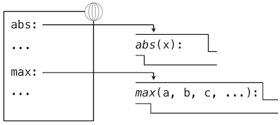
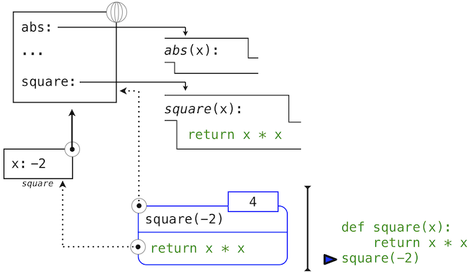
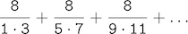
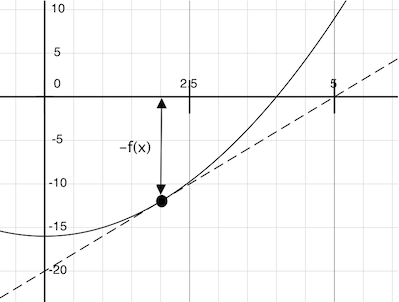
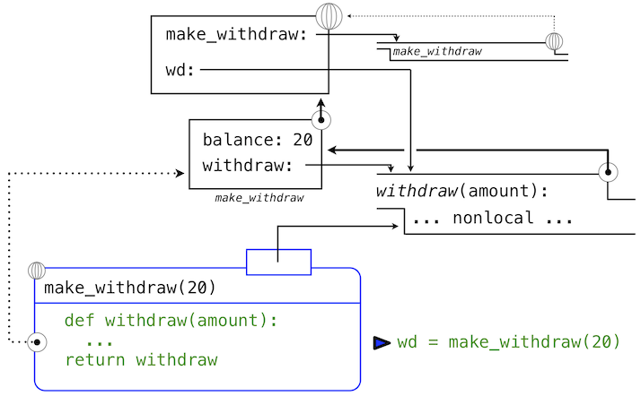
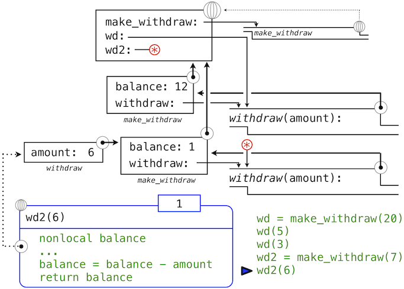
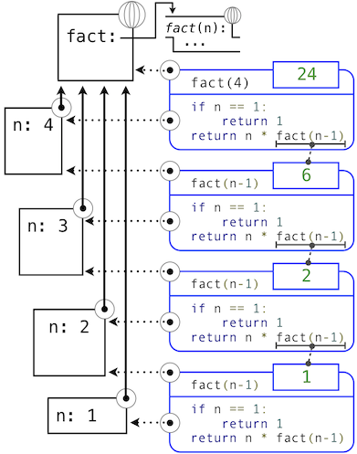
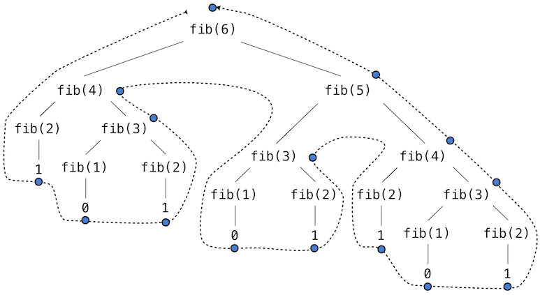
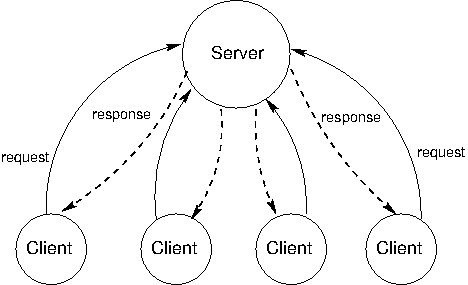
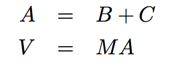

SICP Python 描述 中文版
译者：飞龙
赞助我

协议
第一章 使用函数构建抽象
来源：Chapter 1: Building Abstractions with Functions
译者：飞龙
1.1 引言
译者：飞龙
计算机科学是一个极其宽泛的学科。全球的分布式系统、人工智能、机器人、图形、安全、科学计算，计算机体系结构和许多新兴的二级领域，每年都会由于新技术和新发现而扩展。计算机科学的快速发展广泛影响了人类生活。商业、通信、科学、艺术、休闲和政治都被计算机领域彻底改造。
计算机科学的巨大生产力可能只是因为它构建在一系列优雅且强大的基础概念上。所有计算都以表达信息、指定处理它所需的逻辑、以及设计管理逻辑复杂性的抽象作为开始。对这些基础的掌握需要我们精确理解计算机如何解释程序以及执行计算过程。
这些基础概念在伯克利长期教授，使用由Harold Abelson、Gerald Jay Sussman和Julie Sussman创作的经典教科书《计算机科学的构造与解释》（SICP）。这个讲义大量借鉴了这本书，原作者慷慨地使它可用于改编和复用。
我们的智力之旅一旦出发就不能回头了，我们也永远都不应该对此有所期待。
我们将要学习计算过程的概念。计算过程是计算机中的抽象事物。在演化中，过程操纵着叫做数据的其它事物。过程的演化由叫做程序的一系列规则主导。人们创造程序来主导过程。实际上，我们使用我们的咒语来凭空创造出计算机的灵魂。
我们用于创造过程的程序就像巫师的魔法。它们由一些古怪且深奥的编程语言中的符号表达式所组成，这些语言指定了我们想让过程执行的任务。
在一台工作正确的计算机上，计算过程准确且严谨地执行程序。所以，就像巫师的学徒那样，程序员新手必须学会理解和预测他们的魔法产生的结果。
--Abelson & Sussman, SICP (1993)
1.1.1 在Python中编程
语言并不是你学到的东西，而是你参与的东西。
为了定义计算过程，我们需要一种编程语言，最好是一种许多人和大量计算机都能懂的语言。这门课中，我们将会使用Python语言。
Python是一种广泛使用的编程语言，并且在许多职业中都有它的爱好者：Web程序员、游戏工程师、科学家、学者，甚至新编程语言的设计师。当你学习Python时，你就加入到了一个数百万人的开发者社群。开发者社群是一个极其重要的组织：成员可以互相帮助来解决问题，分享他们的代码和经验，以及一起开发软件和工具。投入的成员经常由于他们的贡献而出名，并且收到广泛的尊重。也许有一天你会被提名为Python开发者精英。
Python语言自身就是一个大型志愿者社群的产物，并且为其贡献者的多元化而自豪。这种语言在20世纪80年代末由Guido van Rossum设计并首次实现。他的Python3教程的第一章解释了为什么Python在当今众多语言之中如此流行。
Python适用于作为教学语言，因为纵观它的历史，Python的开发者强调了Python代码对人类的解释性，并在Python之禅中美观、简约和可读的原则下进一步加强。Python尤其适用于课堂，因为它宽泛的特性支持大量的不同编程风格，我们将要探索它们。在Python中编程没有单一的解法，但是有一些习俗在开发者社群之间流传，它们可以使现有程序的阅读、理解，以及扩展变得容易。所以，Python的灵活性和易学性的组合可以让学生们探索许多编程范式，之后将它们新学到的知识用于数千个正在开发的项目中。
这些讲义通过使用抽象设计的技巧和严谨的计算模型，来快速介绍Python的特性。此外，这些讲义提供了Python编程的实践简介，包含一些高级语言特性和展示示例。通过这门课，学习Python将会变成自然而然的事情。
然而，Python是一门生态丰富的语言，带有大量特性和用法。我们讲到基本的计算机科学概念时，会刻意慢慢地介绍他们。对于有经验的学生，他们打算一口气学完语言的所有细节，我们推荐他们阅读Mark Pilgrim的书Dive Into Python 3，它在网上可以免费阅读。这本书的主题跟这门课极其不同，但是这本书包含了许多关于使用Python的宝贵的实用信息。事先告知：不像这些讲义，Dive Into Python 3需要一些编程经验。
开始在Python中编程的最佳方法就是直接和解释器交互。这一章会描述如何安装Python3，使用解释器开始交互式会话，以及开始编程。
1.1.2 安装Python3
就像所有伟大的软件一样，Python具有许多版本。这门课会使用Python3最新的稳定版本（本书编写时是3.2）。许多计算机都已经安装了Python的旧版本，但是它们可能不满足这门课。你应该可以在这门课上使用任何能安装Python3的计算机。不要担心，Python是免费的。
Dive Into Python 3拥有一个为所有主流平台准备的详细的安装指南。这个指南多次提到了Python3.1，但是你最好安装3.2（虽然它们的差异在这门课中非常微小）。EECS学院的所有教学机都已经安装了Python3.2。
1.1.3 交互式会话
在Python交互式会话中，你可以在提示符>>>之后键入一些Python代码。Python解释器读取并求出你输入的东西，并执行你的各种命令。
有几种开始交互式会话的途径，并且具有不同的特性。把它们尝试一遍来找出你最喜欢的方式。它们全部都在背后使用了相同的解释器（CPython）。
- 最简单且最普遍的方式就是运行Python3应用。在终端提示符后（Mac/Unix/Linux）键入
python3，或者在Windows上打开Python3应用。（译者注：Windows上设置完Python的环境变量之后，就可以在cmd或PowerShell中执行相同操作了。） - 有一个更加用户友好的应用叫做Idle3（
idle3），可用于学习这门语言。Idle会高亮你的代码（叫做语法高亮），弹出使用提示，并且标记一些错误的来源。Idle总是由Python自带，所以你已经安装它了。 - Emacs编辑器可以在它的某个缓冲区中运行交互式会话。虽然它学习起来有些挑战，Emacs是个强大且多功能的编辑器，适用于任何语言。请阅读61A的Emacs教程来开始。许多程序员投入大量时间来学习Emacs，之后他们就不再切换编辑器了。
在所有情况中，如果你看见了Python提示符>>>，你就成功开启了交互式会话。这些讲义使用提示符来展示示例，同时带有一些输入。
>>> 2 + 2
4
控制：每个会话都保留了你的历史输入。为了访问这些历史，需要按下<Control>-P（上一个）和<Control>-N（下一个）。<Control>-D会退出会话，这会清除所有历史。
1.1.4 第一个例子
想像会把不知名的事物用一种形式呈现出来，诗人的笔再使它们具有如实的形象，空虚的无物也会有了居处和名字。
--威廉·莎士比亚，《仲夏夜之梦》
为了介绍Python，我们会从一个使用多个语言特性的例子开始。下一节中，我们会从零开始，一步一步构建整个语言。你可以将这章视为即将到来的特性的预览。
Python拥有常见编程功能的内建支持，例如文本操作、显示图形以及互联网通信。导入语句
>>> from urllib.request import urlopen
为访问互联网上的数据加载功能。特别是，它提供了叫做urlopen的函数，可以访问到统一资源定位器（URL）处的内容，它是互联网上的某个位置。
语句和表达式： Python代码包含语句和表达式。广泛地说，计算机程序包含的语句
- 计算某个值
- 或执行某个操作
语句通常用于描述操作。当Python解释器执行语句时，它执行相应操作。另一方面，表达式通常描述产生值的运算。当Python求解表达式时，就会计算出它的值。这一章介绍了几种表达式和语句。
赋值语句
>>> shakespeare = urlopen('http://inst.eecs.berkeley.edu/~cs61a/fa11/shakespeare.txt')
将名称shakespeare和后面的表达式的值关联起来。这个表达式在URL上调用urlopen函数，URL包含了莎士比亚的37个剧本的完整文本，在单个文本文件中。
函数： 函数封装了操作数据的逻辑。Web地址是一块数据，莎士比亚的剧本文本是另一块数据。前者产生后者的过程可能有些复杂，但是我们可以只通过一个表达式来调用它们，因为复杂性都塞进函数里了。函数是这一章的主要话题。
另一个赋值语句
>>> words = set(shakespeare.read().decode().split())
将名称words关联到出现在莎士比亚剧本中的所有去重词汇的集合，总计33,721个。这个命令链调用了read、decode和split，每个都操作衔接的计算实体：从URL读取的数据、解码为文本的数据、以及分割为单词的文本。所有这些单词都放在set中。
对象： 集合是一种对象，它支持取交和测试成员的操作。对象整合了数据和操作数据的逻辑，并以一种隐藏其复杂性的方式。对象是第二章的主要话题。
表达式
>>> {w for w in words if len(w) >= 5 and w[::-1] in words}
{'madam', 'stink', 'leets', 'rever', 'drawer', 'stops', 'sessa',
'repaid', 'speed', 'redder', 'devil', 'minim', 'spots', 'asses',
'refer', 'lived', 'keels', 'diaper', 'sleek', 'steel', 'leper',
'level', 'deeps', 'repel', 'reward', 'knits'}
是一个复合表达式，求出正序或倒序出现的“莎士比亚词汇”集合。神秘的记号w[::-1]遍历单词中的每个字符，然而-1表明倒序遍历（::表示第一个和最后一个单词都使用默认值）。当你在交互式会话中输入表达式时，Python会在随后打印出它的值，就像上面那样。
解释器： 复合表达式的求解需要可预测的过程来精确执行解释器的代码。执行这个过程，并求解复合表达式和语句的程序就叫解释器。解释器的设计与实现是第三章的主要话题。
与其它计算机程序相比，编程语言的解释器通常比较独特。Python在意图上并没有按照莎士比亚或者回文来设计，但是它极大的灵活性让我们用极少的代码处理大量文本。
最后，我们会发现，所有这些核心概念都是紧密相关的：函数是对象，对象是函数，解释器是二者的实例。然而，对这些概念，以及它们在代码组织中的作用的清晰理解，是掌握编程艺术的关键。
1.1.5 实践指南
Python正在等待你的命令。你应当探索这门语言，即使你可能不知道完整的词汇和结构。但是，要为错误做好准备。虽然计算机极其迅速和灵活，它们也十分古板。在斯坦福的导论课中，计算机的本性描述为
计算机的基本等式是：
计算机 = 强大 + 笨拙计算机非常强大，能够迅速搜索大量数据。计算机每秒可以执行数十亿次操作，其中每个操作都非常简单。
计算机也非常笨拙和脆弱。它们所做的操作十分古板、简单和机械化。计算机缺少任何类似真实洞察力的事情...它并不像电影中的HAL 9000。如果不出意外，你不应被计算机吓到，就像它拥有某种大脑一样。它在背后非常机械化。
程序是一个人使用他的真实洞察力来构建出的一些实用的东西，它由这些简单的小操作所组成。
—Francisco Cai & Nick Parlante, 斯坦福 CS101
在你实验Python解释器的时候，你会马上意识到计算机的古板：即使最小的拼写和格式修改都会导致非预期的输出和错误。
学习解释错误和诊断非预期错误的原因叫做调试（debugging）。它的一些指导原则是：
- 逐步测试：每个写好的程序都由小型的组件模块组成，这些组件可以独立测试。尽快测试你写好的任何东西来及早捕获错误，并且从你的组件中获得自信。
- 隔离错误：复杂程序的输出、表达式、或语句中的错误，通常可以归于特定的组件模块。当尝试诊断问题时，在你能够尝试修正错误之前，一定要将它跟踪到最小的代码片段。
- 检查假设：解释器将你的指令执行为文字 -- 不多也不少。当一些代码不匹配程序员所相信的（或所假设的）行为，它们的输出就会是非预期的。了解你的假设，之后专注于验证你的假设是否整理来调试。
- 询问他人：你并不是一个人！如果你不理解某个错误信息，可以询问朋友、导师或者搜索引擎。如果你隔离了一个错误，但是不知道如何改正，可以让其它人来看一看。在小组问题解决中，会分享一大堆有价值的编程知识。
逐步测试、模块化设计、明确假设和团队作业是贯穿这门课的主题。但愿它们也能够一直伴随你的计算机科学生涯。
1.2 编程元素
来源：1.2 The Elements of Programming
译者：飞龙
编程语言是操作计算机来执行任务的手段，它也在我们组织关于过程的想法中，作为一种框架。程序用于在编程社群的成员之间交流这些想法。所以，程序必须为人类阅读而编写，并且仅仅碰巧可以让机器执行。
当我们描述一种语言时，我们应该特别注意这种语言的手段，来将简单的想法组合为更复杂的想法。每个强大的语言都拥有用于完成下列任务的机制：
- 基本的表达式和语句，它们由语言提供，表示最简单的构建代码块。
- 组合的手段，复杂的元素由简单的元素通过它来构建，以及
- 抽象的手段，复杂的元素可以通过它来命名，以及作为整体来操作。
在编程中，我们处理两种元素：函数和数据。（不久之后我们就会探索它们并不是真的非常不同。）不正式地说，数据是我们想要操作的东西，函数描述了操作数据的规则。所以，任何强大的编程语言都应该能描述基本数据和基本函数，并且应该拥有组合和抽象二者的方式。
1.2.1 表达式
在实验 Python 解释器之后，我们现在必须重新开始，按照顺序一步步地探索 Python 语言。如果示例看上去很简单，要有耐心 -- 更刺激的东西还在后面。
我们以基本表达式作为开始。一种基本表达式就是数值。更精确地说，是你键入的，由 10 进制数字表示的数值组成的表达式。
>>> 42
42
表达式表示的数值也许会和算数运算符组合，来形成复合表达式，解释器会求出它：
>>> -1 - -1
0
>>> 1/2 + 1/4 + 1/8 + 1/16 + 1/32 + 1/64 + 1/128
0.9921875
这些算术表达式使用了中缀符号，其中运算符（例如+、-、*、/）出现在操作数（数值）中间。Python包含许多方法来形成复合表达式。我们不会尝试立即将它们列举出来，而是在进行中介绍新的表达式形式，以及它们支持的语言特性。
1.2.2 调用表达式
最重要的复合表达式就是调用表达式，它在一些参数上调用函数。回忆代数中，函数的数学概念是一些输入值到输出值的映射。例如，max函数将它的输入映射到单个输出，输出是输入中的最大值。Python 中的函数不仅仅是输入输出的映射，它表述了计算过程。但是，Python 表示函数的方式和数学中相同。
>>> max(7.5, 9.5)
9.5
调用表达式拥有子表达式：运算符在圆括号之前，圆括号包含逗号分隔的操作数。运算符必须是个函数，操作数可以是任何值。这里它们都是数值。当求解这个调用表达式时，我们说max函数以参数 7.5 和 9.5 调用，并且返回 9.5。
调用表达式中的参数的顺序极其重要。例如，函数pow计算第一个参数的第二个参数次方。
>>> pow(100, 2)
10000
>>> pow(2, 100)
1267650600228229401496703205376
函数符号比中缀符号的数学惯例有很多优点。首先，函数可以接受任何数量的参数：
>>> max(1, -2, 3, -4)
3
不会产生任何歧义，因为函数的名称永远在参数前面。
其次，函数符号可以以直接的方式扩展为嵌套表达式，其中元素本身是复合表达式。在嵌套的调用表达式中，不像嵌套的中缀表达式，嵌套结构在圆括号中非常明显。
>>> max(min(1, -2), min(pow(3, 5), -4))
-2
（理论上）这种嵌套没有任何限制，并且 Python 解释器可以解释任何复杂的表达式。然而，人们可能会被多级嵌套搞晕。你作为程序员的一个重要作用就是构造你自己、你的同伴以及其它在未来可能会阅读你代码的人可以解释的表达式。
最后，数学符号在形式上多种多样：星号表示乘法，上标表示乘方，横杠表示除法，屋顶和侧壁表示开方。这些符号中一些非常难以打出来。但是，所有这些复杂事物可以通过调用表达式的符号来统一。虽然 Python 通过中缀符号（比如+和-）支持常见的数学运算符，任何运算符都可以表示为带有名字的函数。
1.2.3 导入库函数
Python 定义了大量的函数，包括上一节提到的运算符函数，但是通常不能使用它们的名字，这样做是为了避免混乱。反之，它将已知的函数和其它东西组织在模块中，这些模块组成了 Python 库。需要导入它们来使用这些元素。例如，math模块提供了大量的常用数学函数：
>>> from math import sqrt, exp
>>> sqrt(256)
16.0
>>> exp(1)
2.718281828459045
operator模块提供了中缀运算符对应的函数：
>>> from operator import add, sub, mul
>>> add(14, 28)
42
>>> sub(100, mul(7, add(8, 4)))
16
import语句标明了模块名称（例如operator或math），之后列出被导入模块的具名属性（例如sqrt和exp）。
Python 3 库文档列出了定义在每个模块中的函数，例如数学模块。然而，这个文档为了解整个语言的开发者编写。到现在为止，你可能发现使用函数做实验会比阅读文档告诉你更多它的行为。当你更熟悉 Python 语言和词汇时，这个文档就变成了一份有价值的参考来源。
1.2.4 名称和环境
编程语言的要素之一是它提供的手段，用于使用名称来引用计算对象。如果一个值被给予了名称，我们就说这个名称绑定到了值上面。
在 Python 中，我们可以使用赋值语句来建立新的绑定，它包含=左边的名称和右边的值。
>>> radius = 10
>>> radius
10
>>> 2 * radius
20
名称也可以通过import语句绑定：
>>> from math import pi
>>> pi * 71 / 223
1.0002380197528042
我们也可以在一个语句中将多个值赋给多个名称，其中名称和表达式由逗号分隔：
>>> area, circumference = pi * radius * radius, 2 * pi * radius
>>> area
314.1592653589793
>>> circumference
62.83185307179586
=符号在 Python（以及许多其它语言）中叫做赋值运算符。赋值是 Python 中的最简单的抽象手段，因为它使我们可以使用最简单的名称来引用复合操作的结果，例如上面计算的area。这样，复杂的程序可以由复杂性递增的计算对象一步一步构建，
将名称绑定到值上，以及随后通过名称来检索这些值的可能，意味着解释器必须维护某种内存来跟踪这些名称和值的绑定。这些内存叫做环境。
名称也可以绑定到函数。例如，名称max绑定到了我们曾经用过的max函数上。函数不像数值，不易于渲染成文本，所以 Python 使用识别描述来代替，当我们打印函数时：
>>> max
<built-in function max>
我们可以使用赋值运算符来给现有函数起新的名字：
>>> f = max
>>> f
<built-in function max>
>>> f(3, 4)
4
成功的赋值语句可以将名称绑定到新的值：
>>> f = 2
>>> f
2
在 Python 中，通过赋值绑定的名称通常叫做变量名称，因为它们在执行程序期间可以绑定到许多不同的值上面。
1.2.5 嵌套表达式的求解
我们这章的目标之一是隔离程序化思考相关的问题。作为一个例子，考虑嵌套表达式的求解，解释器自己会遵循一个过程：
为了求出调用表达式，Python 会执行下列事情：
- 求出运算符和操作数子表达式，之后
- 在值为操作数子表达式的参数上调用值为运算符子表达式的函数。
这个简单的过程大体上展示了一些过程上的重点。第一步表明为了完成调用表达式的求值过程，我们首先必须求出其它表达式。所以，求值过程本质上是递归的，也就是说，它会调用其自身作为步骤之一。
例如，求出
>>> mul(add(2, mul(4, 6)), add(3, 5))
208
需要应用四次求值过程。如果我们将每个需要求解的表达式抽出来，我们可以可视化这一过程的层次结构：

这个示例叫做表达式树。在计算机科学中，树从顶端向下生长。每一点上的对象叫做节点。这里它们是表达式和它们的值。
求出根节点，也就是整个表达式，需要首先求出枝干节点，也就是子表达式。叶子节点（也就是没有子节点的节点）的表达式表示函数或数值。内部节点分为两部分：表示我们想要应用的求值规则的调用表达式，以及表达式的结果。观察这棵树中的求值，我们可以想象操作数的值向上流动，从叶子节点开始，在更高的层上融合。
接下来，观察第一步的重复应用，这会将我们带到需要求值的地方，并不是调用表达式，而是基本表达式，例如数字（比如2），以及名称（比如add），我们需要规定下列事物来谨慎对待基本的东西：
- 数字求值为它标明的数值，
- 名称求值为当前环境中这个名称所关联的值
要注意环境的关键作用是决定表达式中符号的含义。Python 中，在不指定任何环境信息，来提供名称x（以及名称add）的含义的情况下，谈到这样一个表达式的值没有意义：
>>> add(x, 1)
环境提供了求值所发生的上下文，它在我们理解程序执行中起到重要作用。
这个求值过程并不符合所有 Python 代码的求解，仅仅是调用表达式、数字和名称。例如，它并不能处理赋值语句。
>>> x = 3
的执行并不返回任何值，也不求解任何参数上的函数，因为赋值的目的是将一个名称绑定到一个值上。通常，语句不会被求值，而是被执行，它们不产生值，但是会改变一些东西。每种语句或表达式都有自己的求值或执行过程，我们会在涉及时逐步介绍。
注：当我们说“数字求值为数值”的时候，我们的实际意思是 Python 解释器将数字求解为数值。Python 的解释器使编程语言具有了这个意义。假设解释器是一个固定的程序，行为总是一致，我们就可以说数字（以及表达式）自己在 Python 程序的上下文中会求解为值。
1.2.6 函数图解
当我们继续构建求值的形式模型时，我们会发现解释器内部状态的图解有助于我们跟踪求值过程的发展。这些图解的必要部分是函数的表示。
纯函数： 具有一些输入（参数）以及返回一些输出（调用结果）的函数。内建函数
>>> abs(-2)
2
可以描述为接受输入并产生输出的小型机器。

abs是纯函数。纯函数具有一个特性，调用它们时除了返回一个值之外没有其它效果。
非纯函数： 除了返回一个值之外，调用非纯函数会产生副作用，这会改变解释器或计算机的一些状态。一个普遍的副作用就是在返回值之外生成额外的输出，例如使用print函数：
>>> print(-2)
-2
>>> print(1, 2, 3)
1 2 3
虽然这些例子中的print和abs看起来很像，但它们本质上以不同方式工作。print的返回值永远是None，它是一个 Python 特殊值，表示没有任何东西。Python 交互式解释器并不会自动打印None值。这里，print自己打印了输出，作为调用中的副作用。

调用print的嵌套表达式会凸显出它的非纯特性：
>>> print(print(1), print(2))
1
2
None None
如果你发现自己不能预料到这个输出，画出表达式树来弄清为什么这个表达式的求值会产生奇怪的输出。
要当心print！它的返回值为None，意味着它不应该在赋值语句中用作表达式：
>>> two = print(2)
2
>>> print(two)
None
签名： 不同函数具有不同的允许接受的参数数量。为了跟踪这些必备条件，我们需要以一种展示函数名称和参数名称的方式，画出每个函数。abs函数值接受一个叫作number的参数，向它提供更多或更少的参数会产生错误。print函数可以接受任意数量的参数，所以它渲染为print(...)。函数的可接受参数的描述叫做函数的签名。
1.3 定义新的函数
译者：飞龙
我们已经在 Python 中认识了一些在任何强大的编程语言中都会出现的元素：
- 数值是内建数据，算数运算是函数。
- 嵌套函数提供了组合操作的手段。
- 名称到值的绑定提供了有限的抽象手段。
现在我们将要了解函数定义，一个更加强大的抽象技巧，名称通过它可以绑定到复合操作上，并可以作为一个单元来引用。
我们通过如何表达“平方”这个概念来开始。我们可能会说，“对一个数求平方就是将这个数乘上它自己”。在 Python 中就是：
>>> def square(x):
return mul(x, x)
这定义了一个新的函数，并赋予了名称square。这个用户定义的函数并不内建于解释器。它表示将一个数乘上自己的复合操作。定义中的x叫做形式参数，它为被乘的东西提供一个名称。这个定义创建了用户定义的函数，并且将它关联到名称square上。
函数定义包含def语句，它标明了<name>（名称）和一列带有名字的<formal parameters>（形式参数）。之后，return（返回）语句叫做函数体，指定了函数的<return expression>（返回表达式），它是函数无论什么时候调用都需要求值的表达式。
def <name>(<formal parameters>):
return <return expression>
第二行必须缩进！按照惯例我们应该缩进四个空格，而不是一个Tab，返回表达式并不是立即求值，它储存为新定义函数的一部分，并且只在函数最终调用时会被求出。（很快我们就会看到缩进区域可以跨越多行。）
定义了square之后，我们使用调用表达式来调用它：
>>> square(21)
441
>>> square(add(2, 5))
49
>>> square(square(3))
81
我们也可以在构建其它函数时，将square用作构建块。列入，我们可以轻易定义sum_squares函数，它接受两个数值作为参数，并返回它们的平方和：
>>> def sum_squares(x, y):
return add(square(x), square(y))
>>> sum_squares(3, 4)
25
用户定义的函数和内建函数以同种方法使用。确实，我们不可能在sum_squares的定义中分辨出square是否构建于解释器中，从模块导入还是由用户定义。
1.3.1 环境
我们的 Python 子集已经足够复杂了，但程序的含义还不是非常明显。如果形式参数和内建函数具有相同名称会如何呢？两个函数是否能共享名称而不会产生混乱呢？为了解决这些疑问，我们必须详细描述环境。
表达式求值所在的环境由帧的序列组成，它们可以表述为一些盒子。每一帧都包含了一些绑定，它们将名称和对应的值关联起来。全局帧只有一个，它包含所有内建函数的名称绑定（只展示了abs和max）。我们使用地球符号来表示全局。

赋值和导入语句会向当前环境的第一个帧添加条目。到目前为止，我们的环境只包含全局帧。
>>> from math import pi
>>> tau = 2 * pi

def语句也将绑定绑定到由定义创建的函数上。定义square之后的环境如图所示：

这些环境图示展示了当前环境中的绑定，以及它们所绑定的值（并不是任何帧的一部分）。要注意函数名称是重复的，一个在帧中，另一个是函数的一部分。这一重复是有意的，许多不同的名字可能会引用相同函数，但是函数本身只有一个内在名称。但是，在环境中由名称检索值只检查名称绑定。函数的内在名称不在名称检索中起作用。在我们之前看到的例子中：
>>> f = max
>>> f
<built-in function max>
名称max是函数的内在名称，以及打印f时我们看到的名称。此外，名称max和f在全局环境中都绑定到了相同函数上。
在我们介绍 Python 的附加特性时，我们需要扩展这些图示。每次我们这样做的时候，我们都会列出图示可以表达的新特性。
新的环境特性： 赋值和用户定义的函数定义。
1.3.2 调用用户定义的函数
为了求出运算符为用户定义函数的调用表达式，Python 解释器遵循与求出运算符为内建函数的表达式相似的过程。也就是说，解释器求出操作数表达式，并且对产生的实参调用具名函数。
调用用户定义的函数的行为引入了第二个局部帧，它只能由函数来访问。为了对一些实参调用用户定义的函数：
- 在新的局部帧中，将实参绑定到函数的形式参数上。
- 在当前帧的开头以及全局帧的末尾求出函数体。
函数体求值所在的环境由两个帧组成：第一个是局部帧，包含参数绑定，之后是全局帧，包含其它所有东西。每个函数示例都有自己的独立局部帧。

这张图包含两个不同的 Python 解释器层面：当前的环境，以及表达式树的一部分，它和要求值的代码的当前一行相关。我们描述了调用表达式的求值，用户定义的函数（蓝色）表示为两部分的圆角矩形。点线箭头表示哪个环境用于在每个部分求解表达式。
- 上半部分展示了调用表达式的求值。这个调用表达式并不在任何函数里面，所以他在全局环境中求值。所以，任何里面的名称（例如
square）都会在全局帧中检索。 - 下半部分展示了
square函数的函数体。它的返回表达式在上面的步骤1引入的新环境中求值，它将square的形式参数x的名称绑定到实参的值-2上。
环境中帧的顺序会影响由表达式中的名称检索返回的值。我们之前说名称求解为当前环境中与这个名称关联的值。我们现在可以更精确一些：
- 名称求解为当前环境中，最先发现该名称的帧中，绑定到这个名称的值。
我们关于环境、名称和函数的概念框架建立了求值模型，虽然一些机制的细节仍旧没有指明（例如绑定如何实现），我们的模型在描述解释器如何求解调用表示上，变得更准确和正确。在第三章我们会看到这一模型如何用作一个蓝图来实现编程语言的可工作的解释器。
新的环境特性： 函数调用。
1.3.3 示例：调用用户定义的函数
让我们再一次考虑两个简单的定义：
>>> from operator import add, mul
>>> def square(x):
return mul(x, x)
>>> def sum_squares(x, y):
return add(square(x), square(y))

以及求解下列调用表达式的过程：
>>> sum_squares(5, 12)
169
Python 首先会求出名称sum_squares，它在全局帧绑定了用户定义的函数。基本的数字表达式 5 和 12 求值为它们所表达的数值。
之后，Python 调用了sum_squares，它引入了局部帧，将x绑定为 5，将y绑定为 12。

这张图中，局部帧指向它的后继，全局帧。所有局部帧必须指向某个先导，这些链接定义了当前环境中的帧序列。
sum_square的函数体包含下列调用表达式：
add ( square(x) , square(y) )
________ _________ _________
"operator" "operand 0" "operand 1"
全部三个子表达式在当前环境中求值，它开始于标记为sum_squares的帧。运算符字表达式add是全局帧中发现的名称，绑定到了内建的加法函数上。两个操作数子表达式必须在加法函数调用之前依次求值。两个操作数都在当前环境中求值，开始于标记为sum_squares的帧。在下面的环境图示中，我们把这一帧叫做A，并且将指向这一帧的箭头同时替换为标签A。
在使用这个局部帧的情况下，函数体表达式mul(x, x)求值为 25。
我们的求值过程现在轮到了操作数 1，y的值为 12。Python 再次求出square的函数体。这次引入了另一个局部环境帧，将x绑定为 12。所以，操作数 1 求值为 144。
最后，对实参 25 和 144 调用加法会产生sum_squares函数体的最终值：169。
这张图虽然复杂，但是用于展示我们目前为止发展出的许多基础概念。名称绑定到值上面，它延伸到许多局部帧中，局部帧在唯一的全局帧之上，全局帧包含共享名称。表达式为树形结构，以及每次子表达式包含用户定义函数的调用时，环境必须被扩展。
所有这些机制的存在确保了名称在表达式中正确的地方解析为正确的值。这个例子展示了为什么我们的模型需要所引入的复杂性。所有三个局部帧都包含名称x的绑定。但是这个名称在不同的帧中绑定到了不同的值上。局部帧分离了这些名称。
1.3.4 局部名称
函数实现的细节之一是实现者对形式参数名称的选择不应影响函数行为。所以，下面的函数应具有相同的行为：
>>> def square(x):
return mul(x, x)
>>> def square(y):
return mul(y, y)
这个原则 -- 也就是函数应不依赖于编写者选择的参数名称 -- 对编程语言来说具有重要的结果。最简单的结果就是函数参数名称应保留在函数体的局部范围中。
如果参数不位于相应函数的局部范围中，square的参数x可能和sum_squares中的参数x产生混乱。严格来说，这并不是问题所在：不同局部帧中的x的绑定是不相关的。我们的计算模型具有严谨的设计来确保这种独立性。
我们说局部名称的作用域被限制在定义它的用户定义函数的函数体中。当一个名称不能再被访问时，它就离开了作用域。作用域的行为并不是我们模型的新事实，它是环境的工作方式的结果。
1.3.5 实践指南：选择名称
可修改的名称并不代表形式参数的名称完全不重要。反之，选择良好的函数和参数名称对于函数定义的人类可解释性是必要的。
下面的准则派生于 Python 的代码风格指南，可被所有（非反叛）Python 程序员作为指南。一些共享的约定会使社区成员之间的沟通变得容易。遵循这些约定有一些副作用，我会发现你的代码在内部变得一致。
- 函数名称应该小写，以下划线分隔。提倡描述性的名称。
- 函数名称通常反映解释器向参数应用的操作（例如
print、add、square），或者结果（例如max、abs、sum）。 - 参数名称应小写，以下划线分隔。提倡单个词的名称。
- 参数名称应该反映参数在函数中的作用，并不仅仅是满足的值的类型。
- 当作用非常明确时，单个字母的参数名称可以接受，但是永远不要使用
l（小写的L）和O（大写的o），或者I（大写的i）来避免和数字混淆。
周期性对你编写的程序复查这些准则，不用多久你的名称会变得十分 Python 化。
1.3.6 作为抽象的函数
虽然sum_squares十分简单，但是它演示了用户定义函数的最强大的特性。sum_squares函数使用square函数定义，但是仅仅依赖于square定义在输入参数和输出值之间的关系。
我们可以编写sum_squares，而不用考虑如何计算一个数值的平方。平方计算的细节被隐藏了，并可以在之后考虑。确实，在sum_squares看来，square并不是一个特定的函数体，而是某个函数的抽象，也就是所谓的函数式抽象。在这个层级的抽象中，任何能计算平方的函数都是等价的。
所以，仅仅考虑返回值的情况下，下面两个计算平方的函数是难以区分的。每个都接受数值参数并且产生那个数的平方作为返回值。
>>> def square(x):
return mul(x, x)
>>> def square(x):
return mul(x, x-1) + x
换句话说，函数定义应该能够隐藏细节。函数的用户可能不能自己编写函数，但是可以从其它程序员那里获得它作为“黑盒”。用户不应该需要知道如何实现来调用。Python 库拥有这个特性。许多开发者使用在这里定义的函数，但是很少有人看过它们的实现。实际上，许多 Python 库的实现并不完全用 Python 编写，而是 C 语言。
1.3.7 运算符
算术运算符（例如+和-）在我们的第一个例子中提供了组合手段。但是我们还需要为包含这些运算符的表达式定义求值过程。
每个带有中缀运算符的 Python 表达式都有自己的求值过程，但是你通常可以认为他们是调用表达式的快捷方式。当你看到
>>> 2 + 3
5
的时候，可以简单认为它是
>>> add(2, 3)
5
的快捷方式。
中缀记号可以嵌套，就像调用表达式那样。Python 运算符优先级中采用了常规的数学规则，它指导了如何解释带有多种运算符的复合表达式。
>>> 2 + 3 * 4 + 5
19
和下面的表达式的求值结果相同
>>> add(add(2, mul(3, 4)) , 5)
19
调用表达式的嵌套比运算符版本更加明显。Python 也允许括号括起来的子表达式，来覆盖通常的优先级规则，或者使表达式的嵌套结构更加明显：
>>> (2 + 3) * (4 + 5)
45
和下面的表达式的求值结果相同
>>> mul(add(2, 3), add(4, 5))
45
你应该在你的程序中自由使用这些运算符和括号。对于简单的算术运算，Python 在惯例上倾向于运算符而不是调用表达式。
1.4 实践指南：函数的艺术
来源：1.4 Practical Guidance: The Art of the Function
译者：飞龙
函数是所有程序的要素，无论规模大小，并且在编程语言中作为我们表达计算过程的主要媒介。目前为止，我们讨论了函数的形式特性，以及它们如何使用。我们现在跳转到如何编写良好的函数这一话题。
- 每个函数都应该只做一个任务。这个任务可以使用短小的名称来定义，使用一行文本来标识。顺序执行多个任务的函数应该拆分在多个函数中。
- 不要重复劳动（DRY）是软件工程的中心法则。所谓的DRY原则规定多个代码段不应该描述重复的逻辑。反之，逻辑应该只实现一次，指定一个名称，并且多次使用。如果你发现自己在复制粘贴一段代码，你可能发现了一个使用函数抽象的机会。
- 函数应该定义得通常一些，准确来说，平方并不是在 Python 库中，因为它是
pow函数的一个特例，这个函数计算任何数的任何次方。
这些准则提升代码的可读性，减少错误数量，并且通常使编写的代码总数最小。将复杂的任务拆分为简洁的函数是一个技巧，它需要一些经验来掌握。幸运的是，Python 提供了一些特性来支持你的努力。
1.4.1 文档字符串
函数定义通常包含描述这个函数的文档，叫做文档字符串，它必须在函数体中缩进。文档字符串通常使用三个引号。第一行描述函数的任务。随后的一些行描述参数，并且澄清函数的行为：
>>> def pressure(v, t, n):
"""Compute the pressure in pascals of an ideal gas.
Applies the ideal gas law: http://en.wikipedia.org/wiki/Ideal_gas_law
v -- volume of gas, in cubic meters
t -- absolute temperature in degrees kelvin
n -- particles of gas
"""
k = 1.38e-23 # Boltzmann's constant
return n * k * t / v
当你以函数名称作为参数来调用help时，你会看到它的文档字符串（按下q来退出 Python 帮助）。
>>> help(pressure)
编写 Python 程序时，除了最简单的函数之外，都要包含文档字符串。要记住，代码只编写一次，但是会阅读多次。Python 文档包含了文档字符串准则，它在不同的 Python 项目中保持一致。
1.4.2 参数默认值
定义普通函数的结果之一就是额外参数的引入。具有许多参数的函数调用起来非常麻烦，也难以阅读。
在 Python 中，我们可以为函数的参数提供默认值。调用这个函数时，带有默认值的参数是可选的。如果它们没有提供，默认值就会绑定到形式参数的名称上。例如，如果某个应用通常用来计算一摩尔粒子的压强，这个值就可以设为默认：
>>> k_b=1.38e-23 # Boltzmann's constant
>>> def pressure(v, t, n=6.022e23):
"""Compute the pressure in pascals of an ideal gas.
v -- volume of gas, in cubic meters
t -- absolute temperature in degrees kelvin
n -- particles of gas (default: one mole)
"""
return n * k_b * t / v
>>> pressure(1, 273.15)
2269.974834
这里，pressure的定义接受三个参数，但是在调用表达式中只提供了两个。这种情况下，n的值通过def语句的默认值获得（它看起来像对n的赋值，虽然就像这个讨论暗示的那样，更大程度上它是条件赋值）。
作为准则，用于函数体的大多数数据值应该表示为具名参数的默认值，这样便于查看，以及被函数调用者修改。一些值永远不会改变，就像基本常数k_b，应该定义在全局帧中。
1.5 控制
来源：1.5 Control
译者：飞龙
我们现在可以定义的函数能力有限，因为我们还不知道一种方法来进行测试，并且根据测试结果来执行不同的操作。控制语句可以让我们完成这件事。它们不像严格的求值子表达式那样从左向右编写，并且可以从它们控制解释器下一步做什么当中得到它们的名称。这可能基于表达式的值。
1.5.1 语句
目前为止，我们已经初步思考了如何求出表达式。然而，我们已经看到了三种语句：赋值、def和return语句。这些 Python 代码并不是表达式，虽然它们中的一部分是表达式。
要强调的是，语句的值是不相干的（或不存在的），我们使用执行而不是求值来描述语句。
每个语句都描述了对解释器状态的一些改变，执行语句会应用这些改变。像我们之前看到的return和赋值语句那样，语句的执行涉及到求解所包含的子表达式。
表达式也可以作为语句执行，其中它们会被求值，但是它们的值会舍弃。执行纯函数没有什么副作用，但是执行非纯函数会产生效果作为函数调用的结果。
考虑下面这个例子：
>>> def square(x):
mul(x, x) # Watch out! This call doesn't return a value.
这是有效的 Python 代码，但是并不是想表达的意思。函数体由表达式组成。表达式本身是个有效的语句，但是语句的效果是，mul函数被调用了，然后结果被舍弃了。如果你希望对表达式的结果做一些事情，你需要这样做：使用赋值语句来储存它，或者使用return语句将它返回：
>>> def square(x):
return mul(x, x)
有时编写一个函数体是表达式的函数是有意义的，例如调用类似print的非纯函数：
>>> def print_square(x):
print(square(x))
在最高层级上，Python 解释器的工作就是执行由语句组成的程序。但是，许多有意思的计算工作来源于求解表达式。语句管理程序中不同表达式之间的关系，以及它们的结果会怎么样。
1.5.2 复合语句
通常，Python 的代码是语句的序列。一条简单的语句是一行不以分号结束的代码。复合语句之所以这么命名，因为它是其它（简单或复合）语句的复合。复合语句一般占据多行，并且以一行以冒号结尾的头部开始，它标识了语句的类型。同时，一个头部和一组缩进的代码叫做子句（或从句）。复合语句由一个或多个子句组成。
<header>:
<statement>
<statement>
...
<separating header>:
<statement>
<statement>
...
...
我们可以这样理解我们已经见到的语句：
- 表达式、返回语句和赋值语句都是简单语句。
def语句是复合语句。def头部之后的组定义了函数体。
为每种头部特化的求值规则指导了组内的语句什么时候以及是否会被执行。我们说头部控制语句组。例如，在def语句的例子中，我们看到返回表达式并不会立即求值，而是储存起来用于以后的使用，当所定义的函数最终调用时就会求值。
我们现在也能理解多行的程序了。
- 执行语句序列需要执行第一条语句。如果这个语句不是重定向控制，之后执行语句序列的剩余部分，如果存在的话。
这个定义揭示出递归定义“序列”的基本结构：一个序列可以划分为它的第一个元素和其余元素。语句序列的“剩余”部分也是一个语句序列。所以我们可以递归应用这个执行规则。这个序列作为递归数据结构的看法会在随后的章节中再次出现。
这一规则的重要结果就是语句顺序执行，但是随后的语句可能永远不会执行到，因为有重定向控制。
实践指南： 在缩进代码组时，所有行必须以相同数量以及相同方式缩进（空格而不是Tab）。任何缩进的变动都会导致错误。
1.5.3 定义函数 II：局部赋值
一开始我们说，用户定义函数的函数体只由带有一个返回表达式的一个返回语句组成。实际上，函数可以定义为操作的序列，不仅仅是一条表达式。Python 复合语句的结构自然让我们将函数体的概念扩展为多个语句。
无论用户定义的函数何时被调用，定义中的子句序列在局部环境内执行。return语句会重定向控制：无论什么时候执行return语句，函数调用的流程都会中止，返回表达式的值会作为被调用函数的返回值。
于是，赋值语句现在可以出现在函数体中。例如，这个函数以第一个数的百分数形式，返回两个数量的绝对值，并使用了两步运算：
>>> def percent_difference(x, y):
difference = abs(x-y)
return 100 * difference / x
>>> percent_difference(40, 50)
25.0
赋值语句的效果是在当前环境的第一个帧上，将名字绑定到值上。于是，函数体内的赋值语句不会影响全局帧。函数只能操作局部作用域的现象是创建模块化程序的关键，其中纯函数只通过它们接受和返回的值与外界交互。
当然，percent_difference函数也可以写成一个表达式，就像下面这样，但是返回表达式会更加复杂：
>>> def percent_difference(x, y):
return 100 * abs(x-y) / x
目前为止，局部赋值并不会增加函数定义的表现力。当它和控制语句组合时，才会这样。此外，局部赋值也可以将名称赋为间接量，在理清复杂表达式的含义时起到关键作用。
新的环境特性： 局部赋值。
1.5.4 条件语句
Python 拥有内建的绝对值函数：
>>> abs(-2)
2
我们希望自己能够实现这个函数，但是我们当前不能直接定义函数来执行测试并做出选择。我们希望表达出，如果x是正的，abs(x)返回x，如果x是 0，abx(x)返回 0，否则abs(x)返回-x。Python 中，我们可以使用条件语句来表达这种选择。
>>> def absolute_value(x):
"""Compute abs(x)."""
if x > 0:
return x
elif x == 0:
return 0
else:
return -x
>>> absolute_value(-2) == abs(-2)
True
absolute_value的实现展示了一些重要的事情：
条件语句。 Python 中的条件语句包含一系列的头部和语句组：一个必要的if子句，可选的elif子句序列，和最后可选的else子句：
if <expression>:
<suite>
elif <expression>:
<suite>
else:
<suite>
当执行条件语句时，每个子句都按顺序处理：
- 求出头部中的表达式。
- 如果它为真，执行语句组。之后，跳过条件语句中随后的所有子句。
如果能到达else子句（仅当所有if和elif表达式值为假时），它的语句组才会被执行。
布尔上下文。 上面过程的执行提到了“假值”和“真值”。条件块头部语句中的表达式也叫作布尔上下文：它们值的真假对控制流很重要，但在另一方面，它们的值永远不会被赋值或返回。Python 包含了多种假值，包括 0、None和布尔值False。所有其他数值都是真值。在第二章中，我们就会看到每个 Python 中的原始数据类型都是真值或假值。
布尔值。 Python 有两种布尔值，叫做True和False。布尔值表示了逻辑表达式中的真值。内建的比较运算符，>、<、>=、<=、==、!=，返回这些值。
>>> 4 < 2
False
>>> 5 >= 5
True
第二个例子读作“5 大于等于 5”，对应operator模块中的函数ge。
>>> 0 == -0
True
最后的例子读作“0 等于 -0”，对应operator模块的eq函数。要注意 Python 区分赋值（=）和相等测试（==）。许多语言中都有这个惯例。
布尔运算符。 Python 也内建了三个基本的逻辑运算符：
>>> True and False
False
>>> True or False
True
>>> not False
True
逻辑表达式拥有对应的求值过程。这些过程揭示了逻辑表达式的真值有时可以不执行全部子表达式而确定，这个特性叫做短路。
为了求出表达式<left> and <right>：
- 求出子表达式
<left>。 - 如果结果
v是假值，那么表达式求值为v。 - 否则表达式的值为子表达式
<right>。
为了求出表达式<left> or <right>：
- 求出子表达式
<left>。 - 如果结果
v是真值，那么表达式求值为v。 - 否则表达式的值为子表达式
<right>。
为了求出表达式not <exp>：
- 求出
<exp>，如果值是True那么返回值是假值，如果为False则反之。
这些值、规则和运算符向我们提供了一种组合测试结果的方式。执行测试以及返回布尔值的函数通常以is开头，并不带下划线（例如isfinite、isdigit、isinstance等等）。
1.5.5 迭代
除了选择要执行的语句，控制语句还用于表达重复操作。如果我们编写的每一行代码都只执行一次，程序会变得非常没有生产力。只有通过语句的重复执行，我们才可以释放计算机的潜力，使我们更加强大。我们已经看到了重复的一种形式：一个函数可以多次调用，虽然它只定义一次。迭代控制结构是另一种将相同语句执行多次的机制。
考虑斐波那契数列，其中每个数值都是前两个的和：
0, 1, 1, 2, 3, 5, 8, 13, 21, ...
每个值都通过重复使用“前两个值的和”的规则构造。为了构造第 n 个值，我们需要跟踪我们创建了多少个值（k），以及第 k 个值（curr）和它的上一个值（pred），像这样：
>>> def fib(n):
"""Compute the nth Fibonacci number, for n >= 2."""
pred, curr = 0, 1 # Fibonacci numbers
k = 2 # Position of curr in the sequence
while k < n:
pred, curr = curr, pred + curr # Re-bind pred and curr
k = k + 1 # Re-bind k
return curr
>>> fib(8)
13
要记住逗号在赋值语句中分隔了多个名称和值。这一行：
pred, curr = curr, pred + curr
具有将curr的值重新绑定到名称pred上，以及将pred + curr的值重新绑定到curr上的效果。所有=右边的表达式会在绑定发生之前求出来。
while子句包含一个头部表达式，之后是语句组：
while <expression>:
<suite>
为了执行while子句：
- 求出头部表达式。
- 如果它为真，执行语句组，之后返回到步骤 1。
在步骤 2 中，整个while子句的语句组在头部表达式再次求值之前被执行。
为了防止while子句的语句组无限执行，它应该总是在每次通过时修改环境的状态。
不终止的while语句叫做无限循环。按下<Control>-C可以强制让 Python 停止循环。
1.5.6 实践指南：测试
函数的测试是验证函数的行为是否符合预期的操作。我们的函数现在已经足够复杂了，我们需要开始测试我们的实现。
测试是系统化执行这个验证的机制。测试通常写为另一个函数，这个函数包含一个或多个被测函数的样例调用。返回值之后会和预期结果进行比对。不像大多数通用的函数，测试涉及到挑选特殊的参数值，并使用它来验证调用。测试也可作为文档：它们展示了如何调用函数，以及什么参数值是合理的。
要注意我们也将“测试”这个词用于if或while语句的头部中作为一种技术术语。当我们将“测试”这个词用作表达式，或者用作一种验证机制时，它应该在语境中十分明显。
断言。 程序员使用assert语句来验证预期，例如测试函数的输出。assert语句在布尔上下文中只有一个表达式，后面是带引号的一行文本（单引号或双引号都可以，但是要一致）如果表达式求值为假，它就会显示。
>>> assert fib(8) == 13, 'The 8th Fibonacci number should be 13'
当被断言的表达式求值为真时，断言语句的执行没有任何效果。当它是假时，asset会造成执行中断。
为fib编写的test函数测试了几个参数，包含n的极限值：
>>> def fib_test():
assert fib(2) == 1, 'The 2nd Fibonacci number should be 1'
assert fib(3) == 1, 'The 3nd Fibonacci number should be 1'
assert fib(50) == 7778742049, 'Error at the 50th Fibonacci number'
在文件中而不是直接在解释器中编写 Python 时，测试可以写在同一个文件，或者后缀为_test.py的相邻文件中。
Doctest。 Python 提供了一个便利的方法，将简单的测试直接写到函数的文档字符串内。文档字符串的第一行应该包含单行的函数描述，后面是一个空行。参数和行为的详细描述可以跟随在后面。此外，文档字符串可以包含调用该函数的简单交互式会话：
>>> def sum_naturals(n):
"""Return the sum of the first n natural numbers
>>> sum_naturals(10)
55
>>> sum_naturals(100)
5050
"""
total, k = 0, 1
while k <= n:
total, k = total + k, k + 1
return total
之后，可以使用doctest 模块来验证交互。下面的globals函数返回全局变量的表示，解释器需要它来求解表达式。
>>> from doctest import run_docstring_examples
>>> run_docstring_examples(sum_naturals, globals())
在文件中编写 Python 时，可以通过以下面的命令行选项启动 Python 来运行一个文档中的所有 doctest。
python3 -m doctest <python_source_file>
高效测试的关键是在实现新的函数之后（甚至是之前）立即编写（以及执行）测试。只调用一个函数的测试叫做单元测试。详尽的单元测试是良好程序设计的标志。
1.6 高阶函数
译者：飞龙
我们已经看到，函数实际上是描述复合操作的抽象，这些操作不依赖于它们的参数值。在square中，
>>> def square(x):
return x * x
我们不会谈论特定数值的平方，而是一个获得任何数值平方的方法。当然，我们可以不定义这个函数来使用它，通过始终编写这样的表达式：
>>> 3 * 3
9
>>> 5 * 5
25
并且永远不会显式提及square。这种实践适合类似square的简单操作。但是对于更加复杂的操作会变得困难。通常，缺少函数定义会对我们非常不利，它会强迫我们始终工作在特定操作的层级上，这在语言中非常原始（这个例子中是乘法），而不是高级操作。我们应该从强大的编程语言索取的东西之一，是通过将名称赋为常用模式来构建抽象的能力，以及之后直接使用抽象的能力。函数提供了这种能力。
我们将会在下个例子中看到，代码中会反复出现一些常见的编程模式，但是使用一些不同函数来实现。这些模式也可以被抽象和给予名称。
为了将特定的通用模式表达为具名概念，我们需要构造可以接受其他函数作为参数的函数，或者将函数作为返回值的函数。操作函数的函数叫做高阶函数。这一节展示了高阶函数可用作强大的抽象机制，极大提升语言的表现力。
1.6.1 作为参数的函数
考虑下面三个函数，它们都计算总和。第一个，sum_naturals，计算截至n的自然数的和：
>>> def sum_naturals(n):
total, k = 0, 1
while k <= n:
total, k = total + k, k + 1
return total
>>> sum_naturals(100)
5050
第二个，sum_cubes，计算截至n的自然数的立方和：
>>> def sum_cubes(n):
total, k = 0, 1
while k <= n:
total, k = total + pow(k, 3), k + 1
return total
>>> sum_cubes(100)
25502500
第三个，计算这个级数中式子的和：

它会慢慢收敛于pi。
>>> def pi_sum(n):
total, k = 0, 1
while k <= n:
total, k = total + 8 / (k * (k + 2)), k + 4
return total
>>> pi_sum(100)
3.121594652591009
这三个函数在背后都具有相同模式。它们大部分相同，只是名字、用于计算被加项的k的函数，以及提供k的下一个值的函数不同。我们可以通过向相同的模板中填充槽位来生成每个函数：
def <name>(n):
total, k = 0, 1
while k <= n:
total, k = total + <term>(k), <next>(k)
return total
这个通用模板的出现是一个强有力的证据，证明有一个实用抽象正在等着我们表现出来。这些函数的每一个都是式子的求和。作为程序的设计者，我们希望我们的语言足够强大，便于我们编写函数来自我表达求和的概念，而不仅仅是计算特定和的函数。我们可以在 Python 中使用上面展示的通用模板，并且把槽位变成形式参数来轻易完成它。
>>> def summation(n, term, next):
total, k = 0, 1
while k <= n:
total, k = total + term(k), next(k)
return total
要注意summation接受上界n，以及函数term和next作为参数。我们可以像任何函数那样使用summation，它简洁地表达了求和。
>>> def cube(k):
return pow(k, 3)
>>> def successor(k):
return k + 1
>>> def sum_cubes(n):
return summation(n, cube, successor)
>>> sum_cubes(3)
36
使用identity函数来返回参数自己，我们就可以对整数求和：
>>> def identity(k):
return k
>>> def sum_naturals(n):
return summation(n, identity, successor)
>>> sum_naturals(10)
55
我们也可以逐步定义pi_sum，使用我们的summation抽象来组合组件。
>>> def pi_term(k):
denominator = k * (k + 2)
return 8 / denominator
>>> def pi_next(k):
return k + 4
>>> def pi_sum(n):
return summation(n, pi_term, pi_next)
>>> pi_sum(1e6)
3.1415906535898936
1.6.2 作为一般方法的函数
我们引入的用户定义函数作为一种数值运算的抽象模式，便于使它们独立于涉及到的特定数值。使用高阶函数，我们开始寻找更强大的抽象类型：一些函数表达了计算的一般方法，独立于它们调用的特定函数。
尽管函数的意义在概念上扩展了，我们对于如何求解调用表达式的环境模型也优雅地延伸到了高阶函数，没有任何改变。当一个用户定义函数以一些实参调用时，形式参数会在最新的局部帧中绑定实参的值（它们可能是函数）。
考虑下面的例子，它实现了迭代改进的一般方法，并且可以用于计算黄金比例。迭代改进算法以一个方程的解的guess（推测值）开始。它重复调用update函数来改进这个推测值，并且调用test来检查是否当前的guess“足够接近”所认为的正确值。
>>> def iter_improve(update, test, guess=1):
while not test(guess):
guess = update(guess)
return guess
test函数通常检查两个函数f和g在guess值上是否彼此接近。测试f(x)是否接近于g(x)也是计算的一般方法。
>>> def near(x, f, g):
return approx_eq(f(x), g(x))
程序中测试相似性的一个常见方式是将数值差的绝对值与一个微小的公差值相比：
>>> def approx_eq(x, y, tolerance=1e-5):
return abs(x - y) < tolerance
黄金比例，通常叫做phi，是经常出现在自然、艺术、和建筑中的数值。它可以通过iter_improve使用golden_update来计算，并且在它的后继等于它的平方时收敛。
>>> def golden_update(guess):
return 1/guess + 1
>>> def golden_test(guess):
return near(guess, square, successor)
这里，我们已经向全局帧添加了多个绑定。函数值的描述为了简短而有所删节：

使用golden_update和golden_test参数来调用iter_improve会计算出黄金比例的近似值。
>>> iter_improve(golden_update, golden_test)
1.6180371352785146
通过跟踪我们的求值过程的步骤，我们就可以观察结果如何计算。首先，iter_improve的局部帧以update、test和guess构建。在iter_improve的函数体中，名称test绑定到golden_test上，它在初始值guess上调用。之后，golden_test调用near，创建第三个局部帧，它将形式参数f和g绑定到square和successor上。

完成near的求值之后，我们看到golden_test为False，因为 1 并不非常接近于 2。所以，while子句代码组内的求值过程，以及这个机制的过程会重复多次。
这个扩展后的例子展示了计算机科学中两个相关的重要概念。首先，命名和函数允许我们抽象而远离大量的复杂性。当每个函数定义不重要时，由求值过程触发的计算过程是相当复杂的，并且我们甚至不能展示所有东西。其次，基于事实，我们拥有了非常通用的求值过程，小的组件组合在复杂的过程中。理解这个过程便于我们验证和检查我们创建的程序。
像通常一样，我们的新的一般方法iter_improve需要测试来检查正确性。黄金比例可以提供这样一个测试，因为它也有一个闭式解，我们可以将它与迭代结果进行比较。
>>> phi = 1/2 + pow(5, 1/2)/2
>>> def near_test():
assert near(phi, square, successor), 'phi * phi is not near phi + 1'
>>> def iter_improve_test():
approx_phi = iter_improve(golden_update, golden_test)
assert approx_eq(phi, approx_phi), 'phi differs from its approximation'
新的环境特性： 高阶函数。
附加部分： 我们在测试的证明中遗漏了一步。求出公差值e的范围，使得如果tolerance为e的near(x, square, successor)值为真，那么使用相同公差值的approx_eq(phi, x)值为真。
1.6.3 定义函数 III：嵌套定义
上面的例子演示了将函数作为参数传递的能力如何提高了编程语言的表现力。每个通用的概念或方程都能映射为自己的小型函数，这一方式的一个负面效果是全局帧会被小型函数弄乱。另一个问题是我们限制于特定函数的签名：iter_improve的update参数必须只接受一个参数。Python 中，嵌套函数的定义解决了这些问题，但是需要我们重新修改我们的模型。
让我们考虑一个新问题：计算一个数的平方根。重复调用下面的更新操作会收敛于x的平方根：
>>> def average(x, y):
return (x + y)/2
>>> def sqrt_update(guess, x):
return average(guess, x/guess)
这个带有两个参数的更新函数和iter_improve不兼容，并且它只提供了一个介值。我们实际上只关心最后的平方根。这些问题的解决方案是把函数放到其他定义的函数体中。
>>> def square_root(x):
def update(guess):
return average(guess, x/guess)
def test(guess):
return approx_eq(square(guess), x)
return iter_improve(update, test)
就像局部赋值，局部的def语句仅仅影响当前的局部帧。这些函数仅仅当square_root求值时在作用域内。和求值过程一致，局部的def语句在square_root调用之前并不会求值。
词法作用域。 局部定义的函数也可以访问它们定义所在作用域的名称绑定。这个例子中，update引用了名称x，它是外层函数square_root的一个形参。这种在嵌套函数中共享名称的规则叫做词法作用域。严格来说，内部函数能够访问定义所在环境（而不是调用所在位置）的名称。
我们需要两个对我们环境的扩展来兼容词法作用域。
- 每个用户定义的函数都有一个关联环境：它的定义所在的环境。
- 当一个用户定义的函数调用时，它的局部帧扩展于函数所关联的环境。
回到square_root，所有函数都在全局环境中定义，所以它们都关联到全局环境，当我们求解square_root的前两个子句时，我们创建了关联到局部环境的函数。在
>>> square_root(256)
16.00000000000039
的调用中，环境首先添加了square_root的局部帧，并且求出def语句update和test（只展示了update）：

随后，update的名称解析到这个新定义的函数上，它是向iter_improve传入的参数。在iter_improve的函数体中，我们必须以初始值 1 调用update函数。最后的这个调用以一开始只含有g的局部帧创建了update的环境，但是之前的square_root帧上仍旧含有x的绑定。

这个求值过程中，最重要的部分是函数所关联的环境变成了局部帧，它是函数求值的地方。这个改变在图中以蓝色箭头高亮。
以这种方式，update的函数体能够解析名称x。所以我们意识到了词法作用域的两个关键优势。
- 局部函数的名称并不影响定义所在函数外部的名称，因为局部函数的名称绑定到了定义处的当前局部环境中，而不是全局环境。
- 局部函数可以访问外层函数的环境。这是因为局部函数的函数体的求值环境扩展于定义处的求值环境。
update函数自带了一些数据：也就是在定义处环境中的数据。因为它以这种方式封装信息，局部定义的函数通常叫做闭包。
新的环境特性： 局部函数定义。
1.6.4 作为返回值的函数
我们的程序可以通过创建返回值是它们本身的函数，获得更高的表现力。带有词法作用域的编程语言的一个重要特性就是，局部定义函数在它们返回时仍旧持有所关联的环境。下面的例子展示了这一特性的作用。
在定义了许多简单函数之后，composition是包含在我们的编程语言中的自然组合法。也就是说，提供两个函数f(x)和g(x)，我们可能希望定义h(x) = f(g(x))。我们可以使用现有工具来定义复合函数：
>>> def compose1(f, g):
def h(x):
return f(g(x))
return h
>>> add_one_and_square = compose1(square, successor)
>>> add_one_and_square(12)
169
compose1中的1表明复合函数和返回值都只接受一个参数。这种命名惯例并不由解释器强制，1只是函数名称的一部分。
这里，我们开始观察我们在计算的复杂模型中投入的回报。我们的环境模型不需要任何修改就能支持以这种方式返回函数的能力。
1.6.5 Lambda 表达式
目前为止，每次我们打算定义新的函数时，我们都会给它一个名称。但是对于其它类型的表达式，我们不需要将一个间接产物关联到名称上。也就是说，我们可以计算a*b + c*d，而不需要给子表达式a*b或c*d，或者整个表达式来命名。Python 中，我们可以使用 Lambda 表达式凭空创建函数，它会求值为匿名函数。Lambda 表达式是函数体具有单个返回表达式的函数，不允许出现赋值和控制语句。
Lambda 表达式十分受限：它们仅仅可用于简单的单行函数，求解和返回一个表达式。在它们适用的特殊情形中，Lambda 表达式具有强大的表现力。
>>> def compose1(f,g):
return lambda x: f(g(x))
我们可以通过构造相应的英文语句来理解 Lambda 表达式：
lambda x : f(g(x))
"A function that takes x and returns f(g(x))"
一些程序员发现使用 Lambda 表达式作为匿名函数非常简短和直接。但是，复合的 Lambda 表达式非常难以辨认，尽管它们很简洁。下面的定义是是正确的，但是许多程序员不能很快地理解它：
>>> compose1 = lambda f,g: lambda x: f(g(x))
通常，Python 的代码风格倾向于显式的def语句而不是 Lambda 表达式，但是允许它们在简单函数作为参数或返回值的情况下使用。
这种风格规范不是准则，你可以想怎么写就怎么写，但是，在你编写程序时，要考虑某一天可能会阅读你的程序的人们。如果你可以让你的程序更易于理解，你就帮了人们一个忙。
Lambda 的术语是一个历史的偶然结果，来源于手写的数学符号和早期打字系统限制的不兼容。
使用 lambda 来引入过程或函数看起来是不正当的。这个符号要追溯到 Alonzo Church，他在 20 世纪 30 年代开始使用“帽子”符号；他把平方函数记为
ŷ . y × y。但是失败的打字员将这个帽子移到了参数左边，并且把它改成了大写的 lambda：Λy . y × y；之后大写的 lambda 就变成了小写，现在我们就会在数学书里看到λy . y × y，以及在 Lisp 里看到(lambda (y) (* y y))。-- Peter Norvig (norvig.com/lispy2.html)
尽管它的词源不同寻常，Lambda 表达式和函数调用相应的形式语言，以及 Lambda 演算都成为了计算机科学概念的基础，并在 Python 编程社区广泛传播。当我们学习解释器的设计时，我们将会在第三章中重新碰到这个话题。
1.6.6 示例：牛顿法
最后的扩展示例展示了函数值、局部定义和 Lambda 表达式如何一起工作来简明地表达通常的概念。
牛顿法是一个传统的迭代方法，用于寻找使数学函数返回值为零的参数。这些值叫做一元数学函数的根。寻找一个函数的根通常等价于求解一个相关的数学方程。
- 16 的平方根是满足
square(x) - 16 = 0的x值。 - 以 2 为底 32 的对数（例如 2 与某个指数的幂为 32）是满足
pow(2, x) - 32 = 0的x值。
所以，求根的通用方法会向我们提供算法来计算平方根和对数。而且，我们想要计算根的等式只包含简单操作：乘法和乘方。
在我们继续之前有个注解：我们知道如何计算平方根和对数，这个事实很容易当做自然的事情。并不只是 Python，你的手机和计算机，可能甚至你的手表都可以为你做这件事。但是，学习计算机科学的一部分是弄懂这些数如何计算，而且，这里展示的通用方法可以用于求解大量方程，而不仅仅是内建于 Python 的东西。
在开始理解牛顿法之前，我们可以开始编程了。这就是函数抽象的威力。我们简单地将之前的语句翻译成代码：
>>> def square_root(a):
return find_root(lambda x: square(x) - a)
>>> def logarithm(a, base=2):
return find_root(lambda x: pow(base, x) - a)
当然，在我们定义find_root之前，现在还不能调用任何函数，所以我们需要理解牛顿法如何工作。
牛顿法也是一个迭代改进算法：它会改进任何可导函数的根的推测值。要注意我们感兴趣的两个函数都是平滑的。对于
f(x) = square(x) - 16（细线）f(x) = pow(2, x) - 32（粗线）
在二维平面上画出x对f(x)的图像，它展示了两个函数都产生了光滑的曲线，它们在某个点穿过了 0。

由于它们是光滑的（可导的），这些曲线可以通过任何点上的直线来近似。牛顿法根据这些线性的近似值来寻找函数的根。
想象经过点(x, f(x))的一条直线，它与函数f(x)的曲线在这一点的斜率相同。这样的直线叫做切线，它的斜率叫做f在x上的导数。
这条直线的斜率是函数值改变量与函数参数改变量的比值。所以，按照f(x)除以这个斜率来平移x，就会得到切线到达 0 时的x值。

我们的牛顿更新操作表达了跟随这条切线到零的计算过程。我们通过在非常小的区间上计算函数斜率来近似得到函数的导数。
>>> def approx_derivative(f, x, delta=1e-5):
df = f(x + delta) - f(x)
return df/delta
>>> def newton_update(f):
def update(x):
return x - f(x) / approx_derivative(f, x)
return update
最后，我们可以定义基于newton_update（我们的迭代改进算法）的find_root函数，以及一个测试来观察f(x)是否接近于 0。我们提供了一个较大的初始推测值来提升logarithm的性能。
>>> def find_root(f, initial_guess=10):
def test(x):
return approx_eq(f(x), 0)
return iter_improve(newton_update(f), test, initial_guess)
>>> square_root(16)
4.000000000026422
>>> logarithm(32, 2)
5.000000094858201
当你实验牛顿法时，要注意它不总是收敛的。iter_improve的初始推测值必须足够接近于根，而且函数必须满足各种条件。虽然具有这些缺陷，牛顿法是一个用于解决微分方程的强大的通用计算方法。实际上，非常快速的对数算法和大整数除法也采用这个技巧的变体。
1.6.7 抽象和一等函数
这一节的开始，我们以观察用户定义函数作为关键的抽象技巧，因为它们让我们能够将计算的通用方法表达为编程语言中的显式元素。现在我们已经看到了高阶函数如何让我们操作这些通用方法来进一步创建抽象。
作为程序员，我们应该留意识别程序中低级抽象的机会，在它们之上构建，并泛化它们来创建更加强大的抽象。这并不是说，一个人应该总是尽可能以最抽象的方式来编程；专家级程序员知道如何选择合适于他们任务的抽象级别。但是能够基于这些抽象来思考，以便我们在新的上下文中能使用它们十分重要。高阶函数的重要性是，它允许我们更加明显地将这些抽象表达为编程语言中的元素，使它们能够处理其它的计算元素。
通常，编程语言会限制操作计算元素的途径。带有最少限制的元素被称为具有一等地位。一些一等元素的“权利和特权”是：
- 它们可以绑定到名称。
- 它们可以作为参数向函数传递。
- 它们可以作为函数的返回值返回。
- 它们可以包含在数据结构中。
Python 总是给予函数一等地位，所产生的表现力的收益是巨大的。另一方面，控制结构不能做到：你不能像使用sum那样将if传给一个函数。
1.6.8 函数装饰器
Python 提供了特殊的语法，将高阶函数用作执行def语句的一部分，叫做装饰器。
>>> def trace1(fn):
def wrapped(x):
print('-> ', fn, '(', x, ')')
return fn(x)
return wrapped
>>> @trace1
def triple(x):
return 3 * x
>>> triple(12)
-> <function triple at 0x102a39848> ( 12 )
36
这个例子中，定义了高阶函数trace1，它返回一个函数，这个函数在调用它的参数之前执行print语句来输出参数。triple的def语句拥有一个注解，@trace1，它会影响def的执行规则。像通常一样，函数triple被创建了，但是，triple的名称并没有绑定到这个函数上，而是绑定到了在新定义的函数triple上调用trace1的返回函数值上。在代码中，这个装饰器等价于：
>>> def triple(x):
return 3 * x
>>> triple = trace1(triple)
附加部分： 实际规则是，装饰器符号@可以放在表达式前面（@trace1仅仅是一个简单的表达式，由单一名称组成）。任何产生合适的值的表达式都可以。例如，使用合适的值，你可以定义装饰器check_range，使用@check_range(1, 10)来装饰函数定义，这会检查函数的结果来确保它们是 1 到 10 的整数。调用check_range(1,10)会返回一个函数，之后它会用在新定义的函数上，在新定义的函数绑定到def语句中的名称之前。感兴趣的同学可以阅读 Ariel Ortiz 编写的一篇装饰器的简短教程来了解更多的例子。
第二章 使用对象构建抽象
来源：Chapter 2: Building Abstractions with Objects
译者：飞龙
2.1 引言
译者：飞龙
在第一章中，我们专注于计算过程，以及程序设计中函数的作用。我们看到了如何使用原始数据（数值）和原始操作（算术运算），如何通过组合和控制来形成复合函数，以及如何通过给予过程名称来创建函数抽象。我们也看到了高阶函数通过操作通用计算方法来提升语言的威力。这是编程的本质。
这一章会专注于数据。数据允许我们通过使用已经获得的计算工具，表示和操作与世界有关的信息。脱离数据结构的编程可能会满足于探索数学特性，但是真实世界的情况，比如文档、关系、城市和气候模式，都拥有复杂的结构，它最好使用复合数据类型来表现。归功于互联网的高速发展，关于世界的大量结构信息可以免费从网上获得。
2.1.1 对象隐喻
在这门课的开始，我们区分了函数和数据：函数执行操作，而数据被操作。当我们在数据中包含函数值时，我们承认数据也拥有行为。函数可以像数据一样被操作，但是也可以被调用来执行计算。
在这门课中，对象作为我们对数据值的核心编程隐喻，它同样拥有行为。对象表示信息，但是同时和它们所表示的抽象概念行为一致。对象如何和其它对象交互的逻辑，和编码对象值的信息绑定在一起。在打印对象时，它知道如何以字母和数字把自己拼写出来。如果一个对象由几部分组成，它知道如何按照要求展示这些部分。对象既是信息也是过程，它们绑定在一起来展示复杂事物的属性、交互和行为。
Python 中所实现的对象隐喻具有特定的对象语法和相关的术语，我们会使用示例来介绍。日期（date）就是一种简单对象。
>>> from datetime import date
date的名字绑定到了一个类上面。类表示一类对象。独立的日期叫做这个类的实例，它们可以通过像函数那样在参数上调用这个类来构造，这些参数描述了实例。
>>> today = date(2011, 9, 12)
虽然today从原始数值中构造，它的行为就像日期那样。例如，将它与另一个日期相减会得到时间差，它可以通过调用str来展示为一行文本：
>>> str(date(2011, 12, 2) - today)
'81 days, 0:00:00'
对象拥有属性，它们是带有名字的值，也是对象的一部分。Python 中，我们使用点运算符来访问对象属性：
<expression> . <name>
上面的<expression>求值为对象，<name>是对象的某个属性名称。
不像我们之前见过的名称，这些属性名称在一般的环境中不可用。反之，属性名称是点运算符之前的对象实例的特定部分。
>>> today.year
2011
对象也拥有方法，它是值为函数的属性。在隐喻上，对象“知道”如何执行这些方法。方法从它们的参数和对象中计算出它们的结果。例如，today的strftime方法接受一个指定如何展示日期的参数（例如%A表示星期几应该以全称拼写）。
>>> today.strftime('%A, %B %d')
'Monday, September 12'
计算strftime的返回值需要两个输入：描述输出格式的字符串，以及绑定到today的日期信息。这个方法使用日期特定的逻辑来产生结果。我们从不会说 2011 年九月十二日是星期一，但是知道一个人的工作日是日期的一部分。通过绑定行为和信息，Python 对象提供了可靠、独立的日期抽象。
点运算符在 Python 中提供了另一种组合表达式。点运算符拥有定义好的求值过程。但是，点运算符如何求值的精确解释，要等到我们引入面向对象编程的完整范式，在几节之后。
即使我们还不能精确描述对象如何工作，我们还是可以开始将数据看做对象，因为 Python 中万物皆对象。
2.1.2 原始数据类型
Python 中每个对象都拥有一个类型。type函数可以让我们查看对象的类型。
>>> type(today)
<class 'datetime.date'>
目前为止，我们学过的对象类型只有数值、函数、布尔值和现在的日期。我们也碰到了集合和字符串，但是需要更深入地学习它们。有许多其它的对象类型 -- 声音、图像、位置、数据连接等等 -- 它们的多数可以通过组合和抽象的手段来定义，我们在这一章会研究它们。Python 只有一小部分内建于语言的原始或原生数据类型。
原始数据类型具有以下特性：
- 原始表达式可以计算这些类型的对象，叫做字面值。
- 内建的函数、运算符和方法可以操作这些对象。
像我们看到的那样，数值是原始类型，数字字面值求值为数值，算术运算符操作数值对象：
>>> 12 + 3000000000000000000000000
3000000000000000000000012
实际上，Python 包含了三个原始数值类型：整数（int）、实数（float）和复数（complex）。
>>> type(2)
<class 'int'>
>>> type(1.5)
<class 'float'>
>>> type(1+1j)
<class 'complex'>
名称float来源于实数在 Python 中表示的方式：“浮点”表示。虽然数值表示的细节不是这门课的话题，一些int和float对象的高层差异仍然很重要。特别是，int对象只能表示整数，但是表示得更精确，不带有任何近似。另一方面，float对象可以表示很大范围内的分数，但是不能表示所有有理数。然而，浮点对象通常用于近似表示实数和有理数，舍入到某个有效数字的数值。
扩展阅读。 下面的章节介绍了更多的 Python 原始数据类型，专注于它们在创建实用数据抽象中的作用。Dive Into Python 3 中的原始数据类型一章提供了所有 Python 数据类型的实用概览，以及如何高效使用它们，还包含了许多使用示例和实践提示。你现在并不需要阅读它，但是要考虑将它作为宝贵的参考。
2.2 数据抽象
译者：飞龙
由于我们希望在程序中表达世界中的大量事物，我们发现它们的大多数都具有复合结构。日期是年月日，地理位置是精度和纬度。为了表示位置，我们希望程序语言具有将精度和纬度“粘合”为一对数据的能力 -- 也就是一个复合数据结构 -- 使我们的程序能够以一种方式操作数据，将位置看做单个概念单元，它拥有两个部分。
复合数据的使用也让我们增加程序的模块性。如果我们可以直接将地理位置看做对象来操作，我们就可以将程序的各个部分分离，它们根据这些值如何表示来从本质上处理这些值。将某个部分从程序中分离的一般技巧是一种叫做数据抽象的强大的设计方法论。这个部分用于处理数据表示，而程序用于操作数据。数据抽象使程序更易于设计、维护和修改。
数据抽象的特征类似于函数抽象。当我们创建函数抽象时，函数如何实现的细节被隐藏了，而且特定的函数本身可以被任何具有相同行为的函数替换。换句话说，我们可以构造抽象来使函数的使用方式和函数的实现细节分离。与之相似，数据抽象是一种方法论，使我们将复合数据对象的使用细节与它的构造方式隔离。
数据抽象的基本概念是构造操作抽象数据的程序。也就是说，我们的程序应该以一种方式来使用数据，对数据做出尽可能少的假设。同时，需要定义具体的数据表示，独立于使用数据的程序。我们系统中这两部分的接口是一系列函数，叫做选择器和构造器，它们基于具体表示实现了抽象数据。为了演示这个技巧，我们需要考虑如何设计一系列函数来操作有理数。
当你阅读下一节时，要记住当今编写的多数 Python 代码使用了非常高级的抽象数据类型，它们内建于语言中，比如类、字典和列表。由于我们正在了解这些抽象的工作原理，我们自己不能使用它们。所以，我们会编写一些不那么 Python 化的代码 -- 它并不是在语言中实现我们的概念的通常方式。但是，我们所编写的代码出于教育目的，它展示了这些抽象如何构建。要记住计算机科学并不只是学习如何使用编程语言，也学习它们的工作原理。
2.2.1 示例：有理数的算术
有理数可表示为整数的比值，并且它组成了实数的一个重要子类。类似于1/3或者17/29的有理数通常可编写为：
<numerator>/<denominator>
其中，<numerator>和<denominator>都是值为整数的占位符。有理数的值需要两部分来描述。
有理数在计算机科学中很重要，因为它们就像整数那样，可以准确表示。无理数（比如pi 或者 e 或者 sqrt(2)）会使用有限的二元展开代替为近似值。所以在原则上，有理数的处理应该让我们避免算术中的近似误差。
但是，一旦我们真正将分子与分母相除，我们就会只剩下截断的小数近似值：
>>> 1/3
0.3333333333333333
当我们开始执行测试时，这个近似值的问题就会出现：
>>> 1/3 == 0.333333333333333300000 # Beware of approximations
True
计算机如何将实数近似为定长的小数扩展，是另一门课的话题。这里的重要概念是，通过将有理数表示为整数的比值，我们能够完全避免近似问题。所以出于精确，我们希望将分子和分母分离，但是将它们看做一个单元。
我们从函数抽象中了解到，我们可以在了解某些部分的实现之前开始编出东西来。让我们一开始假设我们已经拥有一种从分子和分母中构造有理数的方式。我们也假设，给定一个有理数，我们都有办法来提取（或选中）它的分子和分母。让我们进一步假设，构造器和选择器以下面三个函数来提供：
make_rat(n, d)返回分子为n和分母为d的有理数。numer(x)返回有理数x的分子。denom(x)返回有理数x的分母。
我们在这里正在使用一个强大的合成策略：心想事成。我们并没有说有理数如何表示，或者numer、denom和make_rat如何实现。即使这样，如果我们拥有了这三个函数，我们就可以执行加法、乘法，以及测试有理数的相等性，通过调用它们：
>>> def add_rat(x, y):
nx, dx = numer(x), denom(x)
ny, dy = numer(y), denom(y)
return make_rat(nx * dy + ny * dx, dx * dy)
>>> def mul_rat(x, y):
return make_rat(numer(x) * numer(y), denom(x) * denom(y))
>>> def eq_rat(x, y):
return numer(x) * denom(y) == numer(y) * denom(x)
现在我们拥有了由选择器函数numer和denom，以及构造器函数make_rat定义的有理数操作。但是我们还没有定义这些函数。我们需要以某种方式来将分子和分母粘合为一个单元。
2.2.2 元组
为了实现我们的数据抽象的具体层面，Python 提供了一种复合数据结构叫做tuple，它可以由逗号分隔的值来构造。虽然并不是严格要求，圆括号通常在元组周围。
>>> (1, 2)
(1, 2)
元组的元素可以由两种方式解构。第一种是我们熟悉的多重赋值：
>>> pair = (1, 2)
>>> pair
(1, 2)
>>> x, y = pair
>>> x
1
>>> y
2
实际上，多重赋值的本质是创建和解构元组。
访问元组元素的第二种方式是通过下标运算符，写作方括号：
>>> pair[0]
1
>>> pair[1]
2
Python 中的元组（以及多数其它编程语言中的序列）下标都以 0 开始，也就是说，下标 0 表示第一个元素，下标 1 表示第二个元素，以此类推。我们对这个下标惯例的直觉是，下标表示一个元素距离元组开头有多远。
与元素选择操作等价的函数叫做__getitem__，它也使用位置在元组中选择元素，位置的下标以 0 开始。
>>> from operator import getitem
>>> getitem(pair, 0)
1
元素是原始类型，也就是说 Python 的内建运算符可以操作它们。我们不久之后再来看元素的完整特性。现在，我们只对元组如何作为胶水来实现抽象数据类型感兴趣。
表示有理数。 元素提供了一个自然的方式来将有理数实现为一对整数：分子和分母。我们可以通过操作二元组来实现我们的有理数构造器和选择器函数。
>>> def make_rat(n, d):
return (n, d)
>>> def numer(x):
return getitem(x, 0)
>>> def denom(x):
return getitem(x, 1)
用于打印有理数的函数完成了我们对抽象数据结构的实现。
>>> def str_rat(x):
"""Return a string 'n/d' for numerator n and denominator d."""
return '{0}/{1}'.format(numer(x), denom(x))
将它与我们之前定义的算术运算放在一起，我们可以使用我们定义的函数来操作有理数了。
>>> half = make_rat(1, 2)
>>> str_rat(half)
'1/2'
>>> third = make_rat(1, 3)
>>> str_rat(mul_rat(half, third))
'1/6'
>>> str_rat(add_rat(third, third))
'6/9'
就像最后的例子所展示的那样，我们的有理数实现并没有将有理数化为最简。我们可以通过修改make_rat来补救。如果我们拥有用于计算两个整数的最大公约数的函数，我们可以在构造一对整数之前将分子和分母化为最简。这可以使用许多实用工具，例如 Python 库中的现存函数。
>>> from fractions import gcd
>>> def make_rat(n, d):
g = gcd(n, d)
return (n//g, d//g)
双斜杠运算符//表示整数除法，它会向下取整除法结果的小数部分。由于我们知道g能整除n和d，整数除法正好适用于这里。现在我们的
>>> str_rat(add_rat(third, third))
'2/3'
符合要求。这个修改只通过修改构造器来完成，并没有修改任何实现实际算术运算的函数。
扩展阅读。 上面的str_rat实现使用了格式化字符串，它包含了值的占位符。如何使用格式化字符串和format方法的细节请见 Dive Into Python 3 的格式化字符串一节。
2.2.3 抽象界限
在以更多复合数据和数据抽象的例子继续之前，让我们思考一些由有理数示例产生的问题。我们使用构造器make_rat和选择器numer和denom定义了操作。通常，数据抽象的底层概念是，基于某个值的类型的操作如何表达，为这个值的类型确定一组基本的操作。之后使用这些操作来操作数据。
我们可以将有理数系统想象为一系列层级。

平行线表示隔离系统不同层级的界限。每一层上，界限分离了使用数据抽象的函数（上面）和实现数据抽象的函数（下面）。使用有理数的程序仅仅通过算术函数来操作它们：add_rat、mul_rat和eq_rat。相应地，这些函数仅仅由构造器和选择器make_rat、numer和and denom来实现，它们本身由元组实现。元组如何实现的字节和其它层级没有关系，只要元组支持选择器和构造器的实现。
每一层上，盒子中的函数强制划分了抽象的边界，因为它们仅仅依赖于上层的表现（通过使用）和底层的实现（通过定义）。这样，抽象界限可以表现为一系列函数。
抽象界限具有许多好处。一个好处就是，它们使程序更易于维护和修改。很少的函数依赖于特定的表现，当一个人希望修改表现时，不需要做很多修改。
2.2.4 数据属性
我们通过实现算术运算来开始实现有理数，实现为这三个非特定函数：make_rat、numer和denom。这里，我们可以认为已经定义了数据对象 -- 分子、分母和有理数 -- 上的运算，它们的行为由这三个函数规定。
但是数据意味着什么？我们还不能说“提供的选择器和构造器实现了任何东西”。我们需要保证这些函数一起规定了正确的行为。也就是说，如果我们从整数n和d中构造了有理数x，那么numer(x)/denom(x)应该等于n/d。
通常，我们可以将抽象数据类型当做一些选择器和构造器的集合，并带有一些行为条件。只要满足了行为条件（比如上面的除法特性），这些函数就组成了数据类型的有效表示。
这个观点可以用在其他数据类型上，例如我们为实现有理数而使用的二元组。我们实际上不会谈论元组是什么，而是谈论由语言提供的，用于操作和创建元组的运算符。我们现在可以描述二元组的行为条件，二元组通常叫做偶对，在表示有理数的问题中有所涉及。
为了实现有理数，我们需要一种两个整数的粘合形式，它具有下列行为：
- 如果一个偶对
p由x和y构造，那么getitem_pair(p, 0)返回x，getitem_pair(p, 1)返回y。
我们可以实现make_pair和getitem_pair，它们和元组一样满足这个描述：
>>> def make_pair(x, y):
"""Return a function that behaves like a pair."""
def dispatch(m):
if m == 0:
return x
elif m == 1:
return y
return dispatch
>>> def getitem_pair(p, i):
"""Return the element at index i of pair p."""
return p(i)
使用这个实现，我们可以创建和操作偶对：
>>> p = make_pair(1, 2)
>>> getitem_pair(p, 0)
1
>>> getitem_pair(p, 1)
2
这个函数的用法不同于任何直观上的，数据应该是什么的概念。而且，这些函数满足于在我们的程序中表示复合数据。
需要注意的微妙的一点是，由make_pair返回的值是叫做dispatch的函数，它接受参数m并返回x或y。之后，getitem_pair调用了这个函数来获取合适的值。我们在这一章中会多次返回这个调度函数的话题。
这个偶对的函数表示并不是 Python 实际的工作机制（元组实现得更直接，出于性能因素），但是它可以以这种方式工作。这个函数表示虽然不是很明显，但是是一种足够完美来表示偶对的方式，因为它满足了偶对唯一需要满足的条件。这个例子也表明，将函数当做值来操作的能力，提供给我们表示复合数据的能力。
2.3 序列
译者：飞龙
序列是数据值的顺序容器。不像偶对只有两个元素，序列可以拥有任意（但是有限）个有序元素。
序列在计算机科学中是强大而基本的抽象。例如，如果我们使用序列，我们就可以列出伯克利的每个学生，或者世界上的每所大学，或者每所大学中的每个学生。我们可以列出上过的每一门课，提交的每个作业，或者得到的每个成绩。序列抽象让数千个数据驱动的程序影响着我们每天的生活。
序列不是特定的抽象数据类型，而是不同类型共有的一组行为。也就是说，它们是许多序列种类，但是都有一定的属性。特别地，
长度。 序列拥有有限的长度。
元素选择。 序列的每个元素都拥有相应的非负整数作为下标，它小于序列长度，以第一个元素的 0 开始。
不像抽象数据类型，我们并没有阐述如何构造序列。序列抽象是一组行为，它们并没有完全指定类型（例如，使用构造器和选择器），但是可以在多种类型中共享。序列提供了一个抽象层级，将特定程序如何操作序列类型的细节隐藏。
这一节中，我们开发了一个特定的抽象数据类型，它可以实现序列抽象。我们之后介绍实现相同抽象的 Python 内建类型。
2.3.1 嵌套偶对
对于有理数，我们使用二元组将两个整数对象配对，之后展示了我们可以同样通过函数来实现偶对。这种情况下，每个我们构造的偶对的元素都是整数。然而，就像表达式，元组可以嵌套。每个偶对的元素本身也可以是偶对，这个特性在实现偶对的任意一个方法，元组或调度函数中都有效。
可视化偶对的一个标准方法 -- 这里也就是偶对(1,2) -- 叫做盒子和指针记号。每个值，复合或原始，都描述为指向盒子的指针。原始值的盒子只包含那个值的表示。例如，数值的盒子只包含数字。偶对的盒子实际上是两个盒子：左边的部分（箭头指向的）包含偶对的第一个元素，右边的部分包含第二个。
嵌套元素的 Python 表达式：
>>> ((1, 2), (3, 4))
((1, 2), (3, 4))
具有下面的结构：
使用元组作为其它元组元素的能力，提供了我们编程语言中的一个新的组合手段。我们将这种将元组以这种方式嵌套的能力叫做元组数据类型的封闭性。通常，如果组合结果自己可以使用相同的方式组合，组合数据值的方式就满足封闭性。封闭性在任何组合手段中都是核心能力，因为它允许我们创建层次数据结构 -- 结构由多个部分组成，它们自己也由多个部分组成，以此类推。我们在第三章会探索一些层次结构。现在，我们考虑一个特定的重要结构。
2.3.2 递归列表
我们可以使用嵌套偶对来构建任意长度的元素列表，它让我们能够实现抽象序列。下面的图展示了四元素列表1, 2, 3, 4的递归表示：

这个列表由一系列偶对表示。每个偶对的第一个元素是列表中的元素，而第二个元素是用于表示列表其余部分的偶对。最后一个偶对的第二个元素是None，它表明列表到末尾了。我们可以使用嵌套的元组字面值来构造这个结构：
>>> (1, (2, (3, (4, None))))
(1, (2, (3, (4, None))))
这个嵌套的结构通常对应了一种非常实用的序列思考方式，我们在 Python 解释器的执行规则中已经见过它了。一个非空序列可以划分为：
- 它的第一个元素，以及
- 序列的其余部分。
序列的其余部分本身就是一个（可能为空的）序列。我们将序列的这种看法叫做递归，因为序列包含其它序列作为第二个组成部分。
由于我们的列表表示是递归的，我们在实现中叫它rlist，以便不会和 Python 内建的list类型混淆，我们会稍后在这一章介绍它。一个递归列表可以由第一个元素和列表的剩余部分构造。None值表示空的递归列表。
>>> empty_rlist = None
>>> def make_rlist(first, rest):
"""Make a recursive list from its first element and the rest."""
return (first, rest)
>>> def first(s):
"""Return the first element of a recursive list s."""
return s[0]
>>> def rest(s):
"""Return the rest of the elements of a recursive list s."""
return s[1]
这两个选择器和一个构造器，以及一个常量共同实现了抽象数据类型的递归列表。递归列表唯一的行为条件是，就像偶对那样，它的构造器和选择器是相反的函数。
- 如果一个递归列表
s由元素f和列表r构造，那么first(s)返回f，并且rest(s)返回r。
我们可以使用构造器和选择器来操作递归列表。
>>> counts = make_rlist(1, make_rlist(2, make_rlist(3, make_rlist(4, empty_rlist))))
>>> first(counts)
1
>>> rest(counts)
(2, (3, (4, None)))
递归列表可以按序储存元素序列，但是它还没有实现序列的抽象。使用我们已经定义的数据类型抽象，我们就可以实现描述两个序列的行为：长度和元素选择。
>>> def len_rlist(s):
"""Return the length of recursive list s."""
length = 0
while s != empty_rlist:
s, length = rest(s), length + 1
return length
>>> def getitem_rlist(s, i):
"""Return the element at index i of recursive list s."""
while i > 0:
s, i = rest(s), i - 1
return first(s)
现在，我们可以将递归列表用作序列了：
>>> len_rlist(counts)
4
>>> getitem_rlist(counts, 1) # The second item has index 1
2
两个实现都是可迭代的。它们隔离了嵌套偶对的每个层级，直到列表的末尾（在len_rlist中），或者到达了想要的元素（在getitem_rlist中）。
下面的一系列环境图示展示了迭代过程，getitem_rlist通过它找到了递归列表中下标1中的元素2。

while头部中的表达式求值为真，这会导致while语句组中的赋值语句被执行：

这里，局部名称s现在指向以原列表第二个元素开始的子列表。现在，while头中的表达式求值为假，于是 Python 会求出getitem_rlist最后一行中返回语句中的表达式。
最后的环境图示展示了调用first的局部帧，它包含绑定到相同子列表的s。first函数挑选出值2并返回了它，完成了getitem_rlist的调用。
这个例子演示了递归列表计算的常见模式，其中迭代的每一步都操作原列表的一个逐渐变短的后缀。寻找递归列表的长度和元素的渐进式处理过程需要一些时间来计算。（第三章中，我们会学会描述这种函数的计算时间。）Python 的内建序列类型以不同方式实现，它对于计算序列长度和获取元素并不具有大量的计算开销。
2.3.2 元组 II
实际上，我们引入用于形成原始偶对的tuple类型本身就是完整的序列类型。元组比起我们以函数式实现的偶对抽象数据结构，本质上提供了更多功能。
元组具有任意的长度，并且也拥有序列抽象的两个基本行为：长度和元素选择。下面的digits是一个四元素元组。
>>> digits = (1, 8, 2, 8)
>>> len(digits)
4
>>> digits[3]
8
此外，元素可以彼此相加以及与整数相乘。对于元组，加法和乘法操作并不对元素相加或相乘，而是组合和重复元组本身。也就是说，operator模块中的add函数（以及+运算符）返回两个被加参数连接成的新元组。operator模块中的mul函数（以及*运算符）接受整数k和元组，并返回含有元组参数k个副本的新元组。
>>> (2, 7) + digits * 2
(2, 7, 1, 8, 2, 8, 1, 8, 2, 8)
映射。 将一个元组变换为另一个元组的强大手段是在每个元素上调用函数，并收集结果。这一计算的常用形式叫做在序列上映射函数，对应内建函数map。map的结果是一个本身不是序列的对象，但是可以通过调用tuple来转换为序列。它是元组的构造器。
>>> alternates = (-1, 2, -3, 4, -5)
>>> tuple(map(abs, alternates))
(1, 2, 3, 4, 5)
map函数非常重要，因为它依赖于序列抽象：我们不需要关心底层元组的结构，只需要能够独立访问每个元素，以便将它作为参数传入用于映射的函数中（这里是abs）。
2.3.4 序列迭代
映射本身就是通用计算模式的一个实例：在序列中迭代所有元素。为了在序列上映射函数，我们不仅仅需要选择特定的元素，还要依次选择每个元素。这个模式非常普遍，Python 拥有额外的控制语句来处理序列数据：for语句。
考虑一个问题，计算一个值在序列中出现了多少次。我们可以使用while循环实现一个函数来计算这个数量。
>>> def count(s, value):
"""Count the number of occurrences of value in sequence s."""
total, index = 0, 0
while index < len(s):
if s[index] == value:
total = total + 1
index = index + 1
return total
>>> count(digits, 8)
2
Python for语句可以通过直接迭代元素值来简化这个函数体，完全不需要引入index。例如（原文是For example，为双关语），我们可以写成：
>>> def count(s, value):
"""Count the number of occurrences of value in sequence s."""
total = 0
for elem in s:
if elem == value:
total = total + 1
return total
>>> count(digits, 8)
2
for语句按照以下过程来执行：
- 求出头部表达式
<expression>，它必须产生一个可迭代的值。 - 对于序列中的每个元素值，按顺序：
- 在局部环境中将变量名
<name>绑定到这个值上。 - 执行语句组
<suite>。
- 在局部环境中将变量名
步骤 1 引用了可迭代的值。序列是可迭代的，它们的元素可看做迭代的顺序。Python 的确拥有其他可迭代类型，但是我们现在只关注序列。术语“可迭代对象”的一般定义会在第四章的迭代器一节中出现。
这个求值过程的一个重要结果是，在for语句执行完毕之后，<name>会绑定到序列的最后一个元素上。这个for循环引入了另一种方式，其中局部环境可以由语句来更新。
序列解构。 程序中的一个常见模式是，序列的元素本身就是序列，但是具有固定的长度。for语句可在头部中包含多个名称，将每个元素序列“解构”为各个元素。例如，我们拥有一个偶对（也就是二元组）的序列：
>>> pairs = ((1, 2), (2, 2), (2, 3), (4, 4))
下面的for语句的头部带有两个名词，会将每个名称x和y分别绑定到每个偶对的第一个和第二个元素上。
>>> for x, y in pairs:
if x == y:
same_count = same_count + 1
>>> same_count
2
这个绑定多个名称到定长序列中多个值的模式，叫做序列解构。它的模式和我们在赋值语句中看到的，将多个名称绑定到多个值的模式相同。
范围。 range是另一种 Python 的内建序列类型，它表示一个整数范围。范围可以使用range函数来创建，它接受两个整数参数：所得范围的第一个数值和最后一个数值加一。
>>> range(1, 10) # Includes 1, but not 10
range(1, 10)
在范围上调用tuple构造器会创建与范围具有相同元素的元组，使元素易于查看。
>>> tuple(range(5, 8))
(5, 6, 7)
如果只提供了一个元素，它会解释为最后一个数值加一，范围开始于 0。
>>> total = 0
>>> for k in range(5, 8):
total = total + k
>>> total
18
常见的惯例是将单下划线字符用于for头部，如果这个名称在语句组中不会使用。
>>> for _ in range(3):
print('Go Bears!')
Go Bears!
Go Bears!
Go Bears!
要注意对解释器来说，下划线只是另一个名称，但是在程序员中具有固定含义，它表明这个名称不应出现在任何表达式中。
2.3.5 序列抽象
我们已经介绍了两种原生数据类型，它们实现了序列抽象：元组和范围。两个都满足这一章开始时的条件：长度和元素选择。Python 还包含了两种序列类型的行为，它们扩展了序列抽象。
成员性。 可以测试一个值在序列中的成员性。Python 拥有两个操作符in和not in，取决于元素是否在序列中出现而求值为True和False。
>>> digits
(1, 8, 2, 8)
>>> 2 in digits
True
>>> 1828 not in digits
True
所有序列都有叫做index和count的方法，它会返回序列中某个值的下标（或者数量）。
切片。 序列包含其中的子序列。我们在开发我们的嵌套偶对实现时观察到了这一点，它将序列切分为它的第一个元素和其余部分。序列的切片是原序列的任何部分，由一对整数指定。就像range构造器那样，第一个整数表示切片的起始下标，第二个表示结束下标加一。
Python 中，序列切片的表示类似于元素选择，使用方括号。冒号分割了起始和结束下标。任何边界上的省略都被当作极限值：起始下标为 0，结束下标是序列长度。
>>> digits[0:2]
(1, 8)
>>> digits[1:]
(8, 2, 8)
Python 序列抽象的这些额外行为的枚举，给我们了一个机会来反思数据抽象通常由什么构成。抽象的丰富性（也就是说它包含行为的多少）非常重要。对于使用抽象的用户，额外的行为很有帮助，另一方面，满足新类型抽象的丰富需求是个挑战。为了确保我们的递归列表实现支持这些额外的行为，需要一些工作量。另一个抽象丰富性的负面结果是，它们需要用户长时间学习。
序列拥有丰富的抽象，因为它们在计算中无处不在，所以学习一些复杂的行为是合理的。通常，多数用户定义的抽象应该尽可能简单。
扩展阅读。 切片符号接受很多特殊情况，例如负的起始值，结束值和步长。Dive Into Python 3 中有一节叫做列表切片，完整描述了它。这一章中，我们只会用到上面描述的基本特性。
2.3.6 字符串
文本值可能比数值对计算机科学来说更基本。作为一个例子，Python 程序以文本编写和储存。Python 中原生的文本数据类型叫做字符串，相应的构造器是str。
关于字符串在 Python 中如何表示和操作有许多细节。字符串是丰富抽象的另一个示例，程序员需要满足一些实质性要求来掌握。这一节是字符串基本行为的摘要。
字符串字面值可以表达任意文本，被单引号或者双引号包围。
>>> 'I am string!'
'I am string!'
>>> "I've got an apostrophe"
"I've got an apostrophe"
>>> '您好'
'您好'
我们已经在代码中见过字符串了，在print的调用中作为文档字符串，以及在assert语句中作为错误信息。
字符串满足两个基本的序列条件，我们在这一节开始介绍过它们：它们拥有长度并且支持元素选择。
>>> city = 'Berkeley'
>>> len(city)
8
>>> city[3]
'k'
字符串的元素本身就是包含单一字符的字符串。字符是字母表中的任意单一字符，标点符号，或者其它符号。不像许多其它编程语言那样，Python 没有单独的字符类型，任何文本都是字符串，表示单一字符的字符串长度为 1、
就像元组，字符串可以通过加法和乘法来组合：
>>> city = 'Berkeley'
>>> len(city)
8
>>> city[3]
'k'
字符串的行为不同于 Python 中其它序列类型。字符串抽象没有实现我们为元组和范围描述的完整序列抽象。特别地，字符串上实现了成员性运算符in，但是与序列上的实现具有完全不同的行为。它匹配子字符串而不是元素。
>>> 'here' in "Where's Waldo?"
True
与之相似，字符串上的count和index方法接受子串作为参数，而不是单一字符。count的行为有细微差别，它统计字符串中非重叠字串的出现次数。
>>> 'Mississippi'.count('i')
4
>>> 'Mississippi'.count('issi')
1
多行文本。 字符串并不限制于单行文本，三个引号分隔的字符串字面值可以跨越多行。我们已经在文档字符串中使用了三个引号。
>>> """The Zen of Python
claims, Readability counts.
Read more: import this."""
'The Zen of Python\nclaims, "Readability counts."\nRead more: import this.'
在上面的打印结果中，\n（叫做“反斜杠加 n”）是表示新行的单一元素。虽然它表示为两个字符（反斜杠和 n）。它在长度和元素选择上被认为是单个字符。
字符串强制。 字符串可以从 Python 的任何对象通过以某个对象值作为参数调用str构造函数来创建，这个字符串的特性对于从多种类型的对象中构造描述性字符串非常实用。
>>> str(2) + ' is an element of ' + str(digits)
'2 is an element of (1, 8, 2, 8)'
str函数可以以任何类型的参数调用，并返回合适的值，这个机制是后面的泛用函数的主题。
方法。 字符串在 Python 中的行为非常具有生产力，因为大量的方法都返回字符串的变体或者搜索其内容。一部分这些方法由下面的示例介绍。
>>> '1234'.isnumeric()
True
>>> 'rOBERT dE nIRO'.swapcase()
'Robert De Niro'
>>> 'snakeyes'.upper().endswith('YES')
True
扩展阅读。 计算机中的文本编码是个复杂的话题。这一章中，我们会移走字符串如何表示的细节，但是，对许多应用来说，字符串如何由计算机编码的特定细节是必要的知识。Dive Into Python 3 的 4.1 ~ 4.3 节提供了字符编码和 Unicode 的描述。
2.3.7 接口约定
在复合数据的处理中，我们强调了数据抽象如何让我们设计程序而不陷入数据表示的细节，以及抽象如何为我们保留灵活性来尝试备用表示。这一节中，我们引入了另一种强大的设计原则来处理数据结构 -- 接口约定的用法。
接口约定使在许多组件模块中共享的数据格式，它可以混合和匹配来展示数据。例如，如果我们拥有多个函数，它们全部接受序列作为参数并且返回序列值，我们就可以把它们每一个用于上一个的输出上，并选择任意一种顺序。这样，我们就可以通过将函数链接成流水线，来创建一个复杂的过程，每个函数都是简单而专一的。
这一节有两个目的，来介绍以接口约定组织程序的概念，以及展示模块化序列处理的示例。
考虑下面两个问题，它们首次出现，并且只和序列的使用相关。
- 对前
n个斐波那契数中的偶数求和。 - 列出一个名称中的所有缩写字母，它包含每个大写单词的首字母。
这些问题是有关系的，因为它们可以解构为简单的操作，它们接受序列作为输入，并产出序列作为输出。而且，这些操作是序列上的计算的一般方法的实例。让我们思考第一个问题，它可以解构为下面的步骤：
enumerate map filter accumulate
----------- --- ------ ----------
naturals(n) fib iseven sum
下面的fib函数计算了斐波那契数（现在使用了for语句更新了第一章中的定义）。
>>> def fib(k):
"""Compute the kth Fibonacci number."""
prev, curr = 1, 0 # curr is the first Fibonacci number.
for _ in range(k - 1):
prev, curr = curr, prev + curr
return curr
谓词iseven可以使用整数取余运算符%来定义。
>>> def iseven(n):
return n % 2 == 0
map和filter函数是序列操作，我们已经见过了map，它在序列中的每个元素上调用函数并且收集结果。filter函数接受序列，并且返回序列中谓词为真的元素。两个函数都返回间接对象，map和filter对象，它们是可以转换为元组或求和的可迭代对象。
>>> nums = (5, 6, -7, -8, 9)
>>> tuple(filter(iseven, nums))
(6, -8)
>>> sum(map(abs, nums))
35
现在我们可以实现even_fib，第一个问题的解，使用map、filter和sum。
>>> def sum_even_fibs(n):
"""Sum the first n even Fibonacci numbers."""
return sum(filter(iseven, map(fib, range(1, n+1))))
>>> sum_even_fibs(20)
3382
现在，让我们思考第二个问题。它可以解构为序列操作的流水线，包含map和filter。
enumerate filter map accumulate
--------- ------ ----- ----------
words iscap first tuple
字符串中的单词可以通过字符串对象上的split方法来枚举，默认以空格分割。
>>> tuple('Spaces between words'.split())
('Spaces', 'between', 'words')
单词的第一个字母可以使用选择运算符来获取，确定一个单词是否大写的谓词可以使用内建谓词isupper定义。
>>> def first(s):
return s[0]
>>> def iscap(s):
return len(s) > 0 and s[0].isupper()
这里，我们的缩写函数可以使用map和filter定义。
>>> def acronym(name):
"""Return a tuple of the letters that form the acronym for name."""
return tuple(map(first, filter(iscap, name.split())))
>>> acronym('University of California Berkeley Undergraduate Graphics Group')
('U', 'C', 'B', 'U', 'G', 'G')
这些不同问题的相似解法展示了如何使用通用的计算模式，例如映射、过滤和累计，来组合序列的接口约定上的操作。序列抽象让我们编写出这些简明的解法。
将程序表达为序列操作有助于我们设计模块化的程序。也就是说，我们的设计由组合相关的独立片段构建，每个片段都对序列进行转换。通常，我们可以通过提供带有接口约定的标准组件库来鼓励模块化设计，接口约定以灵活的方式连接这些组件。
生成器表达式。 Python 语言包含第二个处理序列的途径，叫做生成器表达式。它提供了与map和reduce相似的功能，但是需要更少的函数定义。
生成器表达式组合了过滤和映射的概念，并集成于单一的表达式中，以下面的形式：
<map expression> for <name> in <sequence expression> if <filter expression>
为了求出生成器表达式，Python 先求出<sequence expression>，它必须返回一个可迭代值。之后，对于每个元素，按顺序将元素值绑定到<name>，求出过滤器表达式，如果它产生真值，就会求出映射表达式。
生成器表达式的求解结果值本身是个可迭代值。累计函数，比如tuple、sum、max和min可以将返回的对象作为参数。
>>> def acronym(name):
return tuple(w[0] for w in name.split() if iscap(w))
>>> def sum_even_fibs(n):
return sum(fib(k) for k in range(1, n+1) if fib(k) % 2 == 0)
生成器表达式是使用可迭代（例如序列）接口约定的特化语法。这些表达式包含了map和filter的大部分功能，但是避免了被调用函数的实际创建（或者，顺便也避免了环境帧的创建需要调用这些函数）。
归约。 在我们的示例中，我们使用特定的函数来累计结果，例如tuple或者sum。函数式编程语言（包括 Python）包含通用的高阶累加器，具有多种名称。Python 在functools模块中包含reduce，它对序列中的元素从左到右依次调用二元函数，将序列归约为一个值。下面的表达式计算了五个因数的积。
>>> from operator import mul
>>> from functools import reduce
>>> reduce(mul, (1, 2, 3, 4, 5))
120
使用这个更普遍的累计形式，除了求和之外，我们也可以计算斐波那契数列中奇数的积，将序列用作接口约定。
>>> def product_even_fibs(n):
"""Return the product of the first n even Fibonacci numbers, except 0."""
return reduce(mul, filter(iseven, map(fib, range(2, n+1))))
>>> product_even_fibs(20)
123476336640
与map、filter和reduce对应的高阶过程的组合会再一次在第四章出现，在我们思考多台计算机之间的分布式计算方法的时候。
2.4 可变数据
译者：飞龙
我们已经看到了抽象在帮助我们应对大型系统的复杂性时如何至关重要。有效的程序整合也需要一些组织原则，指导我们构思程序的概要设计。特别地，我们需要一些策略来帮助我们构建大型系统，使之模块化。也就是说，它们可以“自然”划分为可以分离开发和维护的各个相关部分。
我们用于创建模块化程序的强大工具之一，是引入可能会随时间改变的新类型数据。这样，单个数据可以表示独立于其他程序演化的东西。对象行为的改变可能会由它的历史影响，就像世界中的实体那样。向数据添加状态是这一章最终目标：面向对象编程的要素。
我们目前引入的原生数据类型 -- 数值、布尔值、元组、范围和字符串 -- 都是不可变类型的对象。虽然名称的绑定可以在执行过程中修改为环境中不同的值，但是这些值本身不会改变。这一章中，我们会介绍一组可变数据类型。可变对象可以在程序执行期间改变。
2.4.1 局部状态
我们第一个可变对象的例子就是局部状态。这个状态会在程序执行期间改变。
为了展示函数的局部状态是什么东西，让我们对从银行取钱的情况进行建模。我们会通过创建叫做withdraw的函数来实现它，它将要取出的金额作为参数。如果账户中有足够的钱来取出，withdraw应该返回取钱之后的余额。否则，withdraw应该返回消息'Insufficient funds'。例如，如果我们以账户中的$100开始，我们希望通过调用withdraw来得到下面的序列：
>>> withdraw(25)
75
>>> withdraw(25)
50
>>> withdraw(60)
'Insufficient funds'
>>> withdraw(15)
35
观察表达式withdraw(25)，求值了两次，产生了不同的值。这是一种用户定义函数的新行为：它是非纯函数。调用函数不仅仅返回一个值，同时具有以一些方式修改函数的副作用，使带有相同参数的下次调用返回不同的结果。我们所有用户定义的函数，到目前为止都是纯函数，除非他们调用了非纯的内建函数。它们仍旧是纯函数，因为它们并不允许修改任何在局部环境帧之外的东西。
为了使withdraw有意义，它必须由一个初始账户余额创建。make_withdraw函数是个高阶函数，接受起始余额作为参数，withdraw函数是它的返回值。
>>> withdraw = make_withdraw(100)
make_withdraw的实现需要新类型的语句：nonlocal语句。当我们调用make_withdraw时，我们将名称balance绑定到初始值上。之后我们定义并返回了局部函数，withdraw，它在调用时更新并返回balance的值。
>>> def make_withdraw(balance):
"""Return a withdraw function that draws down balance with each call."""
def withdraw(amount):
nonlocal balance # Declare the name "balance" nonlocal
if amount > balance:
return 'Insufficient funds'
balance = balance - amount # Re-bind the existing balance name
return balance
return withdraw
这个实现的新奇部分是nonlocal语句，无论什么时候我们修改了名称balance的绑定，绑定都会在balance所绑定的第一个帧中修改。回忆一下，在没有nonlocal语句的情况下，赋值语句总是会在环境的第一个帧中绑定名称。nonlocal语句表明，名称出现在环境中不是第一个（局部）帧，或者最后一个（全局）帧的其它地方。
我们可以将这些修改使用环境图示来可视化。下面的环境图示展示了每个调用的效果，以上面的定义开始。我们省略了函数值中的代码，以及不在我们讨论中的表达式树。

我们的定义语句拥有平常的效果：它创建了新的用户定义函数，并且将名称make_withdraw在全局帧中绑定到那个函数上。
下面，我们使用初始的余额参数20来调用make_withdraw。
>>> wd = make_withdraw(20)
这个赋值语句将名称wd绑定到全局帧中的返回函数上：

所返回的函数，（内部）叫做withdraw，和定义所在位置即make_withdraw的局部环境相关联。名称balance在这个局部环境中绑定。在例子的剩余部分中，balance名称只有这一个绑定，这非常重要。
下面，我们求出以总数5调用withdraw的表达式的值：
>>> wd(5)
15
名称wd绑定到了withdraw函数上，所以withdraw的函数体在新的环境中求值，新的环境扩展自withdraw定义所在的环境。跟踪withdraw求值的效果展示了 Python 中nonlocal语句的效果。

withdraw的赋值语句通常在withdraw的局部帧中为balance创建新的绑定。由于nonlocal语句，赋值运算找到了balance定义位置的第一帧，并在那里重新绑定名称。如果balance之前没有绑定到值上，那么nonlocal语句会产生错误。
通过修改balance绑定的行为，我们也修改了withdraw函数。下次withdraw调用的时候，名称balance会求值为15而不是20。
当我们第二次调用wd时，
>>> wd(3)
12
我们发现绑定到balance的值的修改可在两个调用之间积累。

这里，第二次调用withdraw会创建第二个局部帧，像之前一样，但是，withdraw的两个帧都扩展自make_withdraw的环境，它们都包含balance的绑定。所以，它们共享特定的名称绑定，调用withdraw具有改变环境的副作用，并且会由之后的withdraw调用继承。
实践指南。 通过引入nonlocal语句，我们发现了赋值语句的双重作用。它们修改局部绑定，或者修改非局部绑定。实际上，赋值语句已经有了两个作用：创建新的绑定，或者重新绑定现有名称。Python 赋值的许多作用使赋值语句的执行效果变得模糊。作为一个程序员，你应该用文档清晰记录你的代码，使赋值的效果可被其它人理解。
2.4.2 非局部赋值的好处
非局部赋值是将程序作为独立和自主的对象观察的重要步骤，对象彼此交互，但是各自管理各自的内部状态。
特别地，非局部赋值提供了在函数的局部范围中维护一些状态的能力，这些状态会在函数之后的调用中演化。和特定withdraw函数相关的balance在所有该函数的调用中共享。但是，withdraw实例中的balance绑定对程序的其余部分不可见。只有withdraw关联到了make_withdraw的帧，withdraw在那里被定义。如果make_withdraw再次调用，它会创建单独的帧，带有单独的balance绑定。
我们可以继续以我们的例子来展示这个观点。make_withdraw的第二个调用返回了第二个withdraw函数，它关联到了另一个环境上。
>>> wd2 = make_withdraw(7)
第二个withdraw函数绑定到了全局帧的名称wd2上。我们使用星号来省略了表示这个绑定的线。现在，我们看到实际上有两个balance的绑定。名称wd仍旧绑定到余额为12的withdraw函数上，而wd2绑定到了余额为7的新的withdraw函数上。

最后，我们调用绑定到wd2上的第二个withdraw函数：
>>> wd2(6)
1
这个调用修改了非局部名称balance的绑定，但是不影响在全局帧中绑定到名称wd的第一个withdraw。

这样，withdraw的每个实例都维护它自己的余额状态，但是这个状态对程序中其它函数不可见。在更高层面上观察这个情况，我们创建了银行账户的抽象，它管理自己的内部状态，但以一种方式对真实世界的账户进行建模：它基于自己的历史提取请求来随时间变化。
2.4.3 非局部赋值的代价
我们扩展了我们的计算环境模型，用于解释非局部赋值的效果。但是，非局部复制与我们思考名称和值的方式有一些细微差异。
之前，我们的值并没有改变，仅仅是我们的名称和绑定发生了变化。当两个名称a和b绑定到4上时，它们绑定到了相同的4还是不同的4并不重要。我们说，只有一个4对象，并且它永不会改变。
但是，带有状态的函数不是这样的。当两个名称wd和wd2都绑定到withdraw函数时，它们绑定到相同函数还是函数的两个不同实例，就很重要了。考虑下面的例子，它与我们之前分析的那个正好相反：
>>> wd = make_withdraw(12)
>>> wd2 = wd
>>> wd2(1)
11
>>> wd(1)
10
这里，通过wd2调用函数会修改名称为wd的函数的值，因为两个名称都指向相同的函数。这些语句执行之后的环境图示展示了这个现象：

两个名称指向同一个值在世界上不常见，但我们程序中就是这样。但是，由于值会随时间改变，我们必须非常仔细来理解其它名称上的变化效果，它们可能指向这些值。
正确分析带有非局部赋值代码的关键是，记住只有函数调用可以创建新的帧。赋值语句始终改变现有帧中的绑定。这里，除非make_withdraw调用了两次，balance还是只有一个绑定。
变与不变。 这些细微差别出现的原因是，通过引入修改非局部环境的非纯函数，我们改变了表达式的本质。只含有纯函数的表达式是引用透明（referentially transparent）的。如果我们将它的子表达式换成子表达式的值，它的值不会改变。
重新绑定的操作违反了引用透明的条件，因为它们不仅仅返回一个值。它们修改了环境。当我们引入任意重绑定的时候，我们就会遇到一个棘手的认识论问题：它对于两个相同的值意味着什么。在我们的计算环境模型中，两个分别定义的函数并不是相同的，因为其中一个的改变并不影响另一个。
通常，只要我们不会修改数据对象，我们就可以将复合数据对象看做其部分的总和。例如，有理数可以通过提供分子和分母来确定。但是这个观点在变化出现时不再成立了，其中复合数据对象拥有一个“身份”，不同于组成它的各个部分。即使我们通过取钱来修改了余额，某个银行账户还是“相同”的银行账户。相反，我们可以让两个银行账户碰巧具有相同的余额，但它们是不同的对象。
尽管它引入了新的困难，非局部赋值是个创建模块化编程的强大工具，程序的不同部分，对应不同的环境帧，可以在程序执行中独立演化。而且，使用带有局部状态的函数，我们就能实现可变数据类型。在这一节的剩余部分，我们介绍了一些最实用的 Python 内建数据类型，以及使用带有非局部赋值的函数，来实现这些数据类型的一些方法。
2.4.4 列表
list是 Python 中最使用和灵活的数据类型。列表类似于元组，但是它是可变的。方法调用和赋值语句都可以修改列表的内容。
我们可以通过一个展示（极大简化的）扑克牌历史的例子，来介绍许多列表编辑操作。例子中的注释描述了每个方法的效果。
扑克牌发明于中国，大概在 9 世纪。早期的牌组中有三个花色，它们对应钱的三个面额。
>>> chinese_suits = ['coin', 'string', 'myriad'] # A list literal
>>> suits = chinese_suits # Two names refer to the same list
扑克牌传到欧洲（也可能通过埃及）之后，西班牙的牌组（oro）中之只保留了硬币的花色。
>>> suits.pop() # Removes and returns the final element
'myriad'
>>> suits.remove('string') # Removes the first element that equals the argument
然后又添加了三个新的花色（它们的设计和名称随时间而演化），
>>> suits.append('cup') # Add an element to the end
>>> suits.extend(['sword', 'club']) # Add all elements of a list to the end
意大利人把剑叫做“黑桃”：
>>> suits[2] = 'spade' # Replace an element
下面是传统的意大利牌组：
>>> suits
['coin', 'cup', 'spade', 'club']
我们现在在美国使用的法式变体修改了前两个：
>>> suits[0:2] = ['heart', 'diamond'] # Replace a slice
>>> suits
['heart', 'diamond', 'spade', 'club']
也存在用于插入、排序和反转列表的操作。所有这些修改操作都改变了列表的值，它们并不创建新的列表对象。
共享和身份。 由于我们修改了一个列表，而不是创建新的列表，绑定到名称chinese_suits上的对象也改变了，因为它与绑定到suits上的对象是相同的列表对象。
>>> chinese_suits # This name co-refers with "suits" to the same list
['heart', 'diamond', 'spade', 'club']
列表可以使用list构造函数来复制。其中一个的改变不会影响另一个，除非它们共享相同的结构。
>>> nest = list(suits) # Bind "nest" to a second list with the same elements
>>> nest[0] = suits # Create a nested list
在最后的赋值之后，我们只剩下下面的环境，其中列表使用盒子和指针的符号来表示：

根据这个环境，修改由suites指向的列表会影响nest第一个元素的嵌套列表，但是不会影响其他元素：
>>> suits.insert(2, 'Joker') # Insert an element at index 2, shifting the rest
>>> nest
[['heart', 'diamond', 'Joker', 'spade', 'club'], 'diamond', 'spade', 'club']
与之类似，在next的第一个元素上撤销这个修改也会影响到suit。
由于这个pop方法的调用，我们返回到了上面描述的环境。
由于两个列表具有相同内容，但是实际上是不同的列表，我们需要一种手段来测试两个对象是否相同。Python 引入了两个比较运算符，叫做is和is not，测试了两个表达式实际上是否求值为同一个对象。如果两个对象的当前值相等，并且一个对象的改变始终会影响另一个，那么两个对象是同一个对象。身份是个比相等性更强的条件。
译者注：两个对象当且仅当在内存中的位置相同时为同一个对象。CPython 的实现直接比较对象的地址来确定。
>>> suits is nest[0]
True
>>> suits is ['heart', 'diamond', 'spade', 'club']
False
>>> suits == ['heart', 'diamond', 'spade', 'club']
True
最后的两个比较展示了is和==的区别，前者检查身份，而后者检查内容的相等性。
列表推导式。 列表推导式使用扩展语法来创建列表，与生成器表达式的语法相似。
例如，unicodedata模块跟踪了 Unicode 字母表中每个字符的官方名称。我们可以查找与名称对应的字符，包含这些卡牌花色的字符。
>>> from unicodedata import lookup
>>> [lookup('WHITE ' + s.upper() + ' SUIT') for s in suits]
['♡', '♢', '♤', '♧']
列表推导式使用序列的接口约定增强了数据处理的范式，因为列表是一种序列数据类型。
扩展阅读。 Dive Into Python 3 的推导式一章包含了一些示例，展示了如何使用 Python 浏览计算机的文件系统。这一章介绍了os模块，它可以列出目录的内容。这个材料并不是这门课的一部分，但是推荐给任何想要增加 Python 知识和技巧的人。
实现。 列表是序列，就像元组一样。Python 语言并不提供给我们列表实现的直接方法，只提供序列抽象，和我们在这一节介绍的可变方法。为了克服这一语言层面的抽象界限，我们可以开发列表的函数式实现，再次使用递归表示。这一节也有第二个目的：加深我们对调度函数的理解。
我们会将列表实现为函数，它将一个递归列表作为自己的局部状态。列表需要有一个身份，就像任何可变值那样。特别地，我们不能使用None来表示任何空的可变列表，因为两个空列表并不是相同的值（例如，向一个列表添加元素并不会添加到另一个），但是None is None。另一方面，两个不同的函数足以区分两个两个空列表，它们都将empty_rlist作为局部状态。
我们的可变列表是个调度函数，就像我们偶对的函数式实现也是个调度函数。它检查输入“信息”是否为已知信息，并且对每个不同的输入执行相应的操作。我们的可变列表可响应五个不同的信息。前两个实现了序列抽象的行为。接下来的两个添加或删除列表的第一个元素。最后的信息返回整个列表内容的字符串表示。
>>> def make_mutable_rlist():
"""Return a functional implementation of a mutable recursive list."""
contents = empty_rlist
def dispatch(message, value=None):
nonlocal contents
if message == 'len':
return len_rlist(contents)
elif message == 'getitem':
return getitem_rlist(contents, value)
elif message == 'push_first':
contents = make_rlist(value, contents)
elif message == 'pop_first':
f = first(contents)
contents = rest(contents)
return f
elif message == 'str':
return str(contents)
return dispatch
我们也可以添加一个辅助函数，来从任何内建序列中构建函数式实现的递归列表。只需要以递归顺序添加每个元素。
>>> def to_mutable_rlist(source):
"""Return a functional list with the same contents as source."""
s = make_mutable_rlist()
for element in reversed(source):
s('push_first', element)
return s
在上面的定义中，函数reversed接受并返回可迭代值。它是使用序列的接口约定的另一个示例。
这里，我们可以构造函数式实现的列表，要注意列表自身也是个函数。
>>> s = to_mutable_rlist(suits)
>>> type(s)
<class 'function'>
>>> s('str')
"('heart', ('diamond', ('spade', ('club', None))))"
另外，我们可以像列表s传递信息来修改它的内容，比如移除第一个元素。
>>> s('pop_first')
'heart'
>>> s('str')
"('diamond', ('spade', ('club', None)))"
原则上，操作push_first和pop_first足以对列表做任意修改。我们总是可以清空整个列表，之后将它旧的内容替换为想要的结果。
消息传递。 给予一些时间，我们就能实现许多实用的 Python 列表可变操作，比如extend和insert。我们有一个选择：我们可以将它们全部实现为函数，这会使用现有的消息pop_first和push_first来实现所有的改变操作。作为代替，我们也可以向dispatch函数体添加额外的elif子句，每个子句检查一个消息（例如'extend'），并且直接在contents上做出合适的改变。
第二个途径叫做消息传递，它把数据值上面所有操作的逻辑封装在一个函数中，这个函数响应不同的消息。一个使用消息传递的程序定义了调度函数，每个函数都拥有局部状态，通过传递“消息”作为第一个参数给这些函数来组织计算。消息是对应特定行为的字符串。
可以想象，在dispatch的函数体中通过名称来枚举所有这些消息非常无聊，并且易于出现错误。Python 的字典提供了一种数据类型，会帮助我们管理消息和操作之间的映射，它会在下一节中介绍。
2.4.5 字典
字典是 Python 内建数据类型，用于储存和操作对应关系。字典包含了键值对，其中键和值都可以是对象。字典的目的是提供一种抽象，用于储存和获取下标不是连续整数，而是描述性的键的值。
字符串通常用作键，因为字符串通常用于表示事物名称。这个字典字面值提供了不同罗马数字的值。
>>> numerals = {'I': 1.0, 'V': 5, 'X': 10}
我们可以使用元素选择运算符，来通过键查找值，我们之前将其用于序列。
>>> numerals['X']
10
字典的每个键最多只能拥有一个值。添加新的键值对或者修改某个键的已有值，可以使用赋值运算符来完成。
>>> numerals['I'] = 1
>>> numerals['L'] = 50
>>> numerals
{'I': 1, 'X': 10, 'L': 50, 'V': 5}
要注意，'L'并没有添加到上面输出的末尾。字典是无序的键值对集合。当我们打印字典时，键和值都以某种顺序来渲染，但是对语言的用户来说，不应假设顺序总是这样。
字典抽象也支持多种方法，来从整体上迭代字典中的内容。方法keys、values和items都返回可迭代的值。
>>> sum(numerals.values())
66
通过调用dict构造函数，键值对的列表可以转换为字典。
>>> dict([(3, 9), (4, 16), (5, 25)])
{3: 9, 4: 16, 5: 25}
字典也有一些限制：
- 字典的键不能是可变内建类型的对象。
- 一个给定的键最多只能有一个值。
第一条限制被绑定到了 Python 中字典的底层实现上。这个实现的细节并不是这门课的主题。直觉上，键告诉了 Python 应该在内存中的哪里寻找键值对；如果键发生改变，键值对就会丢失。
第二个限制是字典抽象的结果，它为储存和获取某个键的值而设计。如果字典中最多只存在一个这样的值，我们只能获取到某个键的一个值。
由字典实现的一个实用方法是get，如果键存在的话，它返回键的值，否则返回一个默认值。get的参数是键和默认值。
>>> numerals.get('A', 0)
0
>>> numerals.get('V', 0)
5
字典也拥有推导式语法，和列表和生成器表达式类似。求解字典推导式会产生新的字典对象。
>>> {x: x*x for x in range(3,6)}
{3: 9, 4: 16, 5: 25}
实现。 我们可以实现一个抽象数据类型，它是一个记录的列表，与字典抽象一致。每个记录都是两个元素的列表，包含键和相关的值。
>>> def make_dict():
"""Return a functional implementation of a dictionary."""
records = []
def getitem(key):
for k, v in records:
if k == key:
return v
def setitem(key, value):
for item in records:
if item[0] == key:
item[1] = value
return
records.append([key, value])
def dispatch(message, key=None, value=None):
if message == 'getitem':
return getitem(key)
elif message == 'setitem':
setitem(key, value)
elif message == 'keys':
return tuple(k for k, _ in records)
elif message == 'values':
return tuple(v for _, v in records)
return dispatch
同样，我们使用了传递方法的消息来组织我们的实现。我们已经支持了四种消息：getitem、setitem、keys和values。要查找某个键的值，我们可以迭代这些记录来寻找一个匹配的键。要插入某个键的值，我们可以迭代整个记录来观察是否已经存在带有这个键的记录。如果没有，我们会构造一条新的记录。如果已经有了带有这个键的记录，我们将这个记录的值设为新的值。
我们现在可以使用我们的实现来储存和获取值。
>>> d = make_dict()
>>> d('setitem', 3, 9)
>>> d('setitem', 4, 16)
>>> d('getitem', 3)
9
>>> d('getitem', 4)
16
>>> d('keys')
(3, 4)
>>> d('values')
(9, 16)
这个字典实现并不为快速的记录检索而优化，因为每个响应getitem消息都必须迭代整个records列表。内建的字典类型更加高效。
2.4.6 示例：传播约束
可变数据允许我们模拟带有变化的系统，也允许我们构建新的抽象类型。在这个延伸的实例中，我们组合了非局部赋值、列表和字典来构建一个基于约束的系统，支持多个方向上的计算。将程序表达为约束是一种声明式编程，其中程序员声明需要求解的问题结构，但是抽象了问题解决方案如何计算的细节。
计算机程序通常组织为单方向的计算，它在预先设定的参数上执行操作，来产生合理的输出。另一方面，我们通常希望根据数量上的关系对系统建模。例如，我们之前考虑过理想气体定律，它通过波尔兹曼常数k关联了理想气体的气压p，体积v，数量n以及温度t。
p * v = n * k * t
这样一个方程并不是单方向的。给定任何四个数量，我们可以使用这个方程来计算第五个。但将这个方程翻译为某种传统的计算机语言会强迫我们选择一个数量，根据其余四个计算出来。所以计算气压的函数应该不能用于计算温度，即使二者的计算通过相同的方程完成。
这一节中，我们从零开始设计线性计算的通用模型。我们定义了数量之间的基本约束，例如adder(a, b, c)会严格保证数学关系a + b = c。
我们也定义了组合的手段，使基本约束可以被组合来表达更复杂的关系。这样，我们的程序就像一种编程语言。我们通过构造网络来组合约束，其中约束由连接器连接。连接器是一种对象，它“持有”一个值，并且可能会参与一个或多个约束。
例如，我们知道华氏和摄氏温度的关系是：
9 * c = 5 * (f - 32)
这个等式是c和f之间的复杂约束。这种约束可以看做包含adder、multiplier和contant约束的网络。

这张图中，我们可以看到，左边是一个带有三个终端的乘法器盒子，标记为a，b和c。它们将乘法器连接到网络剩余的部分：终端a链接到了连接器celsius上，它持有摄氏温度。终端b链接到了连接器w上，w也链接到持有9的盒子上。终端c，被乘法器盒子约束为a和b的乘积，链接到另一个乘法器盒子上，它的b链接到常数5上，以及它的a连接到了求和约束的一项上。
这个网络上的计算会如下进行：当连接器被提供一个值时（被用户或被链接到它的约束器），它会唤醒所有相关的约束（除了刚刚唤醒的约束）来通知它们它得到了一个值。每个唤醒的约束之后会调查它的连接器，来看看是否有足够的信息来为连接器求出一个值。如果可以，盒子会设置这个连接器，连接器之后会唤醒所有相关的约束，以此类推。例如，在摄氏温度和华氏温度的转换中，w、x和y会被常量盒子9、5和32立即设置。连接器会唤醒乘法器和加法器，它们判断出没有足够的信息用于处理。如果用户（或者网络的其它部分）将celsis连接器设置为某个值（比如25），最左边的乘法器会被唤醒，之后它会将u设置为25 * 9 = 225。之后u会唤醒第二个乘法器，它会将v设置为45，之后v会唤醒加法器，它将fahrenheit连接器设置为77。
使用约束系统。 为了使用约束系统来计算出上面所描述的温度计算，我们首先创建了两个具名连接器，celsius和fahrenheit，通过调用make_connector构造器。
>>> celsius = make_connector('Celsius')
>>> fahrenheit = make_connector('Fahrenheit')
之后，我们将这些连接器链接到网络中，这个网络反映了上面的图示。函数make_converter组装了网络中不同的连接器和约束：
>>> def make_converter(c, f):
"""Connect c to f with constraints to convert from Celsius to Fahrenheit."""
u, v, w, x, y = [make_connector() for _ in range(5)]
multiplier(c, w, u)
multiplier(v, x, u)
adder(v, y, f)
constant(w, 9)
constant(x, 5)
constant(y, 32)
>>> make_converter(celsius, fahrenheit)
我们会使用消息传递系统来协调约束和连接器。我们不会使用函数来响应消息，而是使用字典。用于分发的字典拥有字符串类型的键，代表它接受的消息。这些键关联的值是这些消息的响应。
约束是不带有局部状态的字典。它们对消息的响应是非纯函数，这些函数会改变所约束的连接器。
连接器是一个字典，持有当前值并响应操作该值的消息。约束不会直接改变连接器的值，而是会通过发送消息来改变，于是连接器可以提醒其他约束来响应变化。这样，连接器代表了一个数值，同时封装了连接器的行为。
我们可以发送给连接器的一种消息是设置它的值。这里，我们（'user'）将celsius的值设置为25。
>>> celsius['set_val']('user', 25)
Celsius = 25
Fahrenheit = 77.0
不仅仅是celsius的值变成了25，它的值也在网络上传播，于是fahrenheit的值也发生变化。这些变化打印了出来，因为我们在构造这两个连接器的时候命名了它们。
现在我们可以试着将fahrenheit设置为新的值，比如212。
>>> fahrenheit['set_val']('user', 212)
Contradiction detected: 77.0 vs 212
连接器报告说，它察觉到了一个矛盾：它的值是77.0，但是有人尝试将其设置为212。如果我们真的想以新的值复用这个网络，我们可以让celsius忘掉旧的值。
>>> celsius['forget']('user')
Celsius is forgotten
Fahrenheit is forgotten
连接器celsius发现了user，一开始设置了它的值，现在又想撤销这个值，所以celsius同意丢掉这个值，并且通知了网络的其余部分。这个消息最终传播给fahrenheit，它现在发现没有理由继续相信自己的值为77。于是，它也丢掉了它的值。
现在fahrenheit没有值了，我们就可以将其设置为212：
>>> fahrenheit['set_val']('user', 212)
Fahrenheit = 212
Celsius = 100.0
这个新值在网络上传播，并强迫celsius持有值100。我们已经使用了非常相似的网络，提供fahrenheit来计算celsius，以及提供celsius来计算fahrenheit。这个无方向的计算就是基于约束的网络的特征。
实现约束系统。 像我们看到的那样，连接器是字典，将消息名称映射为函数和数据值。我们将要实现响应下列消息的连接器：
connector['set_val'](source, value)表示source请求连接器将当前值设置为该值。connector['has_val']()返回连接器是否已经有了一个值。connector['val']是连接器的当前值。connector['forget'](source)告诉连接器，source请求它忘掉当前值。connector['connect'](source)告诉连接器参与新的约束source。
约束也是字典，接受来自连接器的以下两种消息：
constraint['new_val']()表示连接到约束的连接器有了新的值。constraint['forget']()表示连接到约束的连接器需要忘掉它的值。
当约束收到这些消息时，它们适当地将它们传播给其它连接器。
adder函数在两个连接器上构造了加法器约束，其中前两个连接器必须加到第三个上：a + b = c。为了支持多方向的约束传播，加法器必须也规定从c中减去a会得到b，或者从c中减去b会得到a。
>>> from operator import add, sub
>>> def adder(a, b, c):
"""The constraint that a + b = c."""
return make_ternary_constraint(a, b, c, add, sub, sub)
我们希望实现一个通用的三元（三个方向）约束，它使用三个连接器和三个函数来创建约束，接受new_val和forget消息。消息的响应是局部函数，它放在叫做constraint的字典中。
>>> def make_ternary_constraint(a, b, c, ab, ca, cb):
"""The constraint that ab(a,b)=c and ca(c,a)=b and cb(c,b) = a."""
def new_value():
av, bv, cv = [connector['has_val']() for connector in (a, b, c)]
if av and bv:
c['set_val'](constraint, ab(a['val'], b['val']))
elif av and cv:
b['set_val'](constraint, ca(c['val'], a['val']))
elif bv and cv:
a['set_val'](constraint, cb(c['val'], b['val']))
def forget_value():
for connector in (a, b, c):
connector['forget'](constraint)
constraint = {'new_val': new_value, 'forget': forget_value}
for connector in (a, b, c):
connector['connect'](constraint)
return constraint
叫做constraint的字典是个分发字典，也是约束对象自身。它响应两种约束接收到的消息，也在对连接器的调用中作为source参数传递。
无论约束什么时候被通知，它的连接器之一拥有了值，约束的局部函数new_value都会被调用。这个函数首先检查是否a和b都拥有值，如果是这样，它告诉c将值设为函数ab的返回值，在adder中是add。约束，也就是adder对象，将自身作为source参数传递给连接器。如果a和b不同时拥有值，约束会检查a和c，以此类推。
如果约束被通知，连接器之一忘掉了它的值，它会请求所有连接器忘掉它们的值（只有由约束设置的值会被真正丢掉）。
multiplier与adder类似：
>>> from operator import mul, truediv
>>> def multiplier(a, b, c):
"""The constraint that a * b = c."""
return make_ternary_constraint(a, b, c, mul, truediv, truediv)
常量也是约束，但是它不会发送任何消息，因为它只包含一个单一的连接器，在构造的时候会设置它。
>>> def constant(connector, value):
"""The constraint that connector = value."""
constraint = {}
connector['set_val'](constraint, value)
return constraint
这三个约束足以实现我们的温度转换网络。
表示连接器。 连接器表示为包含一个值的字典，但是同时拥有带有局部状态的响应函数。连接器必须跟踪向它提供当前值的informant，以及它所参与的constraints列表。
构造器make_connector是局部函数，用于设置和忘掉值，它响应来自约束的消息。
>>> def make_connector(name=None):
"""A connector between constraints."""
informant = None
constraints = []
def set_value(source, value):
nonlocal informant
val = connector['val']
if val is None:
informant, connector['val'] = source, value
if name is not None:
print(name, '=', value)
inform_all_except(source, 'new_val', constraints)
else:
if val != value:
print('Contradiction detected:', val, 'vs', value)
def forget_value(source):
nonlocal informant
if informant == source:
informant, connector['val'] = None, None
if name is not None:
print(name, 'is forgotten')
inform_all_except(source, 'forget', constraints)
connector = {'val': None,
'set_val': set_value,
'forget': forget_value,
'has_val': lambda: connector['val'] is not None,
'connect': lambda source: constraints.append(source)}
return connector
同时，连接器是一个分发字典，用于分发五个消息，约束使用它们来和连接器通信。前四个响应都是函数，最后一个响应就是值本身。
局部函数set_value在请求设置连接器的值时被调用。如果连接器当前并没有值，它会设置该值并将informant记为请求设置该值的source约束。之后连接器会提醒所有参与的约束，除了请求设置该值的约束。这通过使用下列迭代函数来完成。
>>> def inform_all_except(source, message, constraints):
"""Inform all constraints of the message, except source."""
for c in constraints:
if c != source:
c[message]()
如果一个连接器被请求忘掉它的值，它会调用局部函数forget_value，这个函数首先执行检查，来确保请求来自之前设置该值的同一个约束。如果是的话，连接器通知相关的约束来丢掉当前值。
对has_val消息的响应表示连接器是否拥有一个值。对connect消息的响应将source约束添加到约束列表中。
我们设计的约束程序引入了许多出现在面向对象编程的概念。约束和连接器都是抽象，它们通过消息来操作。当连接器的值由消息改变时，消息不仅仅改变了它的值，还对其验证（检查来源）并传播它的影响。实际上，在这一章的后面，我们会使用相似的字符串值的字典结构和函数值来实现面向对象系统。
2.5 面向对象编程
来源：2.5 Object-Oriented Programming
译者：飞龙
面向对象编程（OOP）是一种用于组织程序的方法，它组合了这一章引入的许多概念。就像抽象数据类型那样，对象创建了数据使用和实现之间的抽象界限。类似消息传递中的分发字典，对象响应行为请求。就像可变的数据结构，对象拥有局部状态，并且不能直接从全局环境访问。Python 对象系统提供了新的语法，更易于为组织程序实现所有这些实用的技巧。
但是对象系统不仅仅提供了便利；它也为程序设计添加了新的隐喻，其中程序中的几个部分彼此交互。每个对象将局部状态和行为绑定，以一种方式在数据抽象背后隐藏二者的复杂性。我们的约束程序的例子通过在约束和连接器之前传递消息，产生了这种隐喻。Python 对象系统使用新的途径扩展了这种隐喻，来表达程序的不同部分如何互相关联，以及互相通信。对象不仅仅会传递消息，还会和其它相同类型的对象共享行为，以及从相关的类型那里继承特性。
面向对象编程的范式使用自己的词汇来强化对象隐喻。我们已经看到了，对象是拥有方法和属性的数据值，可以通过点运算符来访问。每个对象都拥有一个类型，叫做类。Python 中可以定义新的类，就像定义函数那样。
2.5.1 对象和类
类可以用作所有类型为该类的对象的模板。每个对象都是某个特定类的实例。我们目前使用的对象都拥有内建类型，但是我们可以定义新的类，就像定义函数那样。类的定义规定了在该类的对象之间共享的属性和方法。我们会通过重新观察银行账户的例子，来介绍类的语句。
在介绍局部状态时，我们看到，银行账户可以自然地建模为拥有balance的可变值。银行账户对象应该拥有withdraw方法，在可用的情况下，它会更新账户余额，并返回所请求的金额。我们希望添加一些额外的行为来完善账户抽象：银行账户应该能够返回它的当前余额，返回账户持有者的名称，以及接受存款。
Account类允许我们创建银行账户的多个实例。创建新对象实例的动作被称为实例化该类。Python 中实例化某个类的语法类似于函数的调用语句。这里，我们使用参数'Jim'（账户持有者的名称）来调用Account。
>>> a = Account('Jim')
对象的属性是和对象关联的名值对，它可以通过点运算符来访问。属性特定于具体的对象，而不是类的所有对象，也叫做实例属性。每个Account对象都拥有自己的余额和账户持有者名称，它们是实例属性的一个例子。在更宽泛的编程社群中，实例属性可能也叫做字段、属性或者实例变量。
>>> a.holder
'Jim'
>>> a.balance
0
操作对象或执行对象特定计算的函数叫做方法。方法的副作用和返回值可能依赖或改变对象的其它属性。例如，deposit是Account对象a上的方法。它接受一个参数，即需要存入的金额，修改对象的balance属性，并返回产生的余额。
>>> a.deposit(15)
15
在 OOP 中，我们说方法可以在特定对象上调用。作为调用withdraw方法的结果，要么取钱成功，余额减少并返回，要么请求被拒绝，账户打印出错误信息。
>>> a.withdraw(10) # The withdraw method returns the balance after withdrawal
5
>>> a.balance # The balance attribute has changed
5
>>> a.withdraw(10)
'Insufficient funds'
像上面展示的那样，方法的行为取决于对象属性的改变。两次以相同参数对withdraw的调用返回了不同的结果。
2.5.2 类的定义
用户定义的类由class语句创建，它只包含单个子句。类的语句定义了类的名称和基类（会在继承那一节讨论），之后包含了定义类属性的语句组：
class <name>(<base class>):
<suite>
当类的语句被执行时，新的类会被创建，并且在当前环境第一帧绑定到<name>上。之后会执行语句组。任何名称都会在class语句的<suite>中绑定，通过def或赋值语句，创建或修改类的属性。
类通常围绕实例属性来组织，实例属性是名值对，不和类本身关联但和类的每个对象关联。通过为实例化新对象定义方法，类规定了它的对象的实例属性。
class语句的<suite>部分包含def语句，它们为该类的对象定义了新的方法。用于实例化对象的方法在 Python 中拥有特殊的名称，__init__（init两边分别有两个下划线），它叫做类的构造器。
>>> class Account(object):
def __init__(self, account_holder):
self.balance = 0
self.holder = account_holder
Account的__init__方法有两个形参。第一个是self，绑定到新创建的Account对象上。第二个参数，account_holder，在被调用来实例化的时候，绑定到传给该类的参数上。
构造器将实例属性名称balance与0绑定。它也将属性名称holder绑定到account_holder上。形参account_holder是__init__方法的局部名称。另一方面，通过最后一个赋值语句绑定的名称holder是一直存在的，因为它使用点运算符被存储为self的属性。
定义了Account类之后，我们就可以实例化它：
>>> a = Account('Jim')
这个对Account类的“调用”创建了新的对象，它是Account的实例，之后以两个参数调用了构造函数__init__：新创建的对象和字符串'Jim'。按照惯例，我们使用名称self来命名构造器的第一个参数，因为它绑定到了被实例化的对象上。这个惯例在几乎所有 Python 代码中都适用。
现在，我们可以使用点运算符来访问对象的balance和holder。
>>> a.balance
0
>>> a.holder
'Jim'
身份。 每个新的账户实例都有自己的余额属性，它的值独立于相同类的其它对象。
>>> b = Account('Jack')
>>> b.balance = 200
>>> [acc.balance for acc in (a, b)]
[0, 200]
为了强化这种隔离，每个用户定义类的实例对象都有个独特的身份。对象身份使用is和is not运算符来比较。
>>> a is a
True
>>> a is not b
True
虽然由同一个调用来构造，绑定到a和b的对象并不相同。通常，使用赋值将对象绑定到新名称并不会创建新的对象。
>>> c = a
>>> c is a
True
用户定义类的新对象只在类（比如Account）使用调用表达式被实例化的时候创建。
方法。 对象方法也由class语句组中的def语句定义。下面，deposit和withdraw都被定义为Account类的对象上的方法：
>>> class Account(object):
def __init__(self, account_holder):
self.balance = 0
self.holder = account_holder
def deposit(self, amount):
self.balance = self.balance + amount
return self.balance
def withdraw(self, amount):
if amount > self.balance:
return 'Insufficient funds'
self.balance = self.balance - amount
return self.balance
虽然方法定义和函数定义在声明方式上并没有区别，方法定义有不同的效果。由class语句中的def语句创建的函数值绑定到了声明的名称上，但是只在类的局部绑定为一个属性。这个值可以使用点运算符在类的实例上作为方法来调用。
每个方法定义同样包含特殊的首个参数self，它绑定到方法所调用的对象上。例如，让我们假设deposit在特定的Account对象上调用，并且传递了一个对象值：要存入的金额。对象本身绑定到了self上，而参数绑定到了amount上。所有被调用的方法能够通过self参数来访问对象，所以它们可以访问并操作对象的状态。
为了调用这些方法，我们再次使用点运算符，就像下面这样：
>>> tom_account = Account('Tom')
>>> tom_account.deposit(100)
100
>>> tom_account.withdraw(90)
10
>>> tom_account.withdraw(90)
'Insufficient funds'
>>> tom_account.holder
'Tom'
当一个方法通过点运算符调用时，对象本身（这个例子中绑定到了tom_account）起到了双重作用。首先，它决定了withdraw意味着哪个名称；withdraw并不是环境中的名称，而是Account类局部的名称。其次，当withdraw方法调用时，它绑定到了第一个参数self上。求解点运算符的详细过程会在下一节中展示。
2.5.3 消息传递和点表达式
方法定义在类中，而实例属性通常在构造器中赋值，二者都是面向对象编程的基本元素。这两个概念很大程度上类似于数据值的消息传递实现中的分发字典。对象使用点运算符接受消息，但是消息并不是任意的、值为字符串的键，而是类的局部名称。对象也拥有具名的局部状态值（实例属性），但是这个状态可以使用点运算符访问和操作，并不需要在实现中使用nonlocal语句。
消息传递的核心概念，就是数据值应该通过响应消息而拥有行为，这些消息和它们所表示的抽象类型相关。点运算符是 Python 的语法特征，它形成了消息传递的隐喻。使用带有内建对象系统语言的优点是，消息传递能够和其它语言特性，例如赋值语句无缝对接。我们并不需要不同的消息来“获取”和“设置”关联到局部属性名称的值；语言的语法允许我们直接使用消息名称。
点表达式。 类似tom_account.deposit的代码片段叫做点表达式。点表达式包含一个表达式，一个点和一个名称：
<expression> . <name>
<expression>可为任意的 Python 有效表达式，但是<name>必须是个简单的名称（而不是求值为name的表达式）。点表达式会使用提供的<name>，对值为<expression>的对象求出属性的值。
内建的函数getattr也会按名称返回对象的属性。它是等价于点运算符的函数。使用getattr，我们就能使用字符串来查找某个属性，就像分发字典那样：
>>> getattr(tom_account, 'balance')
10
我们也可以使用hasattr测试对象是否拥有某个具名属性：
>>> hasattr(tom_account, 'deposit')
True
对象的属性包含所有实例属性，以及所有定义在类中的属性（包括方法）。方法是需要特别处理的类的属性。
方法和函数。 当一个方法在对象上调用时，对象隐式地作为第一个参数传递给方法。也就是说，点运算符左边值为<expression>的对象，会自动传给点运算符右边的方法，作为第一个参数。所以，对象绑定到了参数self上。
为了自动实现self的绑定，Python 区分函数和绑定方法。我们已经在这门课的开始创建了前者，而后者在方法调用时将对象和函数组合到一起。绑定方法的值已经将第一个函数关联到所调用的实例，当方法调用时实例会被命名为self。
通过在点运算符的返回值上调用type，我们可以在交互式解释器中看到它们的差异。作为类的属性，方法只是个函数，但是作为实例属性，它是绑定方法：
>>> type(Account.deposit)
<class 'function'>
>>> type(tom_account.deposit)
<class 'method'>
这两个结果的唯一不同点是，前者是个标准的二元函数，带有参数self和amount。后者是一元方法，当方法被调用时，名称self自动绑定到了名为tom_account的对象上，而名称amount会被绑定到传递给方法的参数上。这两个值，无论函数值或绑定方法的值，都和相同的deposit函数体所关联。
我们可以以两种方式调用deposit：作为函数或作为绑定方法。在前者的例子中，我们必须为self参数显式提供实参。而对于后者，self参数已经自动绑定了。
>>> Account.deposit(tom_account, 1001) # The deposit function requires 2 arguments
1011
>>> tom_account.deposit(1000) # The deposit method takes 1 argument
2011
函数getattr的表现就像运算符那样：它的第一个参数是对象，而第二个参数（名称）是定义在类中的方法。之后，getattr返回绑定方法的值。另一方面，如果第一个参数是个类，getattr会直接返回属性值，它仅仅是个函数。
实践指南：命名惯例。 类名称通常以首字母大写来编写（也叫作驼峰拼写法，因为名称中间的大写字母像驼峰）。方法名称遵循函数命名的惯例，使用以下划线分隔的小写字母。
有的时候，有些实例变量和方法的维护和对象的一致性相关，我们不想让用户看到或使用它们。它们并不是由类定义的一部分抽象，而是一部分实现。Python 的惯例规定，如果属性名称以下划线开始，它只能在方法或类中访问，而不能被类的用户访问。
2.5.4 类属性
有些属性值在特定类的所有对象之间共享。这样的属性关联到类本身，而不是类的任何独立实例。例如，让我们假设银行以固定的利率对余额支付利息。这个利率可能会改变，但是它是在所有账户中共享的单一值。
类属性由class语句组中的赋值语句创建，位于任何方法定义之外。在更宽泛的开发者社群中，类属性也被叫做类变量或静态变量。下面的类语句以名称interest为Account创建了类属性。
>>> class Account(object):
interest = 0.02 # A class attribute
def __init__(self, account_holder):
self.balance = 0
self.holder = account_holder
# Additional methods would be defined here
这个属性仍旧可以通过类的任何实例来访问。
>>> tom_account = Account('Tom')
>>> jim_account = Account('Jim')
>>> tom_account.interest
0.02
>>> jim_account.interest
0.02
但是，对类属性的单一赋值语句会改变所有该类实例上的属性值。
>>> Account.interest = 0.04
>>> tom_account.interest
0.04
>>> jim_account.interest
0.04
属性名称。 我们已经在我们的对象系统中引入了足够的复杂性，我们需要规定名称如何解析为特定的属性。毕竟，我们可以轻易拥有同名的类属性和实例属性。
像我们看到的那样，点运算符由表达式、点和名称组成：
<expression> . <name>
为了求解点表达式：
- 求出点左边的
<expression>，会产生点运算符的对象。 <name>会和对象的实例属性匹配；如果该名称的属性存在，会返回它的值。- 如果
<name>不存在于实例属性，那么会在类中查找<name>，这会产生类的属性值。 - 这个值会被返回，如果它是个函数，则会返回绑定方法。
在这个求值过程中，实例属性在类的属性之前查找，就像局部名称具有高于全局的优先级。定义在类中的方法，在求值过程的第三步绑定到了点运算符的对象上。在类中查找名称的过程有额外的差异，在我们引入类继承的时候就会出现。
赋值。 所有包含点运算符的赋值语句都会作用于右边的对象。如果对象是个实例，那么赋值就会设置实例属性。如果对象是个类，那么赋值会设置类属性。作为这条规则的结果，对对象属性的赋值不能影响类的属性。下面的例子展示了这个区别。
如果我们向账户实例的具名属性interest赋值，我们会创建属性的新实例，它和现有的类属性具有相同名称。
>>> jim_account.interest = 0.08
这个属性值会通过点运算符返回：
>>> jim_account.interest
0.08
但是，类属性interest会保持为原始值，它可以通过所有其他账户返回。
>>> tom_account.interest
0.04
类属性interest的改动会影响tom_account，但是jim_account的实例属性不受影响。
>>> Account.interest = 0.05 # changing the class attribute
>>> tom_account.interest # changes instances without like-named instance attributes
0.05
>>> jim_account.interest # but the existing instance attribute is unaffected
0.08
2.5.5 继承
在使用 OOP 范式时，我们通常会发现，不同的抽象数据结构是相关的。特别是，我们发现相似的类在特化的程度上有区别。两个类可能拥有相似的属性，但是一个表示另一个的特殊情况。
例如，我们可能希望实现一个活期账户，它不同于标准的账户。活期账户对每笔取款都收取额外的 $1，并且具有较低的利率。这里，我们演示上述行为：
>>> ch = CheckingAccount('Tom')
>>> ch.interest # Lower interest rate for checking accounts
0.01
>>> ch.deposit(20) # Deposits are the same
20
>>> ch.withdraw(5) # withdrawals decrease balance by an extra charge
14
CheckingAccount是Account的特化。在 OOP 的术语中，通用的账户会作为CheckingAccount的基类，而CheckingAccount是Account的子类（术语“父类”和“超类”通常等同于“基类”，而“派生类”通常等同于“子类”）。
子类继承了基类的属性，但是可能覆盖特定属性，包括特定的方法。使用继承，我们只需要关注基类和子类之间有什么不同。任何我们在子类未指定的东西会自动假设和基类中相同。
继承也在对象隐喻中有重要作用，不仅仅是一种实用的组织方式。继承意味着在类之间表达“is-a”关系，它和“has-a”关系相反。活期账户是（is-a）一种特殊类型的账户，所以让CheckingAccount继承Account是继承的合理使用。另一方面，银行拥有（has-a）所管理的银行账户的列表，所以二者都不应继承另一个。反之，账户对象的列表应该自然地表现为银行账户的实例属性。
2.5.6 使用继承
我们通过将基类放置到类名称后面的圆括号内来指定继承。首先，我们提供Account类的完整实现，也包含类和方法的文档字符串。
>>> class Account(object):
"""A bank account that has a non-negative balance."""
interest = 0.02
def __init__(self, account_holder):
self.balance = 0
self.holder = account_holder
def deposit(self, amount):
"""Increase the account balance by amount and return the new balance."""
self.balance = self.balance + amount
return self.balance
def withdraw(self, amount):
"""Decrease the account balance by amount and return the new balance."""
if amount > self.balance:
return 'Insufficient funds'
self.balance = self.balance - amount
return self.balance
CheckingAccount的完整实现在下面：
>>> class CheckingAccount(Account):
"""A bank account that charges for withdrawals."""
withdraw_charge = 1
interest = 0.01
def withdraw(self, amount):
return Account.withdraw(self, amount + self.withdraw_charge)
这里，我们引入了类属性withdraw_charge，它特定于CheckingAccount类。我们将一个更低的值赋给interest属性。我们也定义了新的withdraw方法来覆盖定义在Account对象中的行为。类语句组中没有更多的语句，所有其它行为都从基类Account中继承。
>>> checking = CheckingAccount('Sam')
>>> checking.deposit(10)
10
>>> checking.withdraw(5)
4
>>> checking.interest
0.01
checking.deposit表达式是用于存款的绑定方法，它定义在Account类中，当 Python 解析点表达式中的名称时，实例上并没有这个属性，它会在类中查找该名称。实际上，在类中“查找名称”的行为会在原始对象的类的继承链中的每个基类中查找。我们可以递归定义这个过程，为了在类中查找名称：
- 如果类中有带有这个名称的属性，返回属性值。
- 否则，如果有基类的话，在基类中查找该名称。
在deposit中，Python 会首先在实例中查找名称，之后在CheckingAccount类中。最后，它会在Account中查找，这里是deposit定义的地方。根据我们对点运算符的求值规则，由于deposit是在checking实例的类中查找到的函数，点运算符求值为绑定方法。这个方法以参数10调用，这会以绑定到checking对象的self和绑定到10的amount调用deposit方法。
对象的类会始终保持不变。即使deposit方法在Account类中找到，deposit以绑定到CheckingAccount实例的self调用，而不是Account的实例。
译者注：
CheckingAccount的实例也是Account的实例，这个说法是有问题的。
调用祖先。 被覆盖的属性仍然可以通过类对象来访问。例如，我们可以通过以包含withdraw_charge的参数调用Account的withdraw方法，来实现CheckingAccount的withdraw方法。
要注意我们调用self.withdraw_charge而不是等价的CheckingAccount.withdraw_charge。前者的好处就是继承自CheckingAccount的类可能会覆盖支取费用。如果是这样的话，我们希望我们的withdraw实现使用新的值而不是旧的值。
2.5.7 多重继承
Python 支持子类从多个基类继承属性的概念，这是一种叫做多重继承的语言特性。
假设我们从Account继承了SavingsAccount，每次存钱的时候向客户收取一笔小费用。
>>> class SavingsAccount(Account):
deposit_charge = 2
def deposit(self, amount):
return Account.deposit(self, amount - self.deposit_charge)
之后，一个聪明的总经理设想了AsSeenOnTVAccount，它拥有CheckingAccount和SavingsAccount的最佳特性：支取和存入的费用，以及较低的利率。它将储蓄账户和活期存款账户合二为一！“如果我们构建了它”，总经理解释道，“一些人会注册并支付所有这些费用。甚至我们会给他们一美元。”
>>> class AsSeenOnTVAccount(CheckingAccount, SavingsAccount):
def __init__(self, account_holder):
self.holder = account_holder
self.balance = 1 # A free dollar!
实际上，这个实现就完整了。存款和取款都需要费用，使用了定义在CheckingAccount和SavingsAccount中的相应函数。
>>> such_a_deal = AsSeenOnTVAccount("John")
>>> such_a_deal.balance
1
>>> such_a_deal.deposit(20) # $2 fee from SavingsAccount.deposit
19
>>> such_a_deal.withdraw(5) # $1 fee from CheckingAccount.withdraw
13
就像预期那样，没有歧义的引用会正确解析：
>>> such_a_deal.deposit_charge
2
>>> such_a_deal.withdraw_charge
1
但是如果引用有歧义呢，比如withdraw方法的引用，它定义在Account和CheckingAccount中？下面的图展示了AsSeenOnTVAccount类的继承图。每个箭头都从子类指向基类。

对于像这样的简单“菱形”，Python 从左到右解析名称，之后向上。这个例子中，Python 按下列顺序检查名称，直到找到了具有该名称的属性：
AsSeenOnTVAccount, CheckingAccount, SavingsAccount, Account, object
继承顺序的问题没有正确的解法，因为我们可能会给某个派生类高于其他类的优先级。但是，任何支持多重继承的编程语言必须始终选择同一个顺序，便于语言的用户预测程序的行为。
扩展阅读。 Python 使用一种叫做 C3 Method Resolution Ordering 的递归算法来解析名称。任何类的方法解析顺序都使用所有类上的mro方法来查询。
>>> [c.__name__ for c in AsSeenOnTVAccount.mro()]
['AsSeenOnTVAccount', 'CheckingAccount', 'SavingsAccount', 'Account', 'object']
这个用于查询方法解析顺序的算法并不是这门课的主题，但是 Python 的原作者使用一篇原文章的引用来描述它。
2.5.8 对象的作用
Python 对象系统为使数据抽象和消息传递更加便捷和灵活而设计。类、方法、继承和点运算符的特化语法都可以让我们在程序中形成对象隐喻，它能够提升我们组织大型程序的能力。
特别是，我们希望我们的对象系统在不同层面上促进关注分离。每个程序中的对象都封装和管理程序状态的一部分，每个类语句都定义了一些函数，它们实现了程序总体逻辑的一部分。抽象界限强制了大型程序不同层面之间的边界。
面向对象编程适合于对系统建模，这些系统拥有相互分离并交互的部分。例如，不同用户在社交网络中互动，不同角色在游戏中互动，以及不同图形在物理模拟中互动。在表现这种系统的时候，程序中的对象通常自然地映射为被建模系统中的对象，类用于表现它们的类型和关系。
另一方面，类可能不会提供用于实现特定的抽象的最佳机制。函数式抽象提供了更加自然的隐喻，用于表现输入和输出的关系。一个人不应该强迫自己把程序中的每个细微的逻辑都塞到类里面，尤其是当定义独立函数来操作数据变得十分自然的时候。函数也强制了关注分离。
类似 Python 的多范式语言允许程序员为合适的问题匹配合适的范式。为了简化程序，或使程序模块化，确定何时引入新的类，而不是新的函数，是软件工程中的重要设计技巧，这需要仔细关注。
2.6 实现类和对象
来源：2.6 Implementing Classes and Objects
译者：飞龙
在使用面向对象编程范式时，我们使用对象隐喻来指导程序的组织。数据表示和操作的大部分逻辑都表达在类的定义中。在这一节中，我们会看到，类和对象本身可以使用函数和字典来表示。以这种方式实现对象系统的目的是展示使用对象隐喻并不需要特殊的编程语言。即使编程语言没有面向对象系统，程序照样可以面向对象。
为了实现对象，我们需要抛弃点运算符（它需要语言的内建支持），并创建分发字典，它的行为和内建对象系统的元素差不多。我们已经看到如何通过分发字典实现消息传递行为。为了完整实现对象系统，我们需要在实例、类和基类之间发送消息，它们全部都是含有属性的字典。
我们不会实现整个 Python 对象系统，它包含这篇文章没有涉及到的特性（比如元类和静态方法）。我们会专注于用户定义的类，不带有多重继承和内省行为（比如返回实例的类）。我们的实现并不遵循 Python 类型系统的明确规定。反之，它为实现对象隐喻的核心功能而设计。
2.6.1 实例
我们从实例开始。实例拥有具名属性，例如账户余额，它可以被设置或获取。我们使用分发字典来实现实例，它会响应“get”和“set”属性值消息。属性本身保存在叫做attributes的局部字典中。
就像我们在这一章的前面看到的那样，字典本身是抽象数据类型。我们使用列表来实现字典，我们使用偶对来实现列表，并且我们使用函数来实现偶对。就像我们以字典实现对象系统那样，要注意我们能够仅仅使用函数来实现对象。
为了开始我们的实现，我们假设我们拥有一个类实现，它可以查找任何不是实例部分的名称。我们将类作为参数cls传递给make_instance。
>>> def make_instance(cls):
"""Return a new object instance, which is a dispatch dictionary."""
def get_value(name):
if name in attributes:
return attributes[name]
else:
value = cls['get'](name)
return bind_method(value, instance)
def set_value(name, value):
attributes[name] = value
attributes = {}
instance = {'get': get_value, 'set': set_value}
return instance
instance是分发字典，它响应消息get和set。set消息对应 Python 对象系统的属性赋值：所有赋值的属性都直接储存在对象的局部属性字典中。在get中，如果name在局部attributes字典中不存在，那么它会在类中寻找。如果cls返回的value为函数，它必须绑定到实例上。
绑定方法值。 make_instance中的get_value使用get寻找类中的具名属性，之后调用bind_method。方法的绑定只在函数值上调用，并且它会通过将实例插入为第一个参数，从函数值创建绑定方法的值。
>>> def bind_method(value, instance):
"""Return a bound method if value is callable, or value otherwise."""
if callable(value):
def method(*args):
return value(instance, *args)
return method
else:
return value
当方法被调用时，第一个参数self通过这个定义绑定到了instance的值上。
2.6.2 类
类也是对象，在 Python 对象系统和我们这里实现的系统中都是如此。为了简化，我们假设类自己并没有类（在 Python 中，类本身也有类，几乎所有类都共享相同的类，叫做type）。类可以接受get和set消息，以及new消息。
>>> def make_class(attributes, base_class=None):
"""Return a new class, which is a dispatch dictionary."""
def get_value(name):
if name in attributes:
return attributes[name]
elif base_class is not None:
return base_class['get'](name)
def set_value(name, value):
attributes[name] = value
def new(*args):
return init_instance(cls, *args)
cls = {'get': get_value, 'set': set_value, 'new': new}
return cls
不像实例那样，类的get函数在属性未找到的时候并不查询它的类，而是查询它的base_class。类并不需要方法绑定。
实例化。 make_class中的new函数调用了init_instance，它首先创建新的实例，之后调用叫做__init__的方法。
>>> def init_instance(cls, *args):
"""Return a new object with type cls, initialized with args."""
instance = make_instance(cls)
init = cls['get']('__init__')
if init:
init(instance, *args)
return instance
最后这个函数完成了我们的对象系统。我们现在拥有了实例，它的set是局部的，但是get会回溯到它们的类中。实例在它的类中查找名称之后，它会将自己绑定到函数值上来创建方法。最后类可以创建新的（new）实例，并且在实例创建之后立即调用它们的__init__构造器。
在对象系统中，用户仅仅可以调用create_class，所有其他功能通过消息传递来使用。与之相似，Python 的对象系统由class语句来调用，它的所有其他功能都通过点表达式和对类的调用来使用。
2.6.3 使用所实现的对象
我们现在回到上一节银行账户的例子。使用我们实现的对象系统，我们就可以创建Account类，CheckingAccount子类和它们的实例。
Account类通过create_account_class函数创建，它拥有类似于 Python class语句的结构，但是以make_class的调用结尾。
>>> def make_account_class():
"""Return the Account class, which has deposit and withdraw methods."""
def __init__(self, account_holder):
self['set']('holder', account_holder)
self['set']('balance', 0)
def deposit(self, amount):
"""Increase the account balance by amount and return the new balance."""
new_balance = self['get']('balance') + amount
self['set']('balance', new_balance)
return self['get']('balance')
def withdraw(self, amount):
"""Decrease the account balance by amount and return the new balance."""
balance = self['get']('balance')
if amount > balance:
return 'Insufficient funds'
self['set']('balance', balance - amount)
return self['get']('balance')
return make_class({'__init__': __init__,
'deposit': deposit,
'withdraw': withdraw,
'interest': 0.02})
在这个函数中，属性名称在最后设置。不像 Python 的class语句，它强制内部函数和属性名称之间的一致性。这里我们必须手动指定属性名称和值的对应关系。
Account类最终由赋值来实例化。
>>> Account = make_account_class()
之后，账户实例通过new消息来创建，它需要名称来处理新创建的账户。
>>> jim_acct = Account['new']('Jim')
之后，get消息传递给jim_acct，来获取属性和方法。方法可以调用来更新账户余额。
>>> jim_acct['get']('holder')
'Jim'
>>> jim_acct['get']('interest')
0.02
>>> jim_acct['get']('deposit')(20)
20
>>> jim_acct['get']('withdraw')(5)
15
就像使用 Python 对象系统那样，设置实例的属性并不会修改类的对应属性：
>>> jim_acct['set']('interest', 0.04)
>>> Account['get']('interest')
0.02
继承。 我们可以创建CheckingAccount子类，通过覆盖类属性的子集。在这里，我们修改withdraw方法来收取费用，并且降低了利率。
>>> def make_checking_account_class():
"""Return the CheckingAccount class, which imposes a $1 withdrawal fee."""
def withdraw(self, amount):
return Account['get']('withdraw')(self, amount + 1)
return make_class({'withdraw': withdraw, 'interest': 0.01}, Account)
在这个实现中，我们在子类的withdraw中调用了基类Account的withdraw函数，就像在 Python 内建对象系统那样。我们可以创建子类本身和它的实例，就像之前那样：
>>> CheckingAccount = make_checking_account_class()
>>> jack_acct = CheckingAccount['new']('Jack')
它们的行为相似，构造函数也一样。每笔取款都会在特殊的withdraw函数中收费 $1，并且interest也拥有新的较低值。
>>> jack_acct['get']('interest')
0.01
>>> jack_acct['get']('deposit')(20)
20
>>> jack_acct['get']('withdraw')(5)
14
我们的构建在字典上的对象系统十分类似于 Python 内建对象系统的实现。Python 中，任何用户定义类的实例，都有个特殊的__dict__属性，将对象的局部实例属性储存在字典中，就像我们的attributes字典那样。Python 的区别在于，它区分特定的特殊方法，这些方法和内建函数交互来确保那些函数能正常处理许多不同类型的参数。操作不同类型参数的函数是下一节的主题。
2.7 泛用方法
译者：飞龙
这一章中我们引入了复合数据类型，以及由构造器和选择器实现的数据抽象机制。使用消息传递，我们就能使抽象数据类型直接拥有行为。使用对象隐喻，我们可以将数据的表示和用于操作数据的方法绑定在一起，从而使数据驱动的程序模块化，并带有局部状态。
但是，我们仍然必须展示，我们的对象系统允许我们在大型程序中灵活组合不同类型的对象。点运算符的消息传递仅仅是一种用于使用多个对象构建组合表达式的方式。这一节中，我们会探索一些用于组合和操作不同类型对象的方式。
2.7.1 字符串转换
我们在这一章最开始说，对象值的行为应该类似它所表达的数据，包括产生它自己的字符串表示。数据值的字符串表示在类似 Python 的交互式语言中尤其重要，其中“读取-求值-打印”的循环需要每个值都拥有某种字符串表示形式。
字符串值为人们的信息交流提供了基础的媒介。字符序列可以在屏幕上渲染，打印到纸上，大声朗读，转换为盲文，或者以莫尔兹码广播。字符串对编程而言也非常基础，因为它们可以表示 Python 表达式。对于一个对象，我们可能希望生成一个字符串，当作为 Python 表达式解释时，求值为等价的对象。
Python 规定，所有对象都应该能够产生两种不同的字符串表示：一种是人类可解释的文本，另一种是 Python 可解释的表达式。字符串的构造函数str返回人类可读的字符串。在可能的情况下，repr函数返回一个 Python 表达式，它可以求值为等价的对象。repr的文档字符串解释了这个特性：
repr(object) -> string
Return the canonical string representation of the object.
For most object types, eval(repr(object)) == object.
在表达式的值上调用repr的结果就是 Python 在交互式会话中打印的东西。
>>> 12e12
12000000000000.0
>>> print(repr(12e12))
12000000000000.0
在不存在任何可以求值为原始值的表达式的情况中，Python 会产生一个代理：
>>> repr(min)
'<built-in function min>'
str构造器通常与repr相同，但是有时会提供更加可解释的文本表示。例如，我们可以看到str和repr对于日期的不同：
>>> from datetime import date
>>> today = date(2011, 9, 12)
>>> repr(today)
'datetime.date(2011, 9, 12)'
>>> str(today)
'2011-09-12'
repr函数的定义出现了新的挑战：我们希望它对所有数据类型都正确应用，甚至是那些在repr实现时还不存在的类型。我们希望它像一个多态函数，可以作用于许多（多）不同形式（态）的数据。
消息传递提供了这个问题的解决方案：repr函数在参数上调用叫做__repr__的函数。
>>> today.__repr__()
'datetime.date(2011, 9, 12)'
通过在用户定义的类上实现同一方法，我们就可以将repr的适用性扩展到任何我们以后创建的类。这个例子强调了消息传递的另一个普遍的好处：就是它提供了一种机制，用于将现有函数的职责范围扩展到新的对象。
str构造器以类似的方式实现：它在参数上调用了叫做__str__的方法。
>>> today.__str__()
'2011-09-12'
这些多态函数是一个更普遍原则的例子：特定函数应该作用于多种数据类型。这里举例的消息传递方法仅仅是多态函数实现家族的一员。本节剩下的部分会探索一些备选方案。
2.7.2 多重表示
使用对象或函数的数据抽象是用于管理复杂性的强大工具。抽象数据类型允许我们在数据表示和用于操作数据的函数之间构造界限。但是，在大型程序中，对于程序中的某种数据类型，提及“底层表示”可能不总是有意义。首先，一个数据对象可能有多种实用的表示，而且我们可能希望设计能够处理多重表示的系统。
为了选取一个简单的示例，复数可以用两种几乎等价的方式来表示：直角坐标（虚部和实部）以及极坐标（模和角度）。有时直角坐标形式更加合适，而有时极坐标形式更加合适。复数以两种方式表示，而操作复数的函数可以处理每种表示，这样一个系统确实比较合理。
更重要的是，大型软件系统工程通常由许多人设计，并花费大量时间，需求的主题随时间而改变。在这样的环境中，每个人都事先同意数据表示的方案是不可能的。除了隔离使用和表示的数据抽象的界限，我们需要隔离不同设计方案的界限，以及允许不同方案在一个程序中共存。进一步，由于大型程序通常通过组合已存在的模块创建，这些模块会单独设计，我们需要一种惯例，让程序员将模块递增地组合为大型系统。也就是说，不需要重复设计或实现这些模块。
我们以最简单的复数示例开始。我们会看到，消息传递在维持“复数”对象的抽象概念时，如何让我们为复数的表示设计出分离的直角坐标和极坐标表示。我们会通过使用泛用选择器为复数定义算数函数（add_complex，mul_complex）来完成它。泛用选择器可访问复数的一部分，独立于数值表示的方式。所产生的复数系统包含两种不同类型的抽象界限。它们隔离了高阶操作和低阶表示。此外，也有一个垂直的界限，它使我们能够独立设计替代的表示。

作为边注，我们正在开发一个系统，它在复数上执行算数运算，作为一个简单但不现实的使用泛用操作的例子。复数类型实际上在 Python 中已经内建了，但是这个例子中我们仍然自己实现。
就像有理数那样，复数可以自然表示为偶对。复数集可以看做带有两个正交轴，实数轴和虚数轴的二维空间。根据这个观点，复数z = x + y * i（其中i*i = -1）可以看做平面上的点，它的实数为x，虚部为y。复数加法涉及到将它们的实部和虚部相加。
对复数做乘法时，将复数以极坐标表示为模和角度更加自然。两个复数的乘积是，将一个复数按照另一个的长度作为因数拉伸，之后按照另一个的角度来旋转它的所得结果。
所以，复数有两种不同表示，它们适用于不同的操作。然而，从一些人编写使用复数的程序的角度来看，数据抽象的原则表明，所有操作复数的运算都应该可用，无论计算机使用了哪个表示。
接口。 消息传递并不仅仅提供用于组装行为和数据的方式。它也允许不同的数据类型以不同方式响应相同消息。来自不同对象，产生相似行为的共享消息是抽象的有力手段。
像之前看到的那样，抽象数据类型由构造器、选择器和额外的行为条件定义。与之紧密相关的概念是接口，它是共享消息的集合，带有它们含义的规定。响应__repr__和__str__特殊方法的对象都实现了通用的接口，它们可以表示为字符串。
在复数的例子中，接口需要实现由四个消息组成的算数运算：real，imag，magnitude和angle。我们可以使用这些消息实现加法和乘法。
我们拥有两种复数的抽象数据类型，它们的构造器不同。
ComplexRI从实部和虚部构造复数。ComplexMA从模和角度构造复数。
使用这些消息和构造器，我们可以实现复数算数：
>>> def add_complex(z1, z2):
return ComplexRI(z1.real + z2.real, z1.imag + z2.imag)
>>> def mul_complex(z1, z2):
return ComplexMA(z1.magnitude * z2.magnitude, z1.angle + z2.angle)
术语“抽象数据类型”（ADT）和“接口”的关系是微妙的。ADT 包含构建复杂数据类的方式，以单元操作它们，并且可以选择它们的组件。在面向对象系统中，ADT 对应一个类，虽然我们已经看到对象系统并不需要实现 ADT。接口是一组与含义关联的消息，并且它可能包含选择器，也可能不包含。概念上，ADT 描述了一类东西的完整抽象表示，而接口规定了可能在许多东西之间共享的行为。
属性（Property）。 我们希望交替使用复数的两种类型，但是对于每个数值来说，储存重复的信息比较浪费。我们希望储存实部-虚部的表示或模-角度的表示之一。
Python 拥有一个简单的特性，用于从零个参数的函数凭空计算属性（Attribute）。@property装饰器允许函数不使用标准调用表达式语法来调用。根据实部和虚部的复数实现展示了这一点。
>>> from math import atan2
>>> class ComplexRI(object):
def __init__(self, real, imag):
self.real = real
self.imag = imag
@property
def magnitude(self):
return (self.real ** 2 + self.imag ** 2) ** 0.5
@property
def angle(self):
return atan2(self.imag, self.real)
def __repr__(self):
return 'ComplexRI({0}, {1})'.format(self.real, self.imag)
第二种使用模和角度的实现提供了相同接口，因为它响应同一组消息。
>>> from math import sin, cos
>>> class ComplexMA(object):
def __init__(self, magnitude, angle):
self.magnitude = magnitude
self.angle = angle
@property
def real(self):
return self.magnitude * cos(self.angle)
@property
def imag(self):
return self.magnitude * sin(self.angle)
def __repr__(self):
return 'ComplexMA({0}, {1})'.format(self.magnitude, self.angle)
实际上，我们的add_complex和mul_complex实现并没有完成；每个复数类可以用于任何算数函数的任何参数。对象系统不以任何方式显式连接（例如通过继承）这两种复数类型，这需要给个注解。我们已经通过在两个类之间共享一组通用的消息和接口，实现了复数抽象。
>>> from math import pi
>>> add_complex(ComplexRI(1, 2), ComplexMA(2, pi/2))
ComplexRI(1.0000000000000002, 4.0)
>>> mul_complex(ComplexRI(0, 1), ComplexRI(0, 1))
ComplexMA(1.0, 3.141592653589793)
编码多种表示的接口拥有良好的特性。用于每个表示的类可以独立开发；它们只需要遵循它们所共享的属性名称。这个接口同时是递增的。如果另一个程序员希望向相同程序添加第三个复数表示，它们只需要使用相同属性创建另一个类。
特殊方法。 内建的算数运算符可以以一种和repr相同的方式扩展；它们是特殊的方法名称，对应 Python 的算数、逻辑和序列运算的运算符。
为了使我们的代码更加易读，我们可能希望在执行复数加法和乘法时直接使用+和*运算符。将下列方法添加到两个复数类中，这会让这些运算符，以及opertor模块中的add和mul函数可用。
>>> ComplexRI.__add__ = lambda self, other: add_complex(self, other)
>>> ComplexMA.__add__ = lambda self, other: add_complex(self, other)
>>> ComplexRI.__mul__ = lambda self, other: mul_complex(self, other)
>>> ComplexMA.__mul__ = lambda self, other: mul_complex(self, other)
现在，我们可以对我们的自定义类使用中缀符号。
>>> ComplexRI(1, 2) + ComplexMA(2, 0)
ComplexRI(3.0, 2.0)
>>> ComplexRI(0, 1) * ComplexRI(0, 1)
ComplexMA(1.0, 3.141592653589793)
扩展阅读。 为了求解含有+运算符的表达式，Python 会检查表达式的左操作数和右操作数上的特殊方法。首先，Python 会检查左操作数的__add__方法，之后检查右操作数的__radd__方法。如果二者之一被发现，这个方法会以另一个操作数的值作为参数调用。
在 Python 中求解含有任何类型的运算符的表达值具有相似的协议，这包括切片符号和布尔运算符。Python 文档列出了完整的运算符的方法名称。Dive into Python 3 的特殊方法名称一章描述了许多用于 Python 解释器的细节。
2.7.3 泛用函数
我们的复数实现创建了两种数据类型，它们对于add_complex和mul_complex函数能够互相转换。现在我们要看看如何使用相同的概念，不仅仅定义不同表示上的泛用操作，也能用来定义不同种类、并且不共享通用结构的参数上的泛用操作。
我们到目前为止已定义的操作将不同的数据类型独立对待。所以，存在用于加法的独立的包，比如两个有理数或者两个复数。我们没有考虑到的是，定义类型界限之间的操作很有意义，比如将复数与有理数相加。我们经历了巨大的痛苦，引入了程序中各个部分的界限，便于让它们可被独立开发和理解。
我们希望以某种精确控制的方式引入跨类型的操作。便于在不严重违反抽象界限的情况下支持它们。在我们希望的结果之间可能有些矛盾：我们希望能够将有理数与复数相加，也希望能够使用泛用的add函数，正确处理所有数值类型。同时，我们希望隔离复数和有理数的细节，来维持程序的模块化。
让我们使用 Python 内建的对象系统重新编写有理数的实现。像之前一样，我们在较低层级将有理数储存为分子和分母。
>>> from fractions import gcd
>>> class Rational(object):
def __init__(self, numer, denom):
g = gcd(numer, denom)
self.numer = numer // g
self.denom = denom // g
def __repr__(self):
return 'Rational({0}, {1})'.format(self.numer, self.denom)
这个新的实现中的有理数的加法和乘法和之前类似。
>>> def add_rational(x, y):
nx, dx = x.numer, x.denom
ny, dy = y.numer, y.denom
return Rational(nx * dy + ny * dx, dx * dy)
>>> def mul_rational(x, y):
return Rational(x.numer * y.numer, x.denom * y.denom)
类型分发。 一种处理跨类型操作的方式是为每种可能的类型组合设计不同的函数，操作可用于这种类型。例如，我们可以扩展我们的复数实现，使其提供函数用于将复数与有理数相加。我们可以使用叫做类型分发的机制更通用地提供这个功能。
类型分发的概念是，编写一个函数，首先检测接受到的参数类型，之后执行适用于这种类型的代码。Python 中，对象类型可以使用内建的type函数来检测。
>>> def iscomplex(z):
return type(z) in (ComplexRI, ComplexMA)
>>> def isrational(z):
return type(z) == Rational
这里，我们依赖一个事实，每个对象都知道自己的类型，并且我们可以使用Python 的type函数来获取类型。即使type函数不可用，我们也能根据Rational，ComplexRI和ComplexMA来实现iscomplex和isrational。
现在考虑下面的add实现，它显式检查了两个参数的类型。我们不会在这个例子中显式使用 Python 的特殊方法（例如__add__）。
>>> def add_complex_and_rational(z, r):
return ComplexRI(z.real + r.numer/r.denom, z.imag)
>>> def add(z1, z2):
"""Add z1 and z2, which may be complex or rational."""
if iscomplex(z1) and iscomplex(z2):
return add_complex(z1, z2)
elif iscomplex(z1) and isrational(z2):
return add_complex_and_rational(z1, z2)
elif isrational(z1) and iscomplex(z2):
return add_complex_and_rational(z2, z1)
else:
return add_rational(z1, z2)
这个简单的类型分发方式并不是递增的，它使用了大量的条件语句。如果另一个数值类型包含在程序中，我们需要使用新的语句重新实现add。
我们可以创建更灵活的add实现，通过以字典实现类型分发。要想扩展add的灵活性，第一步是为我们的类创建一个tag集合，抽离两个复数集合的实现。
>>> def type_tag(x):
return type_tag.tags[type(x)]
>>> type_tag.tags = {ComplexRI: 'com', ComplexMA: 'com', Rational: 'rat'}
下面，我们使用这些类型标签来索引字典，字典中储存了数值加法的不同方式。字典的键是类型标签的元素，值是类型特定的加法函数。
>>> def add(z1, z2):
types = (type_tag(z1), type_tag(z2))
return add.implementations[types](z1, z2)
add函数的定义本身没有任何功能；它完全地依赖于一个叫做add.implementations的字典去实现泛用加法。我们可以构建如下的字典。
>>> add.implementations = {}
>>> add.implementations[('com', 'com')] = add_complex
>>> add.implementations[('com', 'rat')] = add_complex_and_rational
>>> add.implementations[('rat', 'com')] = lambda x, y: add_complex_and_rational(y, x)
>>> add.implementations[('rat', 'rat')] = add_rational
这个基于字典的分发方式是递增的，因为add.implementations和type_tag.tags总是可以扩展。任何新的数值类型可以将自己“安装”到现存的系统中，通过向这些字典添加新的条目。
当我们向系统引入一些复杂性时，我们现在拥有了泛用、可扩展的add函数，可以处理混合类型。
>>> add(ComplexRI(1.5, 0), Rational(3, 2))
ComplexRI(3.0, 0)
>>> add(Rational(5, 3), Rational(1, 2))
Rational(13, 6)
数据导向编程。 我们基于字典的add实现并不是特定于加法的；它不包含任何加法的直接逻辑。它只实现了加法操作，因为我们碰巧将implementations字典和函数放到一起来执行加法。
更通用的泛用算数操作版本会将任意运算符作用于任意类型，并且使用字典来储存多种组合的实现。这个完全泛用的实现方法的方式叫做数据导向编程。在我们这里，我们可以实现泛用加法和乘法，而不带任何重复的逻辑。
>>> def apply(operator_name, x, y):
tags = (type_tag(x), type_tag(y))
key = (operator_name, tags)
return apply.implementations[key](x, y)
在泛用的apply函数中，键由操作数的名称（例如add），和参数类型标签的元组构造。我们下面添加了对复数和有理数的乘法支持。
>>> def mul_complex_and_rational(z, r):
return ComplexMA(z.magnitude * r.numer / r.denom, z.angle)
>>> mul_rational_and_complex = lambda r, z: mul_complex_and_rational(z, r)
>>> apply.implementations = {('mul', ('com', 'com')): mul_complex,
('mul', ('com', 'rat')): mul_complex_and_rational,
('mul', ('rat', 'com')): mul_rational_and_complex,
('mul', ('rat', 'rat')): mul_rational}
我们也可以使用字典的update方法，从add中将加法实现添加到apply。
>>> adders = add.implementations.items()
>>> apply.implementations.update({('add', tags):fn for (tags, fn) in adders})
既然已经在单一的表中支持了 8 种不同的实现，我们可以用它来更通用地操作有理数和复数。
>>> apply('add', ComplexRI(1.5, 0), Rational(3, 2))
ComplexRI(3.0, 0)
>>> apply('mul', Rational(1, 2), ComplexMA(10, 1))
ComplexMA(5.0, 1)
这个数据导向的方式管理了跨类型运算符的复杂性，但是十分麻烦。使用这个一个系统，引入新类型的开销不仅仅是为类型编写方法，还有实现跨类型操作的函数的构造和安装。这个负担比起定义类型本身的操作需要更多代码。
当类型分发机制和数据导向编程的确能创造泛用函数的递增实现时，它们就不能有效隔离实现的细节。独立数值类型的实现者需要在编程跨类型操作时考虑其他类型。组合有理数和复数严格上并不是每种类型的范围。在类型中制定一致的责任分工政策，在带有多种类型和跨类型操作的系统设计中是大势所趋。
强制转换。 在完全不相关的类型执行完全不相关的操作的一般情况中，实现显式的跨类型操作，尽管可能非常麻烦，是人们所希望的最佳方案。幸运的是，我们有时可以通过利用类型系统中隐藏的额外结构来做得更好。不同的数据类通常并不是完全独立的，可能有一些方式，一个类型的对象通过它会被看做另一种类型的对象。这个过程叫做强制转换。例如，如果我们被要求将一个有理数和一个复数通过算数来组合，我们可以将有理数看做虚部为零的复数。通过这样做，我们将问题转换为两个复数组合的问题，这可以通过add_complex和mul_complex由经典的方法处理。
通常，我们可以通过设计强制转换函数来实现这个想法。强制转换函数将一个类型的对象转换为另一个类型的等价对象。这里是一个典型的强制转换函数，它将有理数转换为虚部为零的复数。
>>> def rational_to_complex(x):
return ComplexRI(x.numer/x.denom, 0)
现在，我们可以定义强制转换函数的字典。这个字典可以在更多的数值类型引入时扩展。
>>> coercions = {('rat', 'com'): rational_to_complex}
任意类型的数据对象不可能转换为每个其它类型的对象。例如，没有办法将任意的复数强制转换为有理数，所以在coercions字典中应该没有这种转换的实现。
使用coercions字典，我们可以编写叫做coerce_apply的函数，它试图将参数强制转换为相同类型的值，之后仅仅调用运算符。coerce_apply的实现字典不包含任何跨类型运算符的实现。
>>> def coerce_apply(operator_name, x, y):
tx, ty = type_tag(x), type_tag(y)
if tx != ty:
if (tx, ty) in coercions:
tx, x = ty, coercions[(tx, ty)](x)
elif (ty, tx) in coercions:
ty, y = tx, coercions[(ty, tx)](y)
else:
return 'No coercion possible.'
key = (operator_name, tx)
return coerce_apply.implementations[key](x, y)
coerce_apply的implementations仅仅需要一个类型标签，因为它们假设两个值都共享相同的类型标签。所以，我们仅仅需要四个实现来支持复数和有理数上的泛用算数。
>>> coerce_apply.implementations = {('mul', 'com'): mul_complex,
('mul', 'rat'): mul_rational,
('add', 'com'): add_complex,
('add', 'rat'): add_rational}
就地使用这些实现，coerce_apply可以代替apply。
>>> coerce_apply('add', ComplexRI(1.5, 0), Rational(3, 2))
ComplexRI(3.0, 0)
>>> coerce_apply('mul', Rational(1, 2), ComplexMA(10, 1))
ComplexMA(5.0, 1.0)
这个强制转换的模式比起显式定义跨类型运算符的方式具有优势。虽然我们仍然需要编程强制转换函数来关联类型，我们仅仅需要为每对类型编写一个函数，而不是为每个类型组合和每个泛用方法编写不同的函数。我们所期望的是，类型间的合理转换仅仅依赖于类型本身，而不是要调用的特定操作。
强制转换的扩展会带来进一步的优势。一些更复杂的强制转换模式并不仅仅试图将一个类型强制转换为另一个，而是将两个不同类型强制转换为第三个。想一想菱形和长方形：每个都不是另一个的特例，但是两个都可以看做平行四边形。另一个强制转换的扩展是迭代的强制转换，其中一个数据类型通过媒介类型被强制转换为另一种。一个整数可以转换为一个实数，通过首先转换为有理数，接着将有理数转换为实数。这种方式的链式强制转换降低了程序所需的转换函数总数。
虽然它具有优势，强制转换也有潜在的缺陷。例如，强制转换函数在调用时会丢失信息。在我们的例子中，有理数是精确表示，但是当它们转换为复数时会变得近似。
一些编程语言拥有内建的强制转换函数。实际上，Python 的早期版本拥有对象上的__coerce__特殊方法。最后，内建强制转换系统的复杂性并不能支持它的使用，所以被移除了。反之，特定的操作按需强制转换它们的参数。运算符被实现为用户定义类上的特殊方法，比如__add__和__mul__。这完全取决于你，取决于用户来决定是否使用类型分发，数据导向编程，消息传递，或者强制转换来在你的程序中实现泛用函数。
第三章 计算机程序的构造和解释
来源：Chapter 3: The Structure and Interpretation of Computer Programs
译者：飞龙
3.1 引言
译者：飞龙
第一章和第二章描述了编程的两个基本元素：数据和函数之间的紧密联系。我们看到了高阶函数如何将函数当做数据操作。我们也看到了数据可以使用消息传递和对象系统绑定行为。我们已经学到了组织大型程序的技巧，例如函数抽象，数据抽象，类的继承，以及泛用函数。这些核心概念构成了坚实的基础，来构建模块化，可维护和可扩展的程序。
这一章专注于编程的第三个基本元素：程序自身。Python 程序只是文本的集合。只有通过解释过程，我们才可以基于文本执行任何有意义的计算。类似 Python 的编程语言很实用，因为我们可以定义解释器，它是一个执行 Python 求值和执行过程的程序。把它看做编程中最基本的概念并不夸张。解释器只是另一个程序，它确定编程语言中表达式的意义。
接受这一概念，需要改变我们自己作为程序员的印象。我们需要将自己看做语言的设计者，而不只是由他人设计的语言用户。
3.1.1 编程语言
实际上，我们可以将许多程序看做一些语言的解释器。例如，上一章的约束传播器拥有自己的原语和组合方式。约束语言是十分专用的：它提供了一种声明式的方式来描述数学关系的特定种类，而不是一种用于描述计算的完全通用的语言。虽然我们已经设计了某种语言，这章的材料会极大扩展我们可解释的语言范围。
编程语言在语法结构、特性和应用领域上差别很大。在通用编程语言中，函数定义和函数调用的结构无处不在。另一方法，存在不包含对象系统、高阶函数或类似while和for语句的控制结构的强大的编程语言。为了展示语言可以有多么不同，我们会引入Logo作为强大并且具有表现力的编程语言的例子，它包含非常少的高级特性。
这一章中，我们会学习解释器的设计，以及在执行程序时，它们所创建的计算过程。为通用语言设计解释器的想法可能令人畏惧。毕竟，解释器是执行任何可能计算的程序，取决于它们的输入。但是，典型的解释器拥有简洁的通用结构：两个可变的递归函数，第一个求解环境中的表达式，第二个在参数上调用函数。
这些函数都是递归的，因为它们互相定义：调用函数需要求出函数体的表达式，而求出表达式可能涉及到调用一个或多个函数。这一章接下来的两节专注于递归函数和数据结构，它们是理解解释器设计的基础。这一章的结尾专注于两个新的编程语言，以及为其实现解释器的任务。
3.2 函数和所生成的过程
来源：3.2 Functions and the Processes They Generate
译者：飞龙
函数是计算过程的局部演化模式。它规定了过程的每个阶段如何构建在之前的阶段之上。我们希望能够创建有关过程整体行为的语句，而过程的局部演化由一个或多个函数指定。这种分析通常非常困难，但是我们至少可以试图描述一些典型的过程演化模式。
在这一章中，我们会检测一些用于简单函数所生成过程的通用“模型”。我们也会研究这些过程消耗重要的计算资源，例如时间和空间的比例。
3.2.1 递归函数
如果函数的函数体直接或者间接自己调用自己，那么这个函数是递归的。也就是说，递归函数的执行过程可能需要再次调用这个函数。Python 中的递归函数不需要任何特殊的语法，但是它们的确需要一些注意来正确定义。
作为递归函数的介绍，我们以将英文单词转换为它的 Pig Latin 等价形式开始。Pig Latin 是一种隐语：对英文单词使用一种简单、确定的转换来掩盖单词的含义。Thomas Jefferson 据推测是先行者。英文单词的 Pig Latin 等价形式将辅音前缀（可能为空）从开头移动到末尾，并且添加-ay元音。所以，pun会变成unpay，stout会变成outstay，all会变成allay。
>>> def pig_latin(w):
"""Return the Pig Latin equivalent of English word w."""
if starts_with_a_vowel(w):
return w + 'ay'
return pig_latin(w[1:] + w[0])
>>> def starts_with_a_vowel(w):
"""Return whether w begins with a vowel."""
return w[0].lower() in 'aeiou'
这个定义背后的想法是，一个以辅音开头的字符串的 Pig Latin 变体和另一个字符串的 Pig Latin 变体相同：它通过将第一个字母移到末尾来创建。于是，sending的 Pig Latin 变体就和endings的变体（endingsay）相同。smother的 Pig Latin 变体和mothers的变体（othersmay）相同。而且，将辅音从开头移动到末尾会产生带有更少辅音前缀的更简单的问题。在sending的例子中，将s移动到末尾会产生以元音开头的单词，我们的任务就完成了。
即使pig_latin函数在它的函数体中调用，pig_latin的定义是完整且正确的。
>>> pig_latin('pun')
'unpay'
能够基于函数自身来定义函数的想法可能十分令人混乱：“循环”定义如何有意义，这看起来不是很清楚，更不用说让计算机来执行定义好的过程。但是，我们能够准确理解递归函数如何使用我们的计算环境模型来成功调用。环境的图示和描述pig_latin('pun')求值的表达式树展示在下面：

Python 求值过程的步骤产生如下结果：
pig_latin的def语句 被执行，其中：- 使用函数体创建新的
pig_latin函数对象，并且 - 将名称
pig_latin在当前（全局）帧中绑定到这个函数上。
- 使用函数体创建新的
starts_with_a_vowel的def语句类似地执行。- 求出
pig_latin('pun')的调用表达式，通过- 求出运算符和操作数子表达式，通过
- 查找绑定到
pig_latin函数的pig_latin名称 - 对字符串对象
'pun'求出操作数字符串字面值
- 查找绑定到
- 在参数
'pun'上调用pig_latin函数，通过- 添加扩展自全局帧的局部帧
- 将形参
w绑定到当前帧的实参'pun'上。 - 在以当前帧起始的环境中执行
pig_latin的函数体- 最开始的条件语句没有效果，因为头部表达式求值为
False - 求出最后的返回表达式
pig_latin(w[1:] + w[0])，通过- 查找绑定到
pig_latin函数的pig_latin名称 - 对字符串对象
'pun'求出操作数表达式 - 在参数
'unp'上调用pig_latin，它会从pig_latin函数体中的条件语句组返回预期结果。
- 查找绑定到
- 最开始的条件语句没有效果，因为头部表达式求值为
- 求出运算符和操作数子表达式，通过
就像这个例子所展示的那样，虽然递归函数具有循环特征，他仍旧正确调用。pig_latin函数调用了两次，但是每次都带有不同的参数。虽然第二个调用来自pig_latin自己的函数体，但由名称查找函数会成功，因为名称pig_latin在它的函数体执行前的环境中绑定。
这个例子也展示了 Python 的递归函数的求值过程如何与递归函数交互，来产生带有许多嵌套步骤的复杂计算过程，即使函数定义本身可能包含非常少的代码行数。
3.2.2 剖析递归函数
许多递归函数的函数体中都存在通用模式。函数体以基本条件开始，它是一个条件语句，为需要处理的最简单的输入定义函数行为。在pig_latin的例子中，基本条件对任何以元音开头的单词成立。这个时候，只需要返回末尾附加ay的参数。一些递归函数会有多重基本条件。
基本条件之后是一个或多个递归调用。递归调用有特定的特征：它们必须简化原始问题。在pig_latin的例子中，w中最开始辅音越多，就需要越多的处理工作。在递归调用pig_latin(w[1:] + w[0])中，我们在一个具有更少初始辅音的单词上调用pig_latin -- 这就是更简化的问题。每个成功的pig_latin调用都会更加简化，直到满足了基本条件：一个没有初始辅音的单词。
递归调用通过逐步简化问题来表达计算。与我们在过去使用过的迭代方式相比，它们通常以不同方式来解决问题。考虑用于计算n的阶乘的函数fact，其中fact(4)计算了4! = 4·3·2·1 = 24。
使用while语句的自然实现会通过将每个截至n的正数相乘来求出结果。
>>> def fact_iter(n):
total, k = 1, 1
while k <= n:
total, k = total * k, k + 1
return total
>>> fact_iter(4)
24
另一方面，阶乘的递归实现可以以fact(n-1)（一个更简单的问题）来表示fact(n)。递归的基本条件是问题的最简形式：fact(1)是1。
>>> def fact(n):
if n == 1:
return 1
return n * fact(n-1)
>>> fact(4)
24
函数的正确性可以轻易通过阶乘函数的标准数学定义来验证。
(n − 1)! = (n − 1)·(n − 2)· ... · 1
n！ = n·(n − 1)·(n − 2)· ... · 1
n! = n·(n − 1)!
这两个阶乘函数在概念上不同。迭代的函数通过将每个式子，从基本条件1到最终的总数逐步相乘来构造结果。另一方面，递归函数直接从最终的式子n和简化的问题fact(n-1)构造结果。
将fact函数应用于更简单的问题实例，来展开递归的同时，结果最终由基本条件构建。下面的图示展示了递归如何向fact传入1而终止，以及每个调用的结果如何依赖于下一个调用，直到满足了基本条件。

虽然我们可以使用我们的计算模型展开递归，通常把递归调用看做函数抽象更清晰一些。也就是说，我们不应该关心fact(n-1)如何在fact的函数体中实现；我们只需要相信它计算了n-1的阶乘。将递归调用看做函数抽象叫做递归的“信仰飞跃”（leap of faith）。我们以函数自身来定义函数，但是仅仅相信更简单的情况在验证函数正确性时会正常工作。这个例子中我们相信，fact(n-1)会正确计算(n-1)!；我们只需要检查，如果满足假设n!是否正确计算。这样，递归函数正确性的验证就变成了一种归纳证明。
函数fact_iter和fact也不一样，因为前者必须引入两个额外的名称，total和k，它们在递归实现中并不需要。通常，迭代函数必须维护一些局部状态，它们会在计算过程中改变。在任何迭代的时间点上，状态刻画了已完成的结果，以及未完成的工作总量。例如，当k为3且total为2时，就还剩下两个式子没有处理，3和4。另一方面，fact由单一参数n来刻画。计算的状态完全包含在表达式树的结果中，它的返回值起到total的作用，并且在不同的帧中将n绑定到不同的值上，而不是显式跟踪k。
递归函数可以更加依赖于解释器本身，通过将计算状态储存为表达式树和环境的一部分，而不是显式使用局部帧中的名称。出于这个原因，递归函数通常易于定义，因为我们不需要试着弄清必须在迭代中维护的局部状态。另一方面，学会弄清由递归函数实现的计算过程，需要一些练习。
3.2.3 树形递归
另一个递归的普遍模式叫做树形递归。例如，考虑斐波那契序列的计算，其中每个数值都是前两个的和。
>>> def fib(n):
if n == 1:
return 0
if n == 2:
return 1
return fib(n-2) + fib(n-1)
>>> fib(6)
5
这个递归定义和我们之前的尝试有很大关系：它准确反映了斐波那契数的相似定义。考虑求出fib(6)所产生的计算模式，它展示在下面。为了计算fib(6)，我们需要计算fib(5)和fib(4)。为了计算fib(5)，我们需要计算fib(4)和fib(3)。通常，这个演化过程看起来像一棵树（下面的图并不是完整的表达式树，而是简化的过程描述；一个完整的表达式树也拥有同样的结构）。在遍历这棵树的过程中，每个蓝点都表示斐波那契数的已完成计算。

调用自身多次的函数叫做树形递归。以树形递归为原型编写的函数十分有用，但是用于计算斐波那契数则非常糟糕，因为它做了很多重复的计算。要注意整个fib(4)的计算是重复的，它几乎是一半的工作量。实际上，不难得出函数用于计算fib(1)和fib(2)（通常是树中的叶子数量）的时间是fib(n+1)。为了弄清楚这有多糟糕，我们可以证明fib(n)的值随着n以指数方式增长。所以，这个过程的步骤数量随输入以指数方式增长。
我们已经见过斐波那契数的迭代实现，出于便利在这里贴出来：
>>> def fib_iter(n):
prev, curr = 1, 0 # curr is the first Fibonacci number.
for _ in range(n-1):
prev, curr = curr, prev + curr
return curr
这里我们必须维护的状态由当前值和上一个斐波那契数组成。for语句也显式跟踪了迭代数量。这个定义并没有像递归方式那样清晰反映斐波那契数的数学定义。但是，迭代实现中所需的计算总数只是线性，而不是指数于n的。甚至对于n的较小值，这个差异都非常大。
然而我们不应该从这个差异总结出，树形递归的过程是没有用的。当我们考虑层次数据结构，而不是数值上的操作时，我们发现树形递归是自然而强大的工具。而且，树形过程可以变得更高效。
记忆。 用于提升重复计算的递归函数效率的机制叫做记忆。记忆函数会为任何之前接受的参数储存返回值。fib(4)的第二次调用不会执行与第一次同样的复杂过程，而是直接返回第一次调用的已储存结果。
记忆函数可以自然表达为高阶函数，也可以用作装饰器。下面的定义为之前的已计算结果创建缓存，由被计算的参数索引。在这个实现中，这个字典的使用需要记忆函数的参数是不可变的。
>>> def memo(f):
"""Return a memoized version of single-argument function f."""
cache = {}
def memoized(n):
if n not in cache:
cache[n] = f(n)
return cache[n]
return memoized
>>> fib = memo(fib)
>>> fib(40)
63245986
由记忆函数节省的所需的计算时间总数在这个例子中是巨大的。被记忆的递归函数fib和迭代函数fib_iter都只需要线性于输入n的时间总数。为了计算fib(40)，fib的函数体只执行 40 次，而不是无记忆递归中的 102,334,155 次。
空间。 为了理解函数所需的空间，我们必须在我们的计算模型中规定内存如何使用，保留和回收。在求解表达式过程中，我们必须保留所有活动环境和所有这些环境引用的值和帧。如果环境为表达式树当前分支中的一些表达式提供求值上下文，那么它就是活动环境。
例如，当求值fib时，解释器按序计算之前的每个值，遍历树形结构。为了这样做，它只需要在计算的任何时间点，跟踪树中在当前节点之前的那些节点。用于求出剩余节点的内存可以被回收，因为它不会影响未来的计算。通常，树形递归所需空间与树的深度成正比。
下面的图示描述了由求解fib(3)生成的表达式树。在求解fib最初调用的返回表达式的过程中，fib(n-2)被求值，产生值0。一旦这个值计算出来，对应的环境帧（标为灰色）就不再需要了：它并不是活动环境的一部分。所以，一个设计良好的解释器会回收用于储存这个帧的内存。另一方面，如果解释器当前正在求解fib(n-1)，那么由这次fib调用（其中n为2）创建的环境是活动的。与之对应，最开始在3上调用fib所创建的环境也是活动的，因为这个值还没有成功计算出来。

在memo的例子中，只要一些名称绑定到了活动环境中的某个函数上，关联到所返回函数（它包含cache）的环境必须保留。cache字典中的条目数量随传递给fib的唯一参数数量线性增长，它的规模线性于输入。另一方面，迭代实现只需要两个数值来在计算过程中跟踪：prev和curr，所以是常数大小。
我们使用记忆函数的例子展示了编程中的通用模式，即通常可以通过增加所用空间来减少计算时间，反之亦然。
3.2.4 示例：找零
考虑下面这个问题：如果给你半美元、四分之一美元、十美分、五美分和一美分，一美元有多少种找零的方式？更通常来说，我们能不能编写一个函数，使用一系列货币的面额，计算有多少种方式为给定的金额总数找零？
这个问题可以用递归函数简单解决。假设我们认为可用的硬币类型以某种顺序排列，假设从大到小排列。
使用n种硬币找零的方式为：
- 使用所有除了第一种之外的硬币为
a找零的方式，以及 - 使用
n种硬币为更小的金额a - d找零的方式，其中d是第一种硬币的面额。
为了弄清楚为什么这是正确的，可以看出，找零方式可以分为两组，不使用第一种硬币的方式，和使用它们的方式。所以，找零方式的总数等于不使用第一种硬币为该金额找零的方式数量，加上使用第一种硬币至少一次的方式数量。而后者的数量等于在使用第一种硬币之后，为剩余的金额找零的方式数量。
因此，我们可以递归将给定金额的找零问题，归约为使用更少种类的硬币为更小的金额找零的问题。仔细考虑这个归约原则，并且说服自己，如果我们规定了下列基本条件，我们就可以使用它来描述算法：
- 如果
a正好是零，那么有一种找零方式。 - 如果
a小于零，那么有零种找零方式。 - 如果
n小于零，那么有零种找零方式。
我们可以轻易将这个描述翻译成递归函数：
>>> def count_change(a, kinds=(50, 25, 10, 5, 1)):
"""Return the number of ways to change amount a using coin kinds."""
if a == 0:
return 1
if a < 0 or len(kinds) == 0:
return 0
d = kinds[0]
return count_change(a, kinds[1:]) + count_change(a - d, kinds)
>>> count_change(100)
292
count_change函数生成树形递归过程，和fib的首个实现一样，它是重复的。它会花费很长时间来计算出292，除非我们记忆这个函数。另一方面，设计迭代算法来计算出结果的方式并不是那么明显，我们将它留做一个挑战。
3.2.5 增长度
前面的例子表明，不同过程在花费的时间和空间计算资源上有显著差异。我们用于描述这个差异的便捷方式，就是使用增长度的概念，来获得当输入变得更大时，过程所需资源的大致度量。
令n为度量问题规模的参数，R(n)为处理规模为n的问题的过程所需的资源总数。在我们前面的例子中，我们将n看做给定函数所要计算出的数值。但是还有其他可能。例如，如果我们的目标是计算某个数值的平方根近似值，我们会将n看做所需的有效位数的数量。通常，有一些问题相关的特性可用于分析给定的过程。与之相似，R(n)可用于度量所用的内存总数，所执行的基本的机器操作数量，以及其它。在一次只执行固定数量操作的计算中，用于求解表达式的所需时间，与求值过程中执行的基本机器操作数量成正比。
我们说，R(n)具有Θ(f(n))的增长度，写作R(n)=Θ(f(n))（读作“theta f(n)”），如果存在独立于n的常数k1和k2，那么对于任何足够大的n值：
k1·f(n) <= R(n) <= k2·f(n)
也就是说，对于较大的n，R(n)的值夹在两个具有f(n)规模的值之间：
- 下界
k1·f(n)，以及 - 上界
k2·f(n)。
例如，计算n!所需的步骤数量与n成正比，所以这个过程的所需步骤以Θ(n)增长。我们也看到了，递归实现fact的所需空间以Θ(n)增长。与之相反，迭代实现fact_iter花费相似的步骤数量，但是所需的空间保持不变。这里，我们说这个空间以Θ(1)增长。
我们的树形递归的斐波那契数计算函数fib的步骤数量，随输入n指数增长。尤其是，我们可以发现，第 n 个斐波那契数是距离φ^(n-2)/√5的最近整数，其中φ是黄金比例：
φ = (1 + √5)/2 ≈ 1.6180
我们也表示，步骤数量随返回值增长而增长，所以树形递归过程需要Θ(φ^n)的步骤，它的一个随n指数增长的函数。
增长度只提供了过程行为的大致描述。例如，需要n^2个步骤的过程和需要1000·n^2个步骤的过程，以及需要3·n^2+10·n+17个步骤的过程都拥有Θ(n^2)的增长度。在特定的情况下，增长度的分析过于粗略，不能在函数的两个可能实现中做出判断。
但是，增长度提供了实用的方法，来表示在改变问题规模的时候，我们应如何预期过程行为的改变。对于Θ(n)（线性）的过程，使规模加倍只会使所需的资源总数加倍。对于指数的过程，每一点问题规模的增长都会使所用资源以固定因数翻倍。接下来的例子展示了一个增长度为对数的算法，所以使问题规模加倍，只会使所需资源以固定总数增加。
3.2.6 示例：求幂
考虑对给定数值求幂的问题。我们希望有一个函数，它接受底数b和正整数指数n作为参数，并计算出b^n。一种方式就是通过递归定义：
b^n = b·b^(n-1)
b^0 = 1
这可以翻译成递归函数：
>>> def exp(b, n):
if n == 0:
return 1
return b * exp(b, n-1)
这是个线性的递归过程，需要Θ(n)的步骤和空间。就像阶乘那样，我们可以编写等价的线性迭代形式，它需要相似的步骤数量，但只需要固定的空间。
>>> def exp_iter(b, n):
result = 1
for _ in range(n):
result = result * b
return result
我们可以以更少的步骤求幂，通过逐次平方。例如，我们这样计算b^8：
b·(b·(b·(b·(b·(b·(b·b))))))
我们可以使用三次乘法来计算它：
b^2 = b·b
b^4 = b^2·b^2
b^8 = b^4·b^4
这个方法对于 2 的幂的指数工作良好。我们也可以使用这个递归规则，在求幂中利用逐步平方的优点：

我们同样可以将这个方式表达为递归函数：
>>> def square(x):
return x*x
>>> def fast_exp(b, n):
if n == 0:
return 1
if n % 2 == 0:
return square(fast_exp(b, n//2))
else:
return b * fast_exp(b, n-1)
>>> fast_exp(2, 100)
1267650600228229401496703205376
fast_exp所生成的过程的空间和步骤数量随n以对数方式增长。为了弄清楚它，可以看出，使用fast_exp计算b^2n比计算b^n只需要一步额外的乘法操作。于是，我们能够计算的指数大小，在每次新的乘法操作时都会（近似）加倍。所以，计算n的指数所需乘法操作的数量，增长得像以2为底n的对数那样慢。这个过程拥有Θ(log n)的增长度。Θ(log n)和Θ(n)之间的差异在n非常大时变得显著。例如，n为1000时，fast_exp仅仅需要14个乘法操作，而不是1000。
3.3 递归数据结构
来源：3.3 Recursive Data Structures
译者：飞龙
在第二章中，我们引入了偶对的概念，作为一种将两个对象结合为一个对象的机制。我们展示了偶对可以使用内建元素来实现。偶对的封闭性表明偶对的每个元素本身都可以为偶对。
这种封闭性允许我们实现递归列表的数据抽象，它是我们的第一种序列类型。递归列表可以使用递归函数最为自然地操作，就像它们的名称和结构表示的那样。在这一节中，我们会讨论操作递归列表和其它递归结构的自定义的函数。
3.3.1 处理递归列表
递归列表结构将列表表示为首个元素和列表的剩余部分的组合。我们之前使用函数实现了递归列表，但是现在我们可以使用类来重新实现。下面，长度（__len__）和元素选择（__getitem__）被重写来展示处理递归列表的典型模式。
>>> class Rlist(object):
"""A recursive list consisting of a first element and the rest."""
class EmptyList(object):
def __len__(self):
return 0
empty = EmptyList()
def __init__(self, first, rest=empty):
self.first = first
self.rest = rest
def __repr__(self):
args = repr(self.first)
if self.rest is not Rlist.empty:
args += ', {0}'.format(repr(self.rest))
return 'Rlist({0})'.format(args)
def __len__(self):
return 1 + len(self.rest)
def __getitem__(self, i):
if i == 0:
return self.first
return self.rest[i-1]
__len__和__getitem__的定义实际上是递归的，虽然不是那么明显。Python 内建函数len在自定义对象的参数上调用时会寻找叫做__len__的方法。与之类似，下标运算符会寻找叫做__getitem__的方法。于是，这些定义最后会调用对象自身。剩余部分上的递归调用是递归列表处理的普遍模式。这个递归列表的类定义与 Python 的内建序列和打印操作能够合理交互。
>>> s = Rlist(1, Rlist(2, Rlist(3)))
>>> s.rest
Rlist(2, Rlist(3))
>>> len(s)
3
>>> s[1]
2
创建新列表的操作能够直接使用递归来表示。例如，我们可以定义extend_rlist函数，它接受两个递归列表作为参数并将二者的元素组合到新列表中。
>>> def extend_rlist(s1, s2):
if s1 is Rlist.empty:
return s2
return Rlist(s1.first, extend_rlist(s1.rest, s2))
>>> extend_rlist(s.rest, s)
Rlist(2, Rlist(3, Rlist(1, Rlist(2, Rlist(3)))))
与之类似，在递归列表上映射函数展示了相似的模式：
>>> def map_rlist(s, fn):
if s is Rlist.empty:
return s
return Rlist(fn(s.first), map_rlist(s.rest, fn))
>>> map_rlist(s, square)
Rlist(1, Rlist(4, Rlist(9)))
过滤操作包括额外的条件语句，但是也拥有相似的递归结构。
>>> def filter_rlist(s, fn):
if s is Rlist.empty:
return s
rest = filter_rlist(s.rest, fn)
if fn(s.first):
return Rlist(s.first, rest)
return rest
>>> filter_rlist(s, lambda x: x % 2 == 1)
Rlist(1, Rlist(3))
列表操作的递归实现通常不需要局部赋值或者while语句。反之，递归列表可以作为函数调用的结果来拆分和构造。所以，它们拥有步骤数量和所需空间的线性增长度。
3.3.2 层次结构
层次结构产生于数据的封闭特性，例如，元组可以包含其它元组。考虑这个数值1到4的嵌套表示。
>>> ((1, 2), 3, 4)
((1, 2), 3, 4)
这个元组是个长度为 3 的序列，它的第一个元素也是一个元组。这个嵌套结构的盒子和指针的图示表明，它可以看做拥有四个叶子的树，每个叶子都是一个数值。

在树中，每个子树本身都是一棵树。作为基本条件，任何本身不是元组的元素都是一个简单的树，没有任何枝干。也就是说，所有数值都是树，就像在偶对(1, 2)和整个结构中那样。
递归是用于处理树形结构的自然工具，因为我们通常可以将树的操作降至枝干的操作，它会相应产生枝干的枝干的操作，以此类推，直到我们到达了树的叶子。例如，我们可以实现count_leaves函数，它返回树的叶子总数。
>>> t = ((1, 2), 3, 4)
>>> count_leaves(t)
4
>>> big_tree = ((t, t), 5)
>>> big_tree
((((1, 2), 3, 4), ((1, 2), 3, 4)), 5)
>>> count_leaves(big_tree)
9
正如map是用于处理序列的强大工具，映射和递归一起为树的操作提供了强大而通用的计算形式。例如，我们可以使用高阶递归函数map_tree将树的每个叶子平方，它的结构类似于count_leaves。
>>> def map_tree(tree, fn):
if type(tree) != tuple:
return fn(tree)
return tuple(map_tree(branch, fn) for branch in tree)
>>> map_tree(big_tree, square)
((((1, 4), 9, 16), ((1, 4), 9, 16)), 25)
内部值。 上面描述的树只在叶子上存在值。另一个通用的树形结构表示也在树的内部节点上存在值。我们使用类来表示这种树。
>>> class Tree(object):
def __init__(self, entry, left=None, right=None):
self.entry = entry
self.left = left
self.right = right
def __repr__(self):
args = repr(self.entry)
if self.left or self.right:
args += ', {0}, {1}'.format(repr(self.left), repr(self.right))
return 'Tree({0})'.format(args)
例如，Tree类可以为fib的递归实现表示表达式树中计算的值。fib函数用于计算斐波那契数。下面的函数fib_tree(n)返回Tree，它将第 n 个斐波那契树作为entry，并将所有之前计算出来的斐波那契数存入它的枝干中。
>>> def fib_tree(n):
"""Return a Tree that represents a recursive Fibonacci calculation."""
if n == 1:
return Tree(0)
if n == 2:
return Tree(1)
left = fib_tree(n-2)
right = fib_tree(n-1)
return Tree(left.entry + right.entry, left, right)
>>> fib_tree(5)
Tree(3, Tree(1, Tree(0), Tree(1)), Tree(2, Tree(1), Tree(1, Tree(0), Tree(1))))
这个例子表明，表达式树可以使用树形结构编程表示。嵌套表达式和树形数据结构的联系，在我们这一章稍后对解释器设计的讨论中起到核心作用。
3.3.3 集合
除了列表、元组和字典之外，Python 拥有第四种容器类型，叫做set。集合字面值遵循元素以花括号闭合的数学表示。重复的元素在构造中会移除。集合是无序容器，所以打印出来的顺序可能和元素在集合字面值中的顺序不同。
>>> s = {3, 2, 1, 4, 4}
>>> s
{1, 2, 3, 4}
Python 的集合支持多种操作，包括成员测试、长度计算和标准的交集并集操作。
>>> 3 in s
True
>>> len(s)
4
>>> s.union({1, 5})
{1, 2, 3, 4, 5}
>>> s.intersection({6, 5, 4, 3})
{3, 4}
除了union和intersection，Python 的集合还支持多种其它操作。断言isdisjoint、issubset和issuperset提供了集合比较操作。集合是可变的，并且可以使用add、remove、discard和pop一次修改一个元素。额外的方法提供了多元素的修改，例如clear和update。Python 集合文档十分详细并足够易懂。
实现集合。 抽象上，集合是不同对象的容器，支持成员测试、交集、并集和附加操作。向集合添加元素会返回新的集合，它包含原始集合的所有元素，如果没有重复的话，也包含新的元素。并集和交集运算返回出现在任意一个或两个集合中的元素构成的集合。就像任何数据抽象那样，我们可以随意实现任何集合表示上的任何函数，只要它们提供这种行为。
在这章的剩余部分，我们会考虑三个实现集合的不同方式，它们在表示上不同。我们会通过分析集合操作的增长度，刻画这些不同表示的效率。我们也会使用这一章之前的Rlist和Tree类，它们可以编写用于集合元素操作的简单而优雅的递归解决方案。
作为无序序列的集合。 一种集合的表示方式是看做没有出现多于一次的元素的序列。空集由空序列来表示。成员测试会递归遍历整个列表。
>>> def empty(s):
return s is Rlist.empty
>>> def set_contains(s, v):
"""Return True if and only if set s contains v."""
if empty(s):
return False
elif s.first == v:
return True
return set_contains(s.rest, v)
>>> s = Rlist(1, Rlist(2, Rlist(3)))
>>> set_contains(s, 2)
True
>>> set_contains(s, 5)
False
这个set_contains的实现需要Θ(n)的时间来测试元素的成员性，其中n是集合s的大小。使用这个线性时间的成员测试函数，我们可以将元素添加到集合中，也是线性时间。
>>> def adjoin_set(s, v):
"""Return a set containing all elements of s and element v."""
if set_contains(s, v):
return s
return Rlist(v, s)
>>> t = adjoin_set(s, 4)
>>> t
Rlist(4, Rlist(1, Rlist(2, Rlist(3))))
那么问题来了，我们应该在设计表示时关注效率。计算两个集合set1和set2的交集需要成员测试，但是这次每个set1的元素必须测试set2中的成员性，对于两个大小为n的集合，这会产生步骤数量的平方增长度Θ(n^2)。
>>> def intersect_set(set1, set2):
"""Return a set containing all elements common to set1 and set2."""
return filter_rlist(set1, lambda v: set_contains(set2, v))
>>> intersect_set(t, map_rlist(s, square))
Rlist(4, Rlist(1))
在计算两个集合的并集时，我们必须小心避免两次包含任意一个元素。union_set函数也需要线性数量的成员测试，同样会产生包含Θ(n^2)步骤的过程。
>>> def union_set(set1, set2):
"""Return a set containing all elements either in set1 or set2."""
set1_not_set2 = filter_rlist(set1, lambda v: not set_contains(set2, v))
return extend_rlist(set1_not_set2, set2)
>>> union_set(t, s)
Rlist(4, Rlist(1, Rlist(2, Rlist(3))))
作为有序元组的集合。 一种加速我们的集合操作的方式是修改表示，使集合元素递增排列。为了这样做，我们需要一些比较两个对象的方式，使我们能判断哪个更大。Python 中，许多不同对象类型都可以使用<和>运算符比较，但是我们会专注于这个例子中的数值。我们会通过将元素递增排列来表示数值集合。
有序的一个优点会在set_contains体现：在检查对象是否存在时，我们不再需要扫描整个集合。如果我们到达了大于要寻找的元素的集合元素，我们就知道这个元素不在集合中：
>>> def set_contains(s, v):
if empty(s) or s.first > v:
return False
elif s.first == v:
return True
return set_contains(s.rest, v)
>>> set_contains(s, 0)
False
这节省了多少步呢？最坏的情况中，我们所寻找的元素可能是集合中最大的元素，所以步骤数量和无序表示相同。另一方面，如果我们寻找许多不同大小的元素，我们可以预料到有时我们可以在列表开头的位置停止搜索，其它情况下我们仍旧需要检测整个列表。平均上我们应该需要检测集合中一半的元素。所以，步骤数量的平均值应该是n/2。这还是Θ(n)的增长度，但是它确实会在平均上为我们节省之前实现的一半步骤数量。
我们可以通过重新实现intersect_set获取更加可观的速度提升。在无序表示中，这个操作需要Θ(n^2)的步骤，因为我们对set1的每个元素执行set2上的完整扫描。但是使用有序的实现，我们可以使用更加机智的方式。我们同时迭代两个集合，跟踪set1中的元素e1和set2中的元素e2。当e1和e2相等时，我们在交集中添加该元素。
但是，假设e1小于e2，由于e2比set2的剩余元素更小，我们可以立即推断出e1不会出现在set2剩余部分的任何位置，因此也不会出现在交集中。所以，我们不再需要考虑e1，我们将它丢弃并来到set1的下一个元素。当e2 < e1时，我们可以使用相似的逻辑来步进set2中的元素。下面是这个函数：
>>> def intersect_set(set1, set2):
if empty(set1) or empty(set2):
return Rlist.empty
e1, e2 = set1.first, set2.first
if e1 == e2:
return Rlist(e1, intersect_set(set1.rest, set2.rest))
elif e1 < e2:
return intersect_set(set1.rest, set2)
elif e2 < e1:
return intersect_set(set1, set2.rest)
>>> intersect_set(s, s.rest)
Rlist(2, Rlist(3))
为了估计这个过程所需的步骤数量，观察每一步我们都缩小了至少集合的一个元素的大小。所以，所需的步骤数量最多为set1和set2的大小之和，而不是无序表示所需的大小之积。这是Θ(n)而不是Θ(n^2)的增长度 -- 即使集合大小适中，它也是一个相当可观的加速。例如，两个大小为100的集合的交集需要 200步，而不是无序表示的 10000 步。
表示为有序序列的集合的添加和并集操作也以线性时间计算。这些实现都留做练习。
作为二叉树的集合。 我们可以比有序列表表示做得更好，通过将几个元素重新以树的形式排列。我们使用之前引入的Tree类。树根的entry持有集合的一个元素。left分支的元素包括所有小于树根元素的元素。right分支的元素包括所有大于树根元素的元素。下面的图展示了一些树，它们表示集合{1, 3, 5, 7, 9, 11}。相同的集合可能会以不同形式的树来表示。有效表示所需的唯一条件就是所有left子树的元素应该小于entry，并且所有right子树的元素应该大于它。

树形表示的优点是：假设我们打算检查v是否在集合中。我们通过将v于entry比较开始。如果v小于它，我们就知道了我们只需要搜索left子树。如果v大于它，我们只需要搜索right子树。现在如果树是“平衡”的，每个这些子树都约为整个的一半大小。所以，每一步中我们都可以将大小为n的树的搜索问题降至搜索大小为n/2的子树。由于树的大小在每一步减半，我们应该预料到，用户搜索树的步骤以Θ(log n)增长。比起之前的表示，它的速度对于大型集合有可观的提升。set_contains函数利用了树形集合的有序结构：
>>> def set_contains(s, v):
if s is None:
return False
elif s.entry == v:
return True
elif s.entry < v:
return set_contains(s.right, v)
elif s.entry > v:
return set_contains(s.left, v)
向集合添加元素与之类似，并且也需要Θ(log n)的增长度。为了添加值v，我们将v与entry比较，来决定v应该添加到right还是left分支，以及是否已经将v添加到了合适的分支上。我们将这个新构造的分支与原始的entry和其它分支组合。如果v等于entry，我们就可以返回这个节点。如果我们被要求将v添加到空的树中，我们会生成一个Tree，它包含v作为entry，并且left和right都是空的分支。下面是这个函数：
>>> def adjoin_set(s, v):
if s is None:
return Tree(v)
if s.entry == v:
return s
if s.entry < v:
return Tree(s.entry, s.left, adjoin_set(s.right, v))
if s.entry > v:
return Tree(s.entry, adjoin_set(s.left, v), s.right)
>>> adjoin_set(adjoin_set(adjoin_set(None, 2), 3), 1)
Tree(2, Tree(1), Tree(3))
搜索该树可以以对数步骤数量执行，我们这个叙述基于树是“平衡”的假设。也就是说，树的左子树和右子树都拥有相同数量的相应元素，使每个子树含有母树一半的元素。但是我们如何确定，我们构造的树就是平衡的呢？即使我们以一颗平衡树开始，使用adjoin_set添加元素也会产生不平衡的结果。由于新添加的元素位置取决于如何将元素与集合中的已有元素比较，我们可以预测，如果我们“随机”添加元素到树中，树在平均上就会趋向于平衡。
但是这不是一个保证。例如，如果我们以空集开始，并向序列中添加 1 到 7，我们就会在最后得到很不平衡的树，其中所有左子树都是空的，所以它与简单的有序列表相比并没有什么优势。一种解决这个问题的方式是定义一种操作，它将任意的树转换为具有相同元素的平衡树。我们可以在每个adjoin_set操作之后执行这个转换来保证我们的集合是平衡的。
交集和并集操作可以在树形集合上以线性时间执行，通过将它们转换为有序的列表，并转换回来。细节留做练习。
Python 集合实现。 Python 内建的set类型并没有使用上述任意一种表示。反之，Python 使用了一种实现，它的成员测试和添加操作是（近似）常量时间的，基于一种叫做哈希（散列）的机制，这是其它课程的话题。内建的 Python 集合不能包含可变的数据类型，例如列表、字典或者其它集合。为了能够嵌套集合，Python 也提供了一种内建的不可变frozenset类，除了可变操作和运算符之外，它拥有和set相同的方法。
3.4 异常
译者：飞龙
程序员必须总是留意程序中可能出现的错误。例子数不胜数：一个函数可能不会收到它预期的信息，必需的资源可能会丢失，或者网络上的连接可能丢失。在设计系统时，程序员必须预料到可能产生的异常情况并且采取适当地措施来处理它们。
处理程序中的错误没有单一的正确方式。为提供一些持久性服务而设计的程序，例如 Web 服务器 应该对错误健壮，将它们记录到日志中为之后考虑，而且在尽可能长的时间内继续接受新的请求。另一方面，Python 解释器通过立即终止以及打印错误信息来处理错误，便于程序员在错误发生时处理它。在任何情况下，程序员必须决定程序如何对异常条件做出反应。
异常是这一节的话题，它为程序的错误处理提供了通用的机制。产生异常是一种技巧，终止程序正常执行流，发射异常情况产生的信号，并直接返回到用于响应异常情况的程序的封闭部分。Python 解释器每次在检测到语句或表达式错误时抛出异常。用户也可以使用raise或assert语句来抛出异常。
抛出异常。 异常是一个对象实例，它的类直接或间接继承自BaseException类。第一章引入的assert语句产生AssertionError类的异常。通常，异常实例可以使用raise语句来抛出。raise语句的通用形式在 Python 文档中描述。raise的最常见的作用是构造异常实例并抛出它。
>>> raise Exception('An error occurred')
Traceback (most recent call last):
File "<stdin>", line 1, in <module>
Exception: an error occurred
当异常产生时，当前代码块的语句不会继续执行。除非异常被解决了（下面会描述），解释器会直接返回到“读取-求值-打印”交互式循环中，或者在 Python 以文件参数启动的情况下会完全终止。此外，解释器会打印栈回溯，它是结构化的文本块，描述了执行分支中的一系列嵌套的活动函数，它们是异常产生的位置。在上面的例子中，文件名称<stdin>表示异常由用户在交互式会话中产生，而不是文件中的代码。
处理异常。 异常可以使用封闭的try语句来处理。try语句由多个子句组成，第一个子句以try开始，剩下的以except开始。
try:
<try suite>
except <exception class> as <name>:
<except suite>
...
当try语句执行时，<try suite>总是会立即执行。except子句组只在<try suite>执行过程中的异常产生时执行。每个except子句指定了需要处理的异常的特定类。例如，如果<exception class>是AssertionError，那么任何继承自AssertionError的类实例都会被处理，标识符<name>绑定到所产生的异常对象上，但是这个绑定在<except suite>之外并不有效。
例如，我们可以使用try语句来处理异常，在异常发生时将x绑定为0。
>>> try:
x = 1/0
except ZeroDivisionError as e:
print('handling a', type(e))
x = 0
handling a <class 'ZeroDivisionError'>
>>> x
0
try语句能够处理产生在函数体中的异常，函数在<try suite>中调用。当异常产生时，控制流会直接跳到最近的try语句的能够处理该异常类型的<except suite>的主体中。
>>> def invert(x):
result = 1/x # Raises a ZeroDivisionError if x is 0
print('Never printed if x is 0')
return result
>>> def invert_safe(x):
try:
return invert(x)
except ZeroDivisionError as e:
return str(e)
>>> invert_safe(2)
Never printed if x is 0
0.5
>>> invert_safe(0)
'division by zero'
这个例子表明，invert中的print表达式永远不会求值，反之，控制流跳到了handler中的except子句组中。将ZeroDivisionError e强制转为字符串会得到由handler: 'division by zero'返回的人类可读的字符串。
3.4.1 异常对象
异常对象本身就带有属性，例如在assert语句中的错误信息，以及有关异常产生处的信息。用户定义的异常类可以携带额外的属性。
在第一章中，我们实现了牛顿法来寻找任何函数的零点。下面的例子定义了一个异常类，无论何时ValueError出现，它都返回迭代改进过程中所发现的最佳猜测值。数学错误（ValueError的一种）在sqrt在负数上调用时产生。这个异常由抛出IterImproveError处理，它将牛顿迭代法的最新猜测值储存为参数。
首先，我们定义了新的类，继承自Exception。
>>> class IterImproveError(Exception):
def __init__(self, last_guess):
self.last_guess = last_guess
下面，我们定义了IterImprove，我们的通用迭代改进算法的一个版本。这个版本通过抛出IterImproveError异常，储存最新的猜测值来处理任何ValueError。像之前一样，iter_improve接受两个函数作为参数，每个函数都接受单一的数值参数。update函数返回新的猜测值，而done函数返回布尔值，表明改进是否收敛到了正确的值。
>>> def iter_improve(update, done, guess=1, max_updates=1000):
k = 0
try:
while not done(guess) and k < max_updates:
guess = update(guess)
k = k + 1
return guess
except ValueError:
raise IterImproveError(guess)
最后，我们定义了find_root，它返回iter_improve的结果。iter_improve应用于由newton_update返回的牛顿更新函数。newton_update定义在第一章，在这个例子中无需任何改变。find_root的这个版本通过返回它的最后一个猜测之来处理IterImproveError。
>>> def find_root(f, guess=1):
def done(x):
return f(x) == 0
try:
return iter_improve(newton_update(f), done, guess)
except IterImproveError as e:
return e.last_guess
考虑使用find_root来寻找2 * x ** 2 + sqrt(x)的零点。这个函数的一个零点是0，但是在任何负数上求解它会产生ValueError。我们第一章的牛顿法实现会产生异常，并且不能返回任何零点的猜测值。我们的修订版实现在错误之前返回了最新的猜测值。
>>> from math import sqrt
>>> find_root(lambda x: 2*x*x + sqrt(x))
-0.030211203830201594
虽然这个近似值仍旧距离正确的答案0很远，一些应用更倾向于这个近似值而不是ValueError。
异常是另一个技巧，帮助我们将程序细节划分为模块化的部分。在这个例子中，Python 的异常机制允许我们分离迭代改进的逻辑，它在try子句组中没有发生改变，以及错误处理的逻辑，它出现在except子句中。我们也会发现，异常在使用 Python 实现解释器时是个非常实用的特性。
3.5 组合语言的解释器
来源：3.5 Interpreters for Languages with Combination
译者：飞龙
运行在任何现代计算机上的软件都以多种编程语言写成。其中有物理语言，例如用于特定计算机的机器语言。这些语言涉及到基于独立储存位和原始机器指令的数据表示和控制。机器语言的程序员涉及到使用提供的硬件，为资源有限的计算构建系统和功能的高效实现。高阶语言构建在机器语言之上，隐藏了表示为位集的数据，以及表示为原始指令序列的程序的细节。这些语言拥有例如过程定义的组合和抽象的手段，它们适用于组织大规模的软件系统。
元语言抽象 -- 建立了新的语言 -- 并在所有工程设计分支中起到重要作用。它对于计算机编程尤其重要，因为我们不仅仅可以在编程中构想出新的语言，我们也能够通过构建解释器来实现它们。编程语言的解释器是一个函数，它在语言的表达式上调用，执行求解表达式所需的操作。
我们现在已经开始了技术之旅，通过这种技术，编程语言可以建立在其它语言之上。我们首先会为计算器定义解释器，它是一种受限的语言，和 Python 调用表达式具有相同的语法。我们之后会从零开始开发 Scheme 和 Logo 语言的解释器，它们都是 Lisp 的方言，Lisp 是现在仍旧广泛使用的第二老的语言。我们所创建的解释器，在某种意义上，会让我们使用 Logo 编写完全通用的程序。为了这样做，它会实现我们已经在这门课中开发的求值环境模型。
3.5.1 计算器
我们的第一种新语言叫做计算器，一种用于加减乘除的算术运算的表达式语言。计算器拥有 Python 调用表达式的语法，但是它的运算符对于所接受的参数数量更加灵活。例如，计算器运算符mul和add可接受任何数量的参数：
calc> add(1, 2, 3, 4)
10
calc> mul()
1
sub运算符拥有两种行为：传入一个运算符，它会对运算符取反。传入至少两个，它会从第一个参数中减掉剩余的参数。div运算符拥有 Python 的operator.truediv的语义，只接受两个参数。
calc> sub(10, 1, 2, 3)
4
calc> sub(3)
-3
calc> div(15, 12)
1.25
就像 Python 中那样，调用表达式的嵌套提供了计算器语言中的组合手段。为了精简符号，我们使用运算符的标准符号来代替名称：
calc> sub(100, mul(7, add(8, div(-12, -3))))
16.0
calc> -(100, *(7, +(8, /(-12, -3))))
16.0
我们会使用 Python 实现计算器解释器。也就是说，我们会编写 Python 程序来接受字符串作为输入，并返回求值结果。如果输入是符合要求的计算器表达式，结果为字符串，反之会产生合适的异常。计算器语言解释器的核心是叫做calc_eval的递归函数，它会求解树形表达式对象。
表达式树。 到目前为止，我们在描述求值过程中所引用的表达式树，还是概念上的实体。我们从没有显式将表达式树表示为程序中的数据。为了编写解释器，我们必须将表达式当做数据操作。在这一章中，许多我们之前介绍过的概念都会最终以代码实现。
计算器中的基本表达式只是一个数值，类型为int或float。所有复合表达式都是调用表达式。调用表达式表示为拥有两个属性实例的Exp类。计算器的operator总是字符串：算数运算符的名称或符号。operands要么是基本表达式，要么是Exp的实例本身。
>>> class Exp(object):
"""A call expression in Calculator."""
def __init__(self, operator, operands):
self.operator = operator
self.operands = operands
def __repr__(self):
return 'Exp({0}, {1})'.format(repr(self.operator), repr(self.operands))
def __str__(self):
operand_strs = ', '.join(map(str, self.operands))
return '{0}({1})'.format(self.operator, operand_strs)
Exp实例定义了两个字符串方法。__repr__方法返回 Python 表达式，而__str__方法返回计算器表达式。
>>> Exp('add', [1, 2])
Exp('add', [1, 2])
>>> str(Exp('add', [1, 2]))
'add(1, 2)'
>>> Exp('add', [1, Exp('mul', [2, 3, 4])])
Exp('add', [1, Exp('mul', [2, 3, 4])])
>>> str(Exp('add', [1, Exp('mul', [2, 3, 4])]))
'add(1, mul(2, 3, 4))'
最后的例子演示了Exp类如何通过包含作为operands元素的Exp的实例，来表示表达式树中的层次结构。
求值。 calc_eval函数接受表达式作为参数，并返回它的值。它根据表达式的形式为表达式分类，并且指导它的求值。对于计算器来说，表达式的两种句法形式是数值或调用表达式，后者是Exp的实例。数值是自求值的，它们可以直接从calc_eval中返回。调用表达式需要使用函数。
>>> def calc_eval(exp):
"""Evaluate a Calculator expression."""
if type(exp) in (int, float):
return exp
elif type(exp) == Exp:
arguments = list(map(calc_eval, exp.operands))
return calc_apply(exp.operator, arguments)
调用表达式首先通过将calc_eval函数递归映射到操作数的列表，计算出参数列表来求值。之后，在第二个函数calc_apply中，运算符会作用于这些参数上。
计算器语言足够简单，我们可以轻易地在单一函数中表达每个运算符的使用逻辑。在calc_apply中，每种条件子句对应一个运算符。
>>> from operator import mul
>>> from functools import reduce
>>> def calc_apply(operator, args):
"""Apply the named operator to a list of args."""
if operator in ('add', '+'):
return sum(args)
if operator in ('sub', '-'):
if len(args) == 0:
raise TypeError(operator + ' requires at least 1 argument')
if len(args) == 1:
return -args[0]
return sum(args[:1] + [-arg for arg in args[1:]])
if operator in ('mul', '*'):
return reduce(mul, args, 1)
if operator in ('div', '/'):
if len(args) != 2:
raise TypeError(operator + ' requires exactly 2 arguments')
numer, denom = args
return numer/denom
上面，每个语句组计算了不同运算符的结果，或者当参数错误时产生合适的TypeError。calc_apply函数可以直接调用，但是必须传入值的列表作为参数，而不是运算符表达式的列表。
>>> calc_apply('+', [1, 2, 3])
6
>>> calc_apply('-', [10, 1, 2, 3])
4
>>> calc_apply('*', [])
1
>>> calc_apply('/', [40, 5])
8.0
calc_eval的作用是，执行合适的calc_apply调用，通过首先计算操作数子表达式的值，之后将它们作为参数传入calc_apply。于是，calc_eval可以接受嵌套表达式。
>>> e = Exp('add', [2, Exp('mul', [4, 6])])
>>> str(e)
'add(2, mul(4, 6))'
>>> calc_eval(e)
26
calc_eval的结构是个类型（表达式的形式）分发的例子。第一种表达式是数值，不需要任何的额外求值步骤。通常，基本表达式不需要任何额外的求值步骤，这叫做自求值。计算器语言中唯一的自求值表达式就是数值，但是在通用语言中可能也包括字符串、布尔值，以及其它。
“读取-求值-打印”循环。 和解释器交互的典型方式是“读取-求值-打印”循环（REPL），它是一种交互模式，读取表达式、对其求值，之后为用户打印出结果。Python 交互式会话就是这种循环的例子。
REPL 的实现与所使用的解释器无关。下面的read_eval_print_loop函数使用内建的input函数，从用户接受一行文本作为输入。它使用语言特定的calc_parse函数构建表达式树。calc_parse在随后的解析一节中定义。最后，它打印出对由calc_parse返回的表达式树调用calc_eval的结果。
>>> def read_eval_print_loop():
"""Run a read-eval-print loop for calculator."""
while True:
expression_tree = calc_parse(input('calc> '))
print(calc_eval(expression_tree))
read_eval_print_loop的这个版本包含所有交互式界面的必要组件。一个样例会话可能像这样：
calc> mul(1, 2, 3)
6
calc> add()
0
calc> add(2, div(4, 8))
2.5
这个循环没有实现终端或者错误处理机制。我们可以通过向用户报告错误来改进这个界面。我们也可以允许用户通过发射键盘中断信号（Control-C），或文件末尾信号（Control-D）来退出循环。为了实现这些改进，我们将原始的while语句组放在try语句中。第一个except子句处理了由calc_parse产生的SyntaxError异常，也处理了由calc_eval产生的TypeError和ZeroDivisionError异常。
>>> def read_eval_print_loop():
"""Run a read-eval-print loop for calculator."""
while True:
try:
expression_tree = calc_parse(input('calc> '))
print(calc_eval(expression_tree))
except (SyntaxError, TypeError, ZeroDivisionError) as err:
print(type(err).__name__ + ':', err)
except (KeyboardInterrupt, EOFError): # <Control>-D, etc.
print('Calculation completed.')
return
这个循环实现报告错误而不退出循环。发生错误时不退出程序，而是在错误消息之后重新开始循环可以让用户回顾他们的表达式。通过导入readline模块，用户甚至可以使用上箭头或Control-P来回忆他们之前的输入。最终的结果提供了错误信息报告的界面：
calc> add
SyntaxError: expected ( after add
calc> div(5)
TypeError: div requires exactly 2 arguments
calc> div(1, 0)
ZeroDivisionError: division by zero
calc> ^DCalculation completed.
在我们将解释器推广到计算器之外的语言时，我们会看到，read_eval_print_loop由解析函数、求值函数，和由try语句处理的异常类型参数化。除了这些修改之外，任何 REPL 都可以使用相同的结构来实现。
3.5.2 解析
解析是从原始文本输入生成表达式树的过程。解释这些表达式树是求值函数的任务，但是解析器必须提供符合格式的表达式树给求值器。解析器实际上由两个组件组成，词法分析器和语法分析器。首先，词法分析器将输入字符串拆成标记（token），它们是语言的最小语法单元，就像名称和符号那样。其次，语法分析器从这个标记序列中构建表达式树。
>>> def calc_parse(line):
"""Parse a line of calculator input and return an expression tree."""
tokens = tokenize(line)
expression_tree = analyze(tokens)
if len(tokens) > 0:
raise SyntaxError('Extra token(s): ' + ' '.join(tokens))
return expression_tree
标记序列由叫做tokenize的词法分析器产生，并被叫做analyze语法分析器使用。这里，我们定义了calc_parse，它只接受符合格式的计算器表达式。一些语言的解析器为接受以换行符、分号或空格分隔的多种表达式而设计。我们在引入 Logo 语言之前会推迟实现这种复杂性。
词法分析。 用于将字符串解释为标记序列的组件叫做分词器（tokenizer ），或者词法分析器。在我们的视线中，分词器是个叫做tokenize的函数。计算器语言由包含数值、运算符名称和运算符类型的符号（比如+）组成。这些符号总是由两种分隔符划分：逗号和圆括号。每个符号本身都是标记，就像每个逗号和圆括号那样。标记可以通过向输入字符串添加空格，之后在每个空格处分割字符串来分开。
>>> def tokenize(line):
"""Convert a string into a list of tokens."""
spaced = line.replace('(',' ( ').replace(')',' ) ').replace(',', ' , ')
return spaced.split()
对符合格式的计算器表达式分词不会损坏名称，但是会分开所有符号和分隔符。
>>> tokenize('add(2, mul(4, 6))')
['add', '(', '2', ',', 'mul', '(', '4', ',', '6', ')', ')']
拥有更加复合语法的语言可能需要更复杂的分词器。特别是，许多分析器会解析每种返回标记的语法类型。例如，计算机中的标记类型可能是运算符、名称、数值或分隔符。这个分类可以简化标记序列的解析。
语法分析。 将标记序列解释为表达式树的组件叫做语法分析器。在我们的实现中，语法分析由叫做analyze的递归函数完成。它是递归的，因为分析标记序列经常涉及到分析这些表达式树中的标记子序列，它本身作为更大的表达式树的子分支（比如操作数）。递归会生成由求值器使用的层次结构。
analyze函数接受标记列表，以符合格式的表达式开始。它会分析第一个标记，将表示数值的字符串强制转换为数字的值。之后要考虑计算机中的两个合法表达式类型。数字标记本身就是完整的基本表达式树。复合表达式以运算符开始，之后是操作数表达式的列表，由圆括号分隔。我们以一个不检查语法错误的实现开始。
>>> def analyze(tokens):
"""Create a tree of nested lists from a sequence of tokens."""
token = analyze_token(tokens.pop(0))
if type(token) in (int, float):
return token
else:
tokens.pop(0) # Remove (
return Exp(token, analyze_operands(tokens))
>>> def analyze_operands(tokens):
"""Read a list of comma-separated operands."""
operands = []
while tokens[0] != ')':
if operands:
tokens.pop(0) # Remove ,
operands.append(analyze(tokens))
tokens.pop(0) # Remove )
return operands
最后，我们需要实现analyze_token。analyze_token函数将数值文本转换为数值。我们并不自己实现这个逻辑，而是依靠内建的 Python 类型转换，使用int和float构造器来将标记转换为这种类型。
>>> def analyze_token(token):
"""Return the value of token if it can be analyzed as a number, or token."""
try:
return int(token)
except (TypeError, ValueError):
try:
return float(token)
except (TypeError, ValueError):
return token
我们的analyze实现就完成了。它能够正确将符合格式的计算器表达式解析为表达式树。这些树由str函数转换回计算器表达式。
>>> expression = 'add(2, mul(4, 6))'
>>> analyze(tokenize(expression))
Exp('add', [2, Exp('mul', [4, 6])])
>>> str(analyze(tokenize(expression)))
'add(2, mul(4, 6))'
analyze函数只会返回符合格式的表达式树，并且它必须检测输入中的语法错误。特别是，它必须检测表达式是否完整、正确分隔，以及只含有已知的运算符。下面的修订版本确保了语法分析的每一步都找到了预期的标记。
>>> known_operators = ['add', 'sub', 'mul', 'div', '+', '-', '*', '/']
>>> def analyze(tokens):
"""Create a tree of nested lists from a sequence of tokens."""
assert_non_empty(tokens)
token = analyze_token(tokens.pop(0))
if type(token) in (int, float):
return token
if token in known_operators:
if len(tokens) == 0 or tokens.pop(0) != '(':
raise SyntaxError('expected ( after ' + token)
return Exp(token, analyze_operands(tokens))
else:
raise SyntaxError('unexpected ' + token)
>>> def analyze_operands(tokens):
"""Analyze a sequence of comma-separated operands."""
assert_non_empty(tokens)
operands = []
while tokens[0] != ')':
if operands and tokens.pop(0) != ',':
raise SyntaxError('expected ,')
operands.append(analyze(tokens))
assert_non_empty(tokens)
tokens.pop(0) # Remove )
return elements
>>> def assert_non_empty(tokens):
"""Raise an exception if tokens is empty."""
if len(tokens) == 0:
raise SyntaxError('unexpected end of line')
信息丰富的语法错误在本质上提升了解释器的可用性。在上面，SyntaxError异常包含所发生的问题描述。这些错误字符串也用作这些分析函数的定义文档。
这个定义完成了我们的计算器解释器。你可以获取单独的 Python 3 源码 calc.py来测试。我们的解释器对错误的处理能力很强，用户在calc>提示符后面的每个输入都会求值为数值，或者产生合适的错误，描述输入为什么不是符合格式的计算器表达式。
3.6 抽象语言的解释器
来源：3.6 Interpreters for Languages with Abstraction
译者：飞龙
计算器语言提供了一种手段，来组合一些嵌套的调用表达式。然而，我们却没有办法定义新的运算符，将值赋给名称，或者表达通用的计算方法。总之，计算器并不以任何方式支持抽象。所以，它并不是特别强大或通用的编程语言。我们现在转到定义一种通用编程语言的任务中，这门语言通过将名称绑定到值以及定义新的操作来支持抽象。
我们并不是进一步扩展简单的计算器语言，而是重新开始，并且为 Logo 语言开发解释器。Logo 并不是为这门课发明的语言，而是一种经典的命令式语言，拥有许多解释器实现和自己的开发者社区。
上一章，我们将完整的解释器表示为 Python 源码，这一章使用描述性的方式。某个配套工程需要你通过构建完整的 Logo 函数式解释器来实现这里展示的概念。
3.6.1 Scheme 语言
Scheme 是 Lisp 的一种方言，Lisp 是现在仍在广泛使用的第二老（在 Fortran 之后）的编程语言。
Scheme首次在 1975 年由 Gerald Sussman 和 Guy Steele 描述。Revised(4) Report on the Algorithmic Language Scheme 的引言中写道：
编程语言不应该通过堆砌特性，而是应该通过移除那些使额外特性变得必要的缺点和限制来设计。Scheme 表明，用于组成表达式的非常少量的规则，在没有组合方式的限制的情况下，足以组成实用并且高效的编程语言，它足够灵活，在使用中可以支持多数当今的主流编程范式。
我们将这个报告推荐给你作为 Scheme 语言的详细参考。我们这里只会涉及重点。下面的描述中，我们会用到报告中的例子。
虽然 Scheme 非常简单，但它是一种真正的编程语言，在许多地方都类似于 Python，但是“语法糖[1]”会尽量少。基本上，所有运算符都是函数调用的形式。这里我们会描述完整的 Scheme 语言的在报告中描述的可展示的子集。
[1] 非常遗憾，这对于 Scheme 语言的最新版本并不成立，就像 Revised(6) Report 中的那样。所以这里我们仅仅针对之前的版本。
Scheme 有多种可用的实现，它们添加了额外的过程。在 UCB，我们使用Stk 解释器的一个修改版，它也在我们的教学服务器上以stk提供。不幸的是，它并不严格遵守正式规范，但它可用于我们的目的。
使用解释器。 就像 Python 解释器[2]那样，向 Stk 键入的表达式会由“读取-求值-打印”循环求值并打印：
>>> 3
3
>>> (- (/ (* (+ 3 7 10) (- 1000 8)) 992) 17)
3
>>> (define (fib n) (if (< n 2) n (+ (fib (- n 2)) (fib (- n 1)))))
fib
>>> '(1 (7 19))
(1 (7 19))
[2] 在我们的例子中，我们使用了和 Python 相同的符号
>>>和...，来表示解释器的输入行，和非前缀输出的行。实际上，Scheme 解释器使用不同的提示符。例如，Stk 以STk>来提示，并且不提示连续行。然而 Python 的惯例使输入和输出更加清晰。
Scheme 中的值。 Scheme 中的值通常与 Python 对应。
布尔值
真值和假值，使用#t和#f来表示。Scheme 中唯一的假值（按照 Python 的含义）就是#f。
数值
这包括任意精度的整数、有理数、复数，和“不精确”（通常是浮点）数值。整数可用标准的十进制表示，或者通过在数字之前添加#o（八进制）、#x（十六进制）或#b（二进制），以其他进制表示。
符号
符号是一种字符串，但是不被引号包围。有效的字符包括字母、数字和：
! $ % & * / : < = > ? ^ _ ~ + - . @
在使用read函数输入时，它会读取 Scheme 表达式（也是解释器用于输入程序文本的东西），不区分符号中的大小写（在STk 实现中会转为小写）。两个带有相同表示的符号表示同一对象（并不是两个碰巧拥有相同内容的对象）。
偶对和列表
偶对是含有两个（任意类型）成员的对象，叫做它的car和cdr。car为A且cdr为B的偶对可表示为(A . B)。偶对（就像 Python 中的元组）可以表示列表、树和任意的层次结构。
标准的 Scheme 列表包含空的列表值（记为()），或者包含一个偶对，它的car是列表第一个元素，cdr是列表的剩余部分。所以，包含整数1, 2, 3的列表可表示为：
(1 . (2 . (3 . ())))
列表无处不在，Scheme 允许我们将(a . ())缩略为(a)，将(a . (b ...))缩略为(a b ...)。所以，上面的列表通常写为：
(1 2 3)
过程（函数）
就像 Python 中一样，过程（或函数）值表示一些计算，它们可以通过向函数提供参数来调用。过程要么是原始的，由 Scheme 的运行时系统提供，要么从 Scheme 表达式和环境构造（就像 Python 中那样）。没有用于函数值的直接表示，但是有一些绑定到基本函数的预定义标识符，也有一些 Scheme 表达式，在求值时会产生新的过程值。
其它类型
Scheme 也支持字符和字符串（类似 Python 的字符串，除了 Scheme 区分字符和字符串），以及向量（就像 Python 的列表）。
程序表示。 就像其它 Lisp 版本，Scheme 的数据值也用于表示程序。例如，下面的 Scheme 列表：
(+ x (* 10 y))
取决于如何使用，可表示为三个元素的列表（它的最后一个元素也是三个元素的列表），或者表达为用于计算x+10y的 Scheme 表达式。为了将 Scheme 值求值为程序，我们需要考虑值的类型，并按以下步骤求值：
- 整数、布尔值、字符、字符串和向量都求值为它们自己。所以，表达式
5求值为 5。 - 纯符号看做变量。它们的值由当前被求值环境来决定，就像 Python 那样。
- 非空列表以两种方式解释，取决于它们的第一个成员：
- 如果第一个成员是特殊形式的符号（在下面描述），求值由这个特殊形式的规则执行。
- 所有其他情况（叫做组合）中，列表的成员会以非特定的顺序（递归）求值。第一个成员必须是函数值。这个值会被调用，以列表中剩余成员的值作为参数。
- 其他 Scheme 值（特别是，不是列表的偶对）在程序中是错误的。
例如：
>>> 5 ; A literal.
5
>>> (define x 3) ; A special form that creates a binding for symbol
x ; x.
>>> (+ 3 (* 10 x)) ; A combination. Symbol + is bound to the primitive
33 ; add function and * to primitive multiply.
基本的特殊形式。 特殊形式将东西表示为 Python 中的控制结构、函数调用或者类的定义：在调用时，这些结构不会简单地立即求值。
首先，一些通用的结构以这种形式使用：
EXPR-SEQ
只是表达式的序列，例如：
(+ 3 2) x (* y z)
当它出现在下面的定义中时，它指代从左到右求值的表达式序列，序列中最后一个表达式的值就是它的值。
BODY
一些结构拥有“主体”，它们是 EXPR-SEQ，就像上面一样，可能由一个或多个定义处理。它们的值就是 EXPR-SEQ 的值。这些定义的解释请见内部定义一节。
下面是这些特殊形式的代表性子集：
定义
定义可以出现在程序的顶层（也就是不包含在其它结构中）。
(define SYM EXPR)
求出EXPR并在当前环境将其值绑定到符号SYM上。
(define (SYM ARGUMENTS) BODY)
等价于(define SYM (lambda (ARGUMENTS) BODY))。
(lambda (ARGUMENTS) BODY)
求值为函数。ARGUMENTS通常为（可能非空的）不同符号的列表，向函数提供参数名称，并且表明它们的数量。ARGUMENTS也可能具有如下形式：
(sym1 sym2 ... symn . symr)
（也就是说，列表的末尾并不像普通列表那样是空的，最后的cdr是个符号。）这种情况下，symr会绑定到列表的尾后参数值（后面的第 n+1 个参数）。
当产生的函数被调用时，ARGUMENTS在一个新的环境中绑定到形参的值上，新的环境扩展自lambda表达式求值的环境（就像 Python 那样）。之后BODY会被求值，它的值会作为调用的值返回。
(if COND-EXPR TRUE-EXPR OPTIONAL-FALSE-EXPR)
求出COND-EXPR，如果它的值不是#f，那么求出TRUE-EXPR，结果会作为if的值。如果COND-EXPR值为#f而且OPTIONAL-FALSE-EXPR存在，它会被求值为并作为if的值。如果它不存在，if值是未定义的。
(set! SYMBOL EXPR)
求出EXPR使用该值替换SYMBOL的绑定。SYMBOL必须已经绑定，否则会出现错误。和 Python 的默认情况不同，它会在定义它的第一个环境帧上替换绑定，而不总是最深处的帧。
(quote EXPR) 或 'EXPR
将 Scheme 数据结构用于程序表示的一个问题，是需要一种方式来表示打算被求值的程序文本。quote形式求值为EXPR自身，而不进行进一步的求值（替代的形式使用前导的单引号，由 Scheme 表达式读取器转换为第一种形式）。例如：
>>> (+ 1 2)
3
>>> '(+ 1 2)
(+ 1 2)
>>> (define x 3)
x
>>> x
3
>>> (quote x)
x
>>> '5
5
>>> (quote 'x)
(quote x)
派生的特殊形式 :
派生结构时可以翻译为基本结构的结构。它们的目的是让程序对于读取器更加简洁可读。在 Scheme 中：
(begin EXPR-SEQ)
简单地求值并产生EXPR-SEQ的值。这个结构是个简单的方式，用于在需要单个表达式的上下文中执行序列或表达式。
(and EXPR1 EXPR2 ...)
每个EXPR从左到右执行，直到碰到了#f，或遍历完EXPRs。值是最后求值的EXPR，如果EXPRs列表为空，那么值为#t。例如：
>>> (and (= 2 2) (> 2 1))
#t
>>> (and (< 2 2) (> 2 1))
#f
>>> (and (= 2 2) '(a b))
(a b)
>>> (and)
#t
(or EXPR1 EXPR2 ...)
每个EXPR从左到右求值，直到碰到了不为#f的值，或遍历完EXPRs。值为最后求值的EXPR，如EXPRs列表为空，那么值为#f。例如：
>>> (or (= 2 2) (> 2 3))
#t
>>> (or (= 2 2) '(a b))
#t
>>> (or (> 2 2) '(a b))
(a b)
>>> (or (> 2 2) (> 2 3))
#f
>>> (or)
#f
(cond CLAUSE1 CLAUSE2 ...)
每个CLAUSEi都依次处理，直到其中一个处理成功，它的值就是cond的值。如果没有子句处理成功，值是未定义的。每个子句都有三种可能的形式。
如果TEST-EXPR求值为不为#f的值，(TEST-EXPR EXPR-SEQ)形式执行成功。这种情况下，它会求出EXPR-SEQ并产生它的值。EXPR-SEQ可以不写，这种情况下值为TEST-EXPR本身。
最后一个子句可为(else EXPR-SEQ)的形式，它等价于(#t EXPR-SEQ)。
最后，如果(TEST_EXPR => EXPR)的形式在TEST_EXPR求值为不为#f的值（叫做V）时求值成功。如果求值成功，cond结构的值是由(EXPR V)返回的值。也就是说，EXPR必须求值为单参数的函数，在TEST_EXPR的值上调用。
例如：
>>> (cond ((> 3 2) 'greater)
... ((< 3 2) 'less)))
greater
>>> (cond ((> 3 3) 'greater)
... ((< 3 3) 'less)
... (else 'equal))
equal
>>> (cond ((if (< -2 -3) #f -3) => abs)
... (else #f))
3
(case KEY-EXPR CLAUSE1 CLAUSE2 ...)
KEY-EXPR的求值会产生一个值K。之后将K与每个CLAUSEi一次匹配，直到其中一个成功，并且返回该子句的值。如果没有子句成功，值是未定义的。每个子句都拥有((DATUM1 DATUM2 ...) EXPR-SEQ)的形式。其中DATUMs是 Scheme 值（它们不会被求值）。如果K匹配了DATUM的值之一（由下面描述的eqv?函数判断），子句就会求值成功，它的EXPR-SEQ就会被求值，并且它的值会作为case的值。最后的子句可为(else EXPR-SEQ)的形式，它总是会成功，例如：
>>> (case (* 2 3)
... ((2 3 5 7) 'prime)
... ((1 4 6 8 9) 'composite))
composite
>>> (case (car '(a . b))
... ((a c) 'd)
... ((b 3) 'e))
d
>>> (case (car '(c d))
... ((a e i o u) 'vowel)
... ((w y) 'semivowel)
... (else 'consonant))
consonant
(let BINDINGS BODY)
BINDINGS是偶对的列表，形式为：
( (VAR1 INIT1) (VAR2 INIT2) ...)
其中VARs是（不同的）符号，而INITs是表达式。首先会求出INIT表达式，之后创建新的帧，将这些值绑定到VARs，再然后在新环境中求出BODY，返回它的值。换句话说，它等价于调用
((lambda (VAR1 VAR2 ...) BODY)
INIT1 INIT2 ...)
所以，任何INIT表达式中的VARs引用都指向这些符号在let结构外的定义（如果存在的话），例如：
>>> (let ((x 2) (y 3))
... (* x y))
6
>>> (let ((x 2) (y 3))
... (let ((x 7) (z (+ x y)))
... (* z x)))
35
(let* BINDINGS BODY)
BINDINGS的语法和let相同。它等价于
(let ((VAR1 INIT1))
...
(let ((VARn INITn))
BODY))
也就是说，它就像let表达式那样，除了VAR1的新绑定对INITs子序列以及BODY中可见，VAR2与之类似，例如：
>>> (define x 3)
x
>>> (define y 4)
y
>>> (let ((x 5) (y (+ x 1))) y)
4
>>> (let* ((x 5) (y (+ x 1))) y)
6
(letrec BINDINGS BODY)
同样，语法类似于let。这里，首先会创建新的绑定（带有未定义的值），之后INITs被求值并赋给它们。如果某个INITs使用了某个VAR的值，并且没有为其赋初始值，结果是未定义的。这个形式主要用于定义互相递归的函数（lambda 本身并不会使用它们提到过的值；这只会在它们被调用时随后发生）。例如：
(letrec ((even?
(lambda (n)
(if (zero? n)
#t
(odd? (- n 1)))))
(odd?
(lambda (n)
(if (zero? n)
#f
(even? (- n 1))))))
(even? 88))
内部定义。 当BODY以define结构的序列开始时，它们被看作“内部定义”，并且在解释上与顶层定义有些不同。特别是，它们就像letrec那样。
- 首先，会为所有由
define语句定义的名称创建绑定，一开始绑定到未定义的值上。 - 之后，值由定义来填充。
所以，内部函数定义的序列是互相递归的，就像 Python 中嵌套在函数中的def`语句那样：
>>> (define (hard-even? x) ;; An outer-level definition
... (define (even? n) ;; Inner definition
... (if (zero? n)
... #t
... (odd? (- n 1))))
... (define (odd? n) ;; Inner definition
... (if (zero? n)
... #f
... (even? (- n 1))))
... (even? x))
>>> (hard-even? 22)
#t
预定义函数。 预定义函数有很多，都在全局环境中绑定到名称上，我们只会展示一小部分。其余的会在Revised(4) Scheme 报告中列出。函数调用并不是“特殊的”，因为它们都使用相同的完全统一的求值规则：递归求出所有项目（包括运算符），并且之后在操作数的值上调用运算符的值（它必须是个函数）。
-
算数： Scheme 提供了标准的算数运算符，许多都拥有熟悉的表示，虽然它们统一出现在操作数前面：
>>> ; Semicolons introduce one-line comments. >>> ; Compute (3+7+10)*(1000-8) // 992 - 17 >>> (- (quotient (* (+ 3 7 10) (- 1000 8))) 17) 3 >>> (remainder 27 4) 3 >>> (- 17) -17与之相似，存在通用的数学比较运算符，为可接受多于两个参数而扩展：
>>> (< 0 5) #t >>> (>= 100 10 10 0) #t >>> (= 21 (* 7 3) (+ 19 2)) #t >>> (not (= 15 14)) #t >>> (zero? (- 7 7)) #t随便提一下，
not是个函数，并不是and或or的特殊形式，因为他的运算符必须求值，所以不需要特殊对待。 -
列表和偶对。 很多操作用于处理偶对和列表（它们同样由偶对和空列表构建）。
>>> (cons 'a 'b) (a . b) >>> (list 'a 'b) (a b) >>> (cons 'a (cons 'b '())) (a b) >>> (car (cons 'a 'b)) a >>> (cdr (cons 'a 'b)) b >>> (cdr (list a b)) (b) >>> (cadr '(a b)) ; An abbreviation for (car (cdr '(a b))) b >>> (cddr '(a b)) ; Similarly, an abbreviation for (cdr (cdr '(a b))) () >>> (list-tail '(a b c) 0) (a b c) >>> (list-tail '(a b c) 1) (b c) >>> (list-ref '(a b c) 0) a >>> (list-ref '(a b c) 2) c >>> (append '(a b) '(c d) '() '(e)) (a b c d e) >>> ; All but the last list is copied. The last is shared, so: >>> (define L1 (list 'a 'b 'c)) >>> (define L2 (list 'd)) >>> (define L3 (append L1 L2)) >>> (set-car! L1 1) >>> (set-car! L2 2) >>> L3 (a b c 2) >>> (null? '()) #t >>> (list? '()) #t >>> (list? '(a b)) #t >>> (list? '(a . b)) #f -
相等性：
=运算符用于数值。通常对于值的相等性，Scheme 区分eq?（就像 Python 的is），eqv?（与之类似，但是和数值上的=一样），和equal?（比较列表结构或字符串的内容）。通常来说，除了在比较符号、布尔值或者空列表的情况中，我们都使用eqv?和equal?。>>> (eqv? 'a 'a) #t >>> (eqv? 'a 'b) #f >>> (eqv? 100 (+ 50 50)) #t >>> (eqv? (list 'a 'b) (list 'a 'b)) #f >>> (equal? (list 'a 'b) (list 'a 'b)) #t -
类型。 每个值的类型都只满足一个基本的类型断言。
>>> (boolean? #f) #t >>> (integer? 3) #t >>> (pair? '(a b)) #t >>> (null? '()) #t >>> (symbol? 'a) #t >>> (procedure? +) #t -
输入和输出： Scheme 解释器通常执行“读取-求值-打印”循环，但是我们可以在程序控制下显式输出东西，使用与解释器内部相同的函数：
>>> (begin (display 'a) (display 'b) (newline)) ab于是，
(display x)与 Python 的print(str(x), end="")相似，并且
(newline)类似于print()。对于输入来说，
(read)从当前“端口”读取 Scheme 表达式。它并不会解释表达式，而是将其读作数据：>>> (read) >>> (a b c) (a b c) -
求值。
apply函数提供了函数调用运算的直接访问：>>> (apply cons '(1 2)) (1 . 2) >>> ;; Apply the function f to the arguments in L after g is >>> ;; applied to each of them >>> (define (compose-list f g L) ... (apply f (map g L))) >>> (compose-list + (lambda (x) (* x x)) '(1 2 3)) 14这个扩展允许开头出现“固定”参数：
>>> (apply + 1 2 '(3 4 5)) 15下面的函数并不在 Revised(4) Scheme 中，但是存在于我们的解释器版本中（警告：非标准的过程在 Scheme 的后续版本中并不以这种形式定义）：
>>> (eval '(+ 1 2)) 3也就是说，
eval求解一块 Scheme 数据，它表示正确的 Scheme 表达式。这个版本在全局环境中求解表达式的参数。我们的解释器也提供了一种方式，来规定求值的特定环境：>>> (define (incr n) (lambda (x) (+ n x))) >>> (define add5 (incr 5)) >>> (add5 13) 18 >>> (eval 'n (procedure-environment add5)) 5
3.6.2 Logo 语言
Logo 是 Lisp 的另一种方言。它为教育用途而设计，所以 Logo 的许多设计决策是为了让语言对新手更加友好。例如，多数 Logo 过程以前缀形式调用（首先是过程名称，其次是参数），但是通用的算术运算符以普遍的中缀形式提供。Logo 的伟大之处是，它的简单亲切的语法仍旧为高级程序员提供了惊人的表现力。
Logo 的核心概念是，它的内建容器类型，也就是 Logo sentence（也叫作列表），可以轻易储存 Logo 源码，这也是它的强大表现力的来源。Logo 的程序可以编写和执行 Logo 表达式，作为求值过程的一部分。许多动态语言都支持代码生成，包括 Python，但是没有语言像 Logo 一样使代码生成如此有趣和易用。
你可能希望下载完整的 Logo 解释器来体验这个语言。标准的实现是 Berkeley Logo（也叫做 UCBLogo），由 Brian Harvey 和他的 Berkeley 学生开发。对于苹果用户，ACSLogo 兼容 Mac OSX 的最新版本，并带有一份介绍 Logo 语言许多特性的用户指南。
基础。 Logo 设计为会话式。它的读取-求值循环的提示符是一个问号（?），产生了“我下面应该做什么？”的问题。我们自然想让它打印数值：
? print 5
5
Logo 语言使用了非标准的调用表达式语法，完全不带括号分隔符。上面，参数5转给了print，它打印了它的参数。描述 Logo 程序结构的术语有些不同于 Python。Logo 拥有过程而不是 Python 中等价的函数，而且过程输出值而不是返回值。和 python 类似，print过程总是输出None，但也打印出参数的字符串表示作为副作用。（过程的参数在 Logo 中也通常叫做输入，但是为了清晰起见，这篇文章中我们仍然称之为参数。）
Logo 中最常见的数据类型是单词，它是不带空格的字符串。单词用作可以表示数值、名称和布尔值的通用值。可以解释为数值或布尔值的记号，比如5，直接求值为单词。另一方面，类似five的名称解释为过程调用：
? 5
You do not say what to do with 5.
? five
I do not know how to five.
5和five以不同方式解释，Logo 的读取-求值循环也以不同方式报错。第一种情况的问题是，Logo 在顶层表达式不求值为 None 时报错。这里，我们看到了第一个 Logo 不同于计算器的结构；前者的接口是读取-解释循环，期待用户来打印结果。后者使用更加通用的读取-求值-打印循环，自动打印出返回值。Python 采取了混合的方式，非None的值使用repr强制转换为字符串并自动打印。
Logo 的行可以顺序包含多个表达式。解释器会一次求出每个表达式。如果行中任何顶层表达式不求值为None，解释器会报错。一旦发生错误，行中其余的表达式会被忽略。
? print 1 print 2
1
2
? 3 print 4
You do not say what to do with 3.
Logo 的调用表达式可以嵌套。在 Logo 的实现版本中，每个过程接受固定数量的参数。所以，当嵌套调用表达式的操作数完整时，Logo 解释器能够唯一地判断。例如，考虑两个过程sum和difference，它们相应输出两个参数的和或差。
? print sum 10 difference 7 3
14
我们可以从这个嵌套的例子中看到，分隔调用表达式的圆括号和逗号不是必须的。在计算器解释器中，标点符号允许我们将表达式树构建为纯粹的句法操作，没有任何运算符名称的判断。在 Logo 中，我们必须使用我们的知识，关于每个过程接受多少参数，来得出嵌套表达式的正确结构。下一节中，问题的细节会深入探讨。
Logo 也支持中缀运算符，例如+和*。这些运算符的优先级根据代数的标准规则来解析。乘法和除法优于加法和减法：
? 2 + 3 * 4
14
如何实现运算符优先级和前缀运算符来生成正确的表达式树的细节留做练习。对于下面的讨论，我们会专注于使用前缀语法的调用表达式。
引用。 一个名称会被解释为调用表达式的开始部分，但是我们也希望将单词引用为数据。以双引号开始的记号解释为单词字面值。要注意单词字面值在 Logo 中并没有尾后的双引号。
? print "hello
hello
在 Lisp 的方言中（而 Logo 是它的方言），任何不被求值的表达式都叫做引用。这个引用的概念来自于事物之间的经典哲学。例如一只狗，它可以到处乱跑和叫唤，而单词“狗”只是用于指代这种事物的语言结构。当我们以引号使用“狗”的时候，我们并不是指特定的哪一只，而是这个单词。在语言中，引号允许我们谈论语言自身，Logo 中也一样。我们可以按照名称引用sum过程，而不会实际调用它，通过这样引用它：
? print "sum
sum
除了单词，Logo 包含句子类型，可以叫做列表。句子由方括号包围。print过程并不会打印方括号，以维持 Logo 的惯例风格，但是方括号可以使用show过程打印到输出：
? print [hello world]
hello world
? show [hello world]
[hello world]
句子也可以使用三个不同的二元过程来构造。sentence过程将参数组装为句子。它是多态过程，如果参数是单词，会将它的参数放入新的句子中；如果参数是句子，则会将拼接参数。结果通常是一个句子：
? show sentence 1 2
[1 2]
? show sentence 1 [2 3]
[1 2 3]
? show sentence [1 2] 3
[1 2 3]
? show sentence [1 2] [3 4]
[1 2 3 4]
list过程从两个元素创建句子，它允许用户创建层次数据结构：
? show list 1 2
[1 2]
? show list 1 [2 3]
[1 [2 3]]
? show list [1 2] 3
[[1 2] 3]
? show list [1 2] [3 4]
[[1 2] [3 4]]
最后，fput过程从第一个元素和列表的剩余部分创建列表，就像这一章之前的 Python RList构造器那样：
? show fput 1 [2 3]
[1 2 3]
? show fput [1 2] [3 4]
[[1 2] 3 4]
我们在 Logo 中可以调用sentence、list和fput句子构造器。在 Logo 中将句子解构为first和剩余部分（叫做butfirst）也非常直接，所以，我们也拥有一系列句子的选择器过程。
? print first [1 2 3]
1
? print last [1 2 3]
3
? print butfirst [1 2 3]
[2 3]
作为数据的表达式。 句子的内容可以直接当做未求值的引用。所以，我们可以打印出 Logo 表达式而不求值：
? show [print sum 1 2]
[print sum 1 2]
将 Logo 表示表达式表示为句子的目的通常不是打印它们，而是使用run过程来求值。
? run [print sum 1 2]
3
通过组合引用和句子构造器，以及run过程，我们获得了一个非常通用的组合手段，它凭空构建 Logo 表达式并对其求值：
? run sentence "print [sum 1 2]
3
? print run sentence "sum sentence 10 run [difference 7 3]
14
最后一个例子的要点是为了展示，虽然sum和difference过程在 Logo 中并不是一等的构造器（它们不能直接放在句子中），它们的名称是一等的，并且run过程可以将它们的名称解析为所引用的过程。
将代码表示为数据，并且稍后将其解释为程序的一部分的功能，是 Lisp 风格语言的特性。程序可以重新编写自己来执行是一个强大的概念，并且作为人工智能（AI）早期研究的基础。Lisp 在数十年间都是 AI 研究者的首选语言。Lisp 语言由 John McCarthy 发明，他也发明了“人工智能”术语，并且在该领域的定义中起到关键作用。Lisp 方言的“代码即数据”的特性，以及它们的简洁和优雅，今天仍继续吸引着 Lisp 程序员。
海龟制图（Turtle graphics）。 所有 Logo 的实现都基于 Logo 海龟 来完成图形输出。这个海龟以画布的中点开始，基于过程移动和转向，并且在它的轨迹上画线。虽然海龟为鼓励青少年实践编程而发明，它对于高级程序员来说也是有趣的图形化工具。
在执行 Logo 程序的任意时段，Logo 海龟都在画布上拥有位置和朝向。类似于forward和right的一元过程能修改海龟的位置和朝向。常用的过程都有缩写：forward也叫作fd，以及其它。下面的嵌套表达式画出了每个端点带有小星星的大星星：
? repeat 5 [fd 100 repeat 5 [fd 20 rt 144] rt 144]

海龟过程的全部指令也内建于 Python 的turtle模块中。这些函数的有限子集也在这一章的配套项目中提供。
赋值。 Logo 支持绑定名称和值。就像 Python 中那样，Logo 环境由帧的序列组成，每个帧中的某个名称都最多绑定到一个值上。名称使用make过程来绑定，它接受名称和值作为参数。
? make "x 2
任何以冒号起始的单词，例如:x都叫做变量。变量求值为其名称在当前环境中绑定的值。
make过程和 Python 的赋值语句具有不同的作用。传递给make的名称要么已经绑定了值，要么当前未绑定。
- 如果名称已经绑定，
make在找到它的第一帧中重新绑定该名称。 - 如果没有绑定，
make在全局帧中绑定名称。
这个行为与 Python 赋值语句的语义很不同，后者总是在当前环境中的第一帧中绑定名称。上面的第一条规则类似于遵循nonlocal语句的 Python 赋值。第二条类似于遵循global语句的全局赋值。
过程。 Logo 支持用户使用以to关键字开始的定义来定义过程。定义是 Logo 中的最后一个表达式类型，在调用表达式、基本表达式和引用表达式之后。定义的第一行提供了新过程的名称，随后是作为变量的形参。下面的行是过程的主体，它可以跨越多行，并且必须以只包含end记号的一行结束。Logo 的读取-求值循环使用>连接符来提示用户输入过程体。用户定义过程使用output过程来输出一个值。
? to double :x
> output sum :x :x
> end
? print double 4
8
Logo 的用户定义过程所产生的调用过程和 Python 中的过程类似。在一系列参数上调用过程以使用新的帧扩展当前环境，以及将过程的形参绑定到实参开始，之后在开始于新帧的环境中求出过程体的代码行。
output的调用在 Logo 中与 Python 中的return语句有相同作用：它会中止过程体的执行，并返回一个值。Logo 过程可以通过调用stop来不带任何值返回。
? to count
> print 1
> print 2
> stop
> print 3
> end
? count
1
2
作用域。 Logo 是动态作用域语言。类似 Python 的词法作用域语言并不允许一个函数的局部名称影响另一个函数的求值，除非第二个函数显式定义在第一个函数内。两个顶层函数的形参完全是隔离的。在动态作用域的语言中，没有这种隔离。当一个函数调用另一个函数时，绑定到第一个函数局部帧的名称可在第二个函数的函数体中访问：
? to print_last_x
> print :x
> end
? to print_x :x
> print_last_x
> end
? print_x 5
5
虽然名称x并没有在全局帧中绑定，而是在print_x的局部帧中，也就是首先调用的函数。Logo 的动态作用域规则允许函数print_last_x引用x，它被绑定到print_x的形式参数上。
动态作用域只需要一个对计算环境模型的简单修改就能实现。由用户函数调用创建的帧总是扩展自当前环境（调用处）。例如，上面的print_x调用引入了新的帧，它扩展自当前环境，当前环境中包含print_x的局部帧和全局帧。所以，在print_last_x的主体中查找x会发现局部帧中该名称绑定到5。与之相似，在 Python 的词法作用域下，print_last_x的帧只扩展自全局帧（定义处），而并不扩展自print_x的局部帧（调用处）。
动态作用域语言拥有一些好处，它的过程可能不需要接受许多参数。例如，print_last_x上面的过程没有接受参数，但是它的行为仍然由内层作用域参数化。
常规编程。 我们的 Logo 之旅就到此为止了。我们还没有介绍任何高级特性，例如，对象系统、高阶过程，或者语句。学会在 Logo 中高效编程需要将语言的简单特性组合为有效的整体。
Logo 中没有条件表达式类型。过程if和ifelse使用调用表达式的求值规则。if的第一个参数是个布尔单词，True或者False。第二个参数不是输出值，而是一个句子，包含如果第一个参数为True时需要求值的代码行。这个设计的重要结果是，第二个函数的内容如果不被用到就不会全部求值。
? 1/0
div raised a ZeroDivisionError: division by zero
? to reciprocal :x
> if not :x = 0 [output 1 / :x]
> output "infinity
> end
? print reciprocal 2
0.5
? print reciprocal 0
infinity
Logo 的条件语句不仅仅不需要特殊语法，而且它实际上可以使用word和run实现。ifelse的基本过程接受三个函数：布尔单词、如果单词为True需要求值的句子，和如果单词为False需要求值的句子。通过适当命名形式参数，我们可以实现拥有相同行为的用户定义过程ifelse2。
? to ifelse2 :predicate :True :False
> output run run word ": :predicate
> end
? print ifelse2 emptyp [] ["empty] ["full]
empty
递归过程不需要任何特殊语法，它们可以和run、sentence、first和butfirst一起使用，来定义句子上的通用序列操作。例如，我们可以通过构建二元句子并执行它，来在参数上调用过程。如果参数是个单词，它必须被引用。
? to apply_fn :fn :arg
> output run list :fn ifelse word? :arg [word "" :arg] [:arg]
> end
下面，我们可以定义一个过程，它在句子:s上逐步映射函数:fn。
? to map_fn :fn :s
> if emptyp :s [output []]
> output fput apply_fn :fn first :s map_fn :fn butfirst :s
> end
? show map "double [1 2 3]
[2 4 6]
map_fn主体的第二行也可以使用圆括号编写，表明调用表达式的嵌套结构。但是，圆括号表示了调用表达式的开始和末尾，而不是包围在操作数和非运算符周围。
> (output (fput (apply_fn :fn (first :s)) (map_fn :fn (butfirst :s))))
圆括号在 Logo 中并不必须，但是它们通常帮助程序员记录嵌套表达式的结构。许多 Lisp 的方言都需要圆括号，所以就拥有了显式嵌套的语法。
作为最后一个例子，Logo 可以以非常紧凑的形式使用海龟制图来递归作图。谢尔宾斯基三角是个分形图形，它绘制每个三角形的同时还绘制邻近的三个三角形，它们的顶点是包含它们的三角形的边上的中点。它可以由这个 Logo 程序以有限的递归深度来绘制。
? to triangle :exp
> repeat 3 [run :exp lt 120]
> end
? to sierpinski :d :k
> triangle [ifelse :k = 1 [fd :d] [leg :d :k]]
> end
? to leg :d :k
> sierpinski :d / 2 :k - 1
> penup fd :d pendown
> end
triangle过程是个通用方法，它重复三次绘制过程，并在每个重复之后左转。sierpinski过程接受长度和递归深度。如果深度为1，它画出纯三角形，否则它画出由log的调用所组成的三角形。leg过程画出谢尔宾斯基递归三角型的一条边，通过递归调用sierpinski填充这条边长度的上一半，之后将海龟移动到另一个顶点上。过程up和down通过将笔拿起并在之后放下，在海龟移动过程中停止画图。sierpinski和leg之间的多重递归产生了如下结果：
? sierpinski 400 6

3.6.3 结构
这一节描述了 Logo 解释器的通常结构。虽然这一章是独立的，它也确实引用了配套项目。完成这个项目会从零制造出这一章描述的解释器的有效实现。
Logo 的解释器可以拥有和计算器解释器相同的结构。解析器产生表达式数据结构，它们可由求值器来解释。求值函数检查表达式的形式，并且对于调用表达式，它在一些参数上调用函数来应用某个过程。但是，还是存在一些结构上的不同以适应 Logo 的特殊语法。
行。 Logo 解析器并不读取一行代码，而是读取可能按序包含多个表达式的整行代码。它不返回表达式树，而是返回 Logo 句子。
解析器实际上只做微小的语法分析。特别是，解析工作并不会将调用表达式的运算符和操作数子表达式区分为树的不同枝干。反之，调用表达式的组成部分顺序排列，嵌套调用表达式表示为摊平的记号序列。最终，解析工作并不判断基本表达式，例如数值的类型，因为 Logo 没有丰富的类型系统。反之，每个元素都是单词或句子。
>>> parse_line('print sum 10 difference 7 3')
['print', 'sum', '10', 'difference', '7', '3']
解析器做了很微小的分析，因为 Logo 的动态特性需要求值器解析嵌套表达式的结构。
解析器并不会弄清句子的嵌套结构，句子中的句子表示为 Python 的嵌套列表。
>>> parse_line('print sentence "this [is a [deep] list]')
['print', 'sentence', '"this', ['is', 'a', ['deep'], 'list']]
parse_line的完整实现在配套项目的logo_parser.py中。
求值。 Logo 一次求值一行。求值器的一个框架实现定义在配套项目的logo.py中。从parse_line返回的句子传给了eval_line函数，它求出行中的每个表达式。eval_line函数重复调用logo_eval，它求出行中的下一个完整的表达式，直到这一行全部求值完毕，之后返回最后一个值。logo_eval函数求出单个表达式。

logo_eval函数求出不同形式的表达式：基本、变量、定义、引用和调用表达式，我们已经在上一节中介绍过它们了。Logo 中多元素表达式的形式可以由检查第一个元素来判断。表达式的每个形式都有自己的求值规则。
- 基本表达式（可以解释为数值、
True或False的单词）求值为自身。 - 变量在环境中查找。环境会在下一节中详细讨论。
- 定义处理为特殊情况。用户定义过程也在下一节中详细讨论。
- 引用表达式求值为引用的文本，它是个去掉前导引号的字符串。句子（表示为 Python 列表）也看做引用，它们求值为自身。
- 调用表达式在当前环境中查找运算符名称，并且调用绑定到该名称的过程。
下面是logo_apply的简单实现。我们去掉了一些错误检查，以专注于我们的讨论。配套项目中有更加健壮的实现。
>>> def logo_eval(line, env):
"""Evaluate the first expression in a line."""
token = line.pop()
if isprimitive(token):
return token
elif isvariable(token):
return env.lookup_variable(variable_name(token))
elif isdefinition(token):
return eval_definition(line, env)
elif isquoted(token):
return text_of_quotation(token)
else:
procedure = env.procedures.get(token, None)
return apply_procedure(procedure, line, env)
上面的最后情况调用了第二个过程，表达为函数apply_procedure。为了调用由运算符记号命名的过程，这个运算符会在当前环境中查找。在上面的定义中，env是Environment类的实例，会在下一节中描述。env.procedures属性是个储存运算符名称和过程之间映射的字典。在 Logo 中，环境拥有单词的这种映射，并且没有局部定义的过程。而且，Logo 为过程名称和变量名称维护分离的映射，叫做分离的命名空间。但是，以这种方式复用名称并不推荐。
过程调用。 过程调用以调用apply_procedure函数开始，它被传入由logo_apply查找到的函数，并带有代码的当前行和当前环境。Logo 中过程调用的过程比计算器中的calc_apply更加通用。特别是，apply_procedure必须检查打算调用的过程，以便在求解n个运算符表达式之前，判断它的参数数量n。这里我们会看到，为什么 Logo 解析器不能仅仅由语法分析构建表达式树，因为树的结构由过程决定。
apply_procedure函数调用collect_args函数，它必须重复调用logo_eval来求解行中的下n个表达式。之后，计算完过程的参数之后，apply_procedure调用了logo_apply，实际上这个函数在参数上调用过程。下面的调用图示展示了这个过程。

最终的函数 logo_apply接受两种参数：基本过程和用户定义的过程，二者都是Procedure的实例。Procedure是一个 Python 对象，它拥有过程的名称、参数数量、主体和形式参数作为实例属性。body属性可以拥有不同类型。基本过程在 Python 中已经实现，所以它的body就是 Python 函数。用户定义的过程（非基本）定义在 Logo 中，所以它的 body就是 Logo 代码行的列表。Procedure也拥有两个布尔值属性。一个用于表明是否是基本过程，另一个用于表明是否需要访问当前环境。
>>> class Procedure():
def __init__(self, name, arg_count, body, isprimitive=False,
needs_env=False, formal_params=None):
self.name = name
self.arg_count = arg_count
self.body = body
self.isprimitive = isprimitive
self.needs_env = needs_env
self.formal_params = formal_params
基本过程通过在参数列表上调用主体，并返回它的返回值作为过程输出来应用。
>>> def logo_apply(proc, args):
"""Apply a Logo procedure to a list of arguments."""
if proc.isprimitive:
return proc.body(*args)
else:
"""Apply a user-defined procedure"""
用户定义过程的主体是代码行的列表，每一行都是 Logo 句子。为了在参数列表上调用过程，我们在新的环境中求出主体的代码行。为了构造这个环境，我们向当前环境中添加新的帧，过程的形式参数在里面绑定到实参上。这个过程的重要结构化抽象是，求出用户定义过程的主体的代码行，需要递归调用eval_line。
求值/应用递归。 实现求值过程的函数，eval_line和logo_eval，以及实现函数应用过程的函数，apply_procedure、collect_args和logo_apply，是互相递归的。无论何时调用表达式被发现，求值操作都需要调用它。应用操作使用求值来求出实参中的操作数表达式，以及求出用户定义过程的主体。这个互相递归过程的通用结构在解释器中非常常见：求值以应用定义，应用又使用求值定义。

这个递归循环终止于语言的基本类型。求值的基本条件是，求解基本表达式、变量、引用表达式或定义。函数调用的基本条件是调用基本过程。这个互相递归的结构，在处理表达式形式的求值函数，和处理函数及其参数的应用之间，构成了求值过程的本质。
3.6.4 环境
既然我们已经描述了 Logo 解释器的结构，我们转而实现Environment类，便于让它使用动态作用域正确支持赋值、过程定义和变量查找。Environment实例表示名称绑定的共有集合，可以在程序执行期间的某一点上访问。绑定在帧中组织，而帧以 Python 字典实现。帧包含变量的名称绑定，但不包含过程。运算符名称和Procedure实例之间的绑定在 Logo 中是单独储存的。在这个实现中，包含变量名称绑定的帧储存为字典的列表，位于Environment的_frames属性中，而过程名称绑定储存在值为字典的procedures属性中。
帧不能直接访问，而是通过两个Environment的方法：lookup_variable和set_variable_value。前者实现了一个过程，与我们在第一章的计算环境模型中引入的查找过程相同。名称在当前环境第一帧（最新添加）中与值匹配。如果它被找到，所绑定的值会被返回。如果没有找到，会在被当前帧扩展的帧中寻找。
set_variable_value也会寻找与变量名称匹配的绑定。如果找到了，它会更新为新的值，如果没有找到，那么会在全局帧上创建新的绑定。这些方法的实现留做配套项目中的练习。
lookup_variable方法在求解变量名称时由logo_eval调用。set_variable_value由logo_make函数调用，它用作 Logo 中make基本过程的主体。
除了变量和make基本过程之外，我们的解释器支持它的第一种抽象手段：将名称绑定到值上。在 Logo 中，我们现在可以重复我们第一章中的第一种抽象步骤。
? make "radius 10
? print 2 * :radius
20
赋值只是抽象的一种有限形式。我们已经从这门课的开始看到，即使对于不是很大的程序，用户定义函数也是管理复杂性的关键工具。我们需要两个改进来实现 Logo 中的用户定义过程。首先，我们必须描述eval_definition的实现，如果当前行是定义，logo_eval会调用这个 Python 函数。其次，我们需要在logo_apply中完成我们的描述，它在一些参数上调用用户过程。这两个改动都需要利用上一节定义的Procedure类。
定义通过创建新的Procedure实例来求值，它表示用户定义的过程。考虑下面的 Logo 过程定义：
? to factorial :n
> output ifelse :n = 1 [1] [:n * factorial :n - 1]
> end
? print fact 5
120
定义的第一行提供了过程的名称factorial和形参n。随后的一些行组成了过程体。这些行并不会立即求值，而是为将来使用而储存。也就是说，这些行由eval_definition读取并解析，但是并不传递给eval_line。主体中的行一直读取，直到出现了只包含end的行。在 Logo 中，end并不是需要求值的过程，也不是过程体的一部分。它是个函数定义末尾的语法标记。
Procedure实例从这个过程的名称、形参列表以及主体中创建，并且在环境中的procedures的字典属性中注册。不像 Python，在 Logo 中，一旦过程绑定到一个名称，其它定义都不能复用这个名称。
logo_apply将Procedure实例应用于一些参数，它是表示为字符串的 Logo 值（对于单词），或列表（对于句子）。对于用户定义过程，logo_apply创建了新的帧，它是一个字典对象，键是过程的形参，值是实参。在动态作用域语言例如 Logo 中，这个新的帧总是扩展自过程调用处的当前环境。所以，我们将新创建的帧附加到当前环境上。之后，主体中的每一行都依次传递给eval_line。最后，在主体完成求值后，我们可以从环境中移除新创建的帧。由于 Logo 并不支持高阶或一等过程，在程序执行期间，我们并不需要一次跟踪多于一个环境。
下面的例子演示了帧的列表和动态作用域规则，它们由调用这两个 Logo 用户定义过程产生：
? to f :x
> make "z sum :x :y
> end
? to g :x :y
> f sum :x :x
> end
? g 3 7
? print :z
13
由这些表达式的求值创建的环境分为过程和帧，它们维护在分离的命名空间中。帧的顺序由调用顺序决定。
3.6.5 数据即程序
在思考求值 Logo 表达式的程序时，一个类比可能很有帮助。程序含义的一个可取观点是，程序是抽象机器的描述。例如，再次思考下面的计算阶乘的过程：
? to factorial :n
> output ifelse :n = 1 [1] [:n * factorial :n - 1]
> end
我们可以在 Python 中表达为等价的程序，使用传统的表达式。
>>> def factorial(n):
return 1 if n == 1 else n * factorial(n - 1)
我们可能将这个程序看做机器的描述，它包含几个部分，减法、乘法和相等性测试，并带有两相开关和另一个阶乘机器（阶乘机器是无限的，因为它在其中包含另一个阶乘机器）。下面的图示是一个阶乘机器的流程图，展示了这些部分是怎么组合到一起的。

与之相似，我们可以将 Logo 解释器看做非常特殊的机器，它接受机器的描述作为输入。给定这个输入，解释器就能配置自己来模拟描述的机器。例如，如果我们向解释器中输入阶乘的定义，解释器就可以计算阶乘。

从这个观点得出，我们的 Logo 解释器可以看做通用的机器。当输入以 Logo 程序描述时，它就能模拟其它机器。它在由我们的编程语言操作的数据对象，和编程语言自身之间起到衔接作用。想象一下，一个用户在我们正在运行的 Logo 解释器中输入了 Logo 表达式。从用户的角度来看，类似sum 2 2的输入表达式是编程语言中的表达式，解释器应该对其求值。但是，从解释器的角度来看，表达式只是单词组成的句子，可以根据定义好的一系列规则来操作它。
用户的程序是解释器的数据，这不应该是混乱的原因。实际上，有时候忽略这个差异会更方便，以及让用户能够显式将数据对象求值为表达式。在 Logo 中，无论我们何时使用run过程，我们都使用了这种能力。Python 中也存在相似的函数：eval函数会求出 Python 表达式，exec函数会求出 Python 语句，所以：
>>> eval('2+2')
4
和
>>> 2+2
4
返回了相同的结果。求解构造为指令的一部分的表达式是动态编程语言的常见和强大的特性。这个特性在 Logo 中十分普遍，很少语言是这样，但是在程序执行期间构造和求解表达式的能力，对任何程序员来说都是有价值的工具。
第四章 分布式和并行计算
来源：Chapter 4: Distributed and Parallel Computing
译者：飞龙
4.1 引言
目前为止，我们专注于如何创建、解释和执行程序。在第一章中，我们学会使用函数作为组合和抽象的手段。第二章展示了如何使用数据结构和对象来表示和操作数据，以及向我们介绍了数据抽象的概念。在第三章中，我们学到了计算机程序如何解释和执行。结果是，我们理解了如何设计程序，它们在单一处理器上运行。
这一章中，我们跳转到协调多个计算机和处理器的问题。首先，我们会观察分布式系统。它们是互相连接的独立计算机，需要互相沟通来完成任务。它们可能需要协作来提供服务，共享数据，或者甚至是储存太大而不能在一台机器上装下的数据。我们会看到，计算机可以在分布式系统中起到不同作用，并且了解各种信息，计算机需要交换它们来共同工作。
接下来，我们会考虑并行计算。并行计算是这样，当一个小程序由多个处理器使用共享内存执行时，所有处理器都并行工作来使任务完成得更快。并发（或并行）引入了新的挑战，并且我们会开发新的机制来管理并发程序的复杂性。
4.2 分布式系统
分布式系统是自主的计算机网络，计算机互相通信来完成一个目标。分布式系统中的计算机都是独立的，并且没有物理上共享的内存或处理器。它们使用消息来和其它计算机通信，消息是网络上从一台计算机到另一台计算机传输的一段信息。消息可以用于沟通许多事情：计算机可以让其它计算机来执行一个带有特定参数的过程，它们可以发送和接受数据包，或者发送信号让其它计算机执行特定行为。
分布式系统中的计算机具有不同的作用。计算机的作用取决于系统的目标，以及计算机自身的硬件和软件属性。分布式系统中，有两种主要方式来组织计算机，一种叫客户端-服务端架构（C/S 架构），另一种叫做对等网络架构（P2P 架构）。
4.2.1 C/S 系统
C/S 架构是一种从中心来源分发服务的方式。只有单个服务端提供服务，多台客户端和服务器通信来消耗它的产出。在这个架构中，客户端和服务端都有不同的任务。服务端的任务就是响应来自客户端的服务请求，而客户端的任务就是使用响应中提供的数据来执行一些任务。

C/S 通信模型可以追溯到二十世纪七十年代 Unix 的引入，但这一模型由于现代万维网（WWW）中的使用而变得具有影响力。一个C/S 交互的例子就是在线阅读纽约时报。当www.nytimes.com上的服务器与浏览器客户端（比如 Firefox）通信时，它的任务就是发送回来纽约时报主页的 HTML。这可能涉及到基于发送给服务器的用户账户信息，计算个性化的内容。这意味着需要展示图片，安排视觉上的内容，展示不同的颜色、字体和图形，以及允许用户和渲染后的页面交互。
客户端和服务端的概念是强大的函数式抽象。服务端仅仅是一个提供服务的单位，可能同时对应多个客户端。客户端是消耗服务的单位。客户端并不需要知道服务如何提供的细节，或者所获取的数据如何储存和计算，服务端也不需要知道数据如何使用。
在网络上，我们认为客户端和服务端都是不同的机器，但是，一个机器上的系统也可以拥有 C/S 架构。例如，来自计算机输入设备的信号需要让运行在计算机上的程序来访问。这些程序就是客户端，消耗鼠标和键盘的输入数据。操作系统的设备驱动就是服务端，接受物理的信号并将它们提供为可用的输入。
C/S 系统的一个缺陷就是，服务端是故障单点。它是唯一能够分发服务的组件。客户端的数量可以是任意的，它们可以交替，并且可以按需出现和消失。但是如果服务器崩溃了，整个系统就会停止工作。所以，由 C/S 架构创建的函数式抽象也使它具有崩溃的风险。
C/S 系统的另一个缺陷是，当客户端非常多的时候，资源就变得稀缺。客户端增加系统上的命令而不贡献任何计算资源。C/S 系统不能随着不断变化的需求缩小或扩大。
4.2.2 P2P 系统
C/S 模型适合于服务导向的情形。但是，还有其它计算目标，适合使用更加平等的分工。P2P 的术语用于描述一种分布式系统，其中劳动力分布在系统的所有组件中。所有计算机发送并接受数据，它们都贡献一些处理能力和内存。随着分布式系统的规模增长，它的资源计算能力也会增长。在 P2P 系统中，系统的所有组件都对分布式计算贡献了一些处理能力和内存。
所有参与者的劳动力的分工是 P2P 系统的识别特征。也就是说，对等者需要能够和其它人可靠地通信。为了确保消息到达预定的目的地，P2P 系统需要具有组织良好的网络结构。这些系统中的组件协作来维护足够的其它组件的位置信息并将消息发送到预定的目的地。
在一些 P2P 系统中，维护网络健康的任务由一系列特殊的组件执行。这种系统并不是纯粹的 P2P 系统，因为它们具有不同类型的组件类型，提供不同的功能。支持 P2P 网络的组件就像脚手架那样：它们有助于网络保持连接，它们维护不同计算机的位置信息，并且它们新来者来邻居中找到位置。
P2P 系统的最常见应用就是数据传送和存储。对于数据传送，系统中的每台计算机都致力于网络上的数据传送。如果目标计算机是特定计算机的邻居，那台计算机就一起帮助传送数据。对于数据存储，数据集可以过于庞大，不能在任何单台计算机内装下，或者储存在单台计算机内具有风险。每台计算机都储存数据的一小部分，不同的计算机上可能会储存相同数据的多个副本。当一台计算机崩溃时，上面的数据可以由其它副本恢复，或者在更换替代品之后放回。
Skype，一个音频和视频聊天服务，是采用 P2P 架构的数据传送应用的示例。当不同计算机上的两个人都使用 Skype 交谈时，它们的通信会拆成由 1 和 0 构成的数据包，并且通过 P2P 网络传播。这个网络由电脑上注册了 Skype 的其它人组成。每台计算机都知道附近其它人的位置。一台计算机通过将数据包传给它的邻居，来帮助将它传到目的地，它的邻居又将它传给其它邻居，以此类推，直到数据包到达了它预定的目的地。Skype 并不是纯粹的 P2P 系统。一个超级节点组成的脚手架网络用于用户登录和退出，维护它们的计算机的位置信息，并且修改网络结构来处理用户进入和离开。
4.2.3 模块化
我们刚才考虑的两个架构 -- P2P 和 C/S -- 都为强制模块化而设计。模块化是一个概念，系统的组件对其它组件来说应该是个黑盒。组件如何实现行为应该并不重要，只要它提供了一个接口：规定了输入应该产生什么输出。
在第二章中，我们在调度函数和面向对象编程的上下文中遇到了接口。这里，接口的形式为指定对象应接收的信息，以及对象应如何响应它们。例如，为了提供“表示为字符串”的接口，对象必须回复__repr__和__str__信息，并且在响应中输出合适的字符串。那些字符串的生成如何实现并不是接口的一部分。
在分布式系统中，我们必须考虑涉及到多台计算机的程序设计，所以我们将接口的概念从对象和消息扩展为整个程序。接口指定了应该接受的输入，以及应该在响应中返回给输入的输出。
接口在真实世界的任何地方都存在，我们经常习以为常。一个熟悉的例子就是 TV 遥控器。你可以买到许多牌子的遥控器或者 TV，它们都能工作。它们的唯一共同点就是“TV 遥控器”的接口。只要当你按下电院、音量、频道或者其它任何按钮（输入）时，一块电路向你的 TV 发送正确的信号（输出），它就遵循“TV 遥控器”接口。
模块化给予系统许多好处，并且是一种沉思熟虑的系统设计。首先，模块化的系统易于理解。这使它易于修改和扩展。其次，如果系统中什么地方发生错误，只需要更换有错误的组件。再者，bug 或故障可以轻易定位。如果组件的输出不符合接口的规定，而且输入是正确的，那么这个组件就是故障来源。
4.2.4 消息传递
在分布式系统中，组件使用消息传递来互相沟通。消息有三个必要部分：发送者、接收者和内容。发送者需要被指定，便于接受者得知哪个组件发送了信息，以及将回复发送到哪里。接收者需要被指定，便于任何协助发送消息的计算机知道发送到哪里。消息的内容是最宝贵的。取决于整个系统的函数，内容可以是一段数据、一个信号，或者一条指令，让远程计算机来以一些参数求出某个函数。
消息传递的概念和第二章的消息传递机制有很大关系，其中，调度函数或字典会响应值为字符串的信息。在程序中，发送者和接受者都由求值规则标识。但是在分布式系统中，接受者和发送者都必须显式编码进消息中。在程序中，使用字符串来控制调度函数的行为十分方便。在分布式系统中，消息需要经过网络发送，并且可能需要存放许多不同种类的信号作为“数据”，所以它们并不始终编码为字符串。但是在两种情况中，消息都服务于相同的函数。不同的组件（调度函数或计算机）交换消息来完成一个目标，它需要多个组件模块的协作。
在较高层面上，消息内容可以是复杂的数据结构，但是在较低层面上，消息只是简单的 1 和 0 的流，在网络上传输。为了变得易用，所有网络上发送的消息都需要根据一致的消息协议格式化。
消息协议 是一系列规则，用于编码和解码消息。许多消息协议规定，消息必须符合特定的格式，其中特定的比特具有固定的含义。固定的格式实现了固定的编码和解码规则来生成和读取这种格式。分布式系统中的所有组件都必须理解协议来互相通信。这样，它们就知道消息的哪个部分对应哪个信息。
消息协议并不是特定的程序或软件库。反之，它们是可以由大量程序使用的规则，甚至以不同的编程语言编写。所以，带有大量不同软件系统的计算机可以加入相同的分布式系统，只需要遵守控制这个系统的消息协议。
4.2.5 万维网上的消息
HTTP （超文本传输协议的缩写）是万维网所支持的消息协议。它指定了在 Web 浏览器和服务器之间交换的消息格式。所有 Web 浏览器都使用 HTTP 协议来请求服务器上的页面，而且所有 Web 服务器都使用 HTTP 格式来发回它们的响应。
当你在 Web 浏览器上键入 URL 时，比如 http://en.wikipedia.org/wiki/UC_Berkeley，你实际上就告诉了你的计算机，使用 "HTTP" 协议，从 "http://en.wikipedia.org/wiki/UC_Berkeley" 的服务器上请求 "wiki/UC_Berkeley" 页面。消息的发送者是你的计算机，接受者是 en.wikipedia.org，以及消息内容的格式是：
GET /wiki/UC_Berkeley HTTP/1.1
第一个单词是请求类型，下一个单词是所请求的资源，之后是协议名称（HTTP）和版本（1.1）。（请求还有其它类型，例如 PUT、POST 和 HEAD，Web 浏览器也会使用它们。）
服务器发回了回复。这时，发送者是 en.wikipedia.org，接受者是你的计算机，消息内容的格式是由数据跟随的协议头：
HTTP/1.1 200 OK
Date: Mon, 23 May 2011 22:38:34 GMT
Server: Apache/1.3.3.7 (Unix) (Red-Hat/Linux)
Last-Modified: Wed, 08 Jan 2011 23:11:55 GMT
Content-Type: text/html; charset=UTF-8
... web page content ...
第一行，单词 "200 OK" 表示没有发生错误。协议头下面的行提供了有关服务器的信息，日期和发回的内容类型。协议头和页面的实际内容通过一个空行来分隔。
如果你键入了错误的 Web 地址，或者点击了死链，你可能会看到类似于这个错误的消息：
404 Error File Not Found
它的意思是服务器发送回了一个 HTTP 协议头，以这样起始：
HTTP/1.1 404 Not Found
一系列固定的响应代码是消息协议的普遍特性。协议的设计者试图预料通过协议发送的常用消息，并且赋为固定的代码来减少传送大小，以及建立通用的消息语义。在 HTTP 协议中，200 响应代码表示成功，而 404 表示资源没有找到的错误。其它大量响应代码也存在于 HTTP 1.1 标准中。
HTTP 是用于通信的固定格式，但是它允许传输任意的 Web 页面。其它互联网上的类似协议是 XMPP，即时消息的常用协议，以及 FTP，用于在客户端和服务器之间下载和上传文件的协议。
4.3 并行计算
计算机每一年都会变得越来越快。在 1965 年，英特尔联合创始人戈登·摩尔预测了计算机将如何随时间而变得越来越快。仅仅基于五个数据点，他推测，一个芯片中的晶体管数量每两年将翻一倍。近50年后，他的预测仍惊人地准确，现在称为摩尔定律。
尽管速度在爆炸式增长，计算机还是无法跟上可用数据的规模。根据一些估计，基因测序技术的进步将使可用的基因序列数据比处理器变得更快的速度还要快。换句话说，对于遗传数据，计算机变得越来越不能处理每年需要处理的问题规模，即使计算机本身变得越来越快。
为了规避对单个处理器速度的物理和机械约束，
制造商正在转向另一种解决方案：多处理器。
如果两个，或三个，或更多的处理器是可用的，那么许多程序可以更快地执行。
当一个处理器在做一些计算的一个切面时，其他的可以在另一个切面工作。
所有处理器都可以共享相同的数据，但工作并行执行。
为了能够合作，多个处理器需要能够彼此共享信息。这通过使用共享内存环境来完成。该环境中的变量、对象和数据结构对所有的进程可见。处理器在计算中的作用是执行编程语言的求值和执行规则。在一个共享内存模型中，不同的进程可能执行不同的语句，但任何语句都会影响共享环境。
4.3.1 共享状态的问题
多个进程之间的共享状态具有单一进程环境没有的问题。要理解其原因，让我们看看下面的简单计算：
x = 5
x = square(x)
x = x + 1
x的值是随时间变化的。起初它是 5，一段时间后它是 25，最后它是 26。在单一处理器的环境中，没有时间依赖性的问题。x的值在结束时总是 26。但是如果存在多个进程，就不能这样说了。假设我们并行执行了上面代码的最后两行：一个处理器执行x = square(x)而另一个执行x = x + 1。每一个这些赋值语句都包含查找当前绑定到x的值，然后使用新值更新绑定。让我们假设x是共享的，同一时间只有一个进程读取或写入。即使如此，读和写的顺序可能会有所不同。例如，下面的例子显示了两个进程的每个进程的一系列步骤，P1和P2。每一步都是简要描述的求值过程的一部分，随时间从上到下执行：
P1 P2
read x: 5
read x: 5
calculate 5*5: 25 calculate 5+1: 6
write 25 -> x
write x-> 6
在这个顺序中，x的最终值为 6。如果我们不协调这两个过程，我们可以得到另一个顺序的不同结果：
P1 P2
read x: 5
read x: 5 calculate 5+1: 6
calculate 5*5: 25 write x->6
write 25 -> x
在这个顺序中，x将是 25。事实上存在多种可能性，这取决于进程执行代码行的顺序。x的最终值可能最终为 5，25，或预期值 26。
前面的例子是无价值的。square(x)和x = x + 1是简单快速的计算。我们强迫一条语句跑在另一条的后面，并不会失去太多的时间。但是什么样的情况下，并行化是必不可少的？这种情况的一个例子是银行业。在任何给定的时间，可能有成千上万的人想用他们的银行账户进行交易：他们可能想在商店刷卡，存入支票，转帐，或支付账单。即使一个帐户在同一时间也可能有活跃的多个交易。
让我们看看第二章的make_withdraw函数，下面是修改过的版本，在更新余额之后打印而不是返回它。我们感兴趣的是这个函数将如何并发执行。
>>> def make_withdraw(balance):
def withdraw(amount):
nonlocal balance
if amount > balance:
print('Insufficient funds')
else:
balance = balance - amount
print(balance)
return withdraw
现在想象一下，我们以 10 美元创建一个帐户，让我们想想，如果我们从帐户中提取太多的钱会发生什么。如果我们顺序执行这些交易，我们会收到资金不足的消息。
>>> w = make_withdraw(10)
>>> w(8)
2
>>> w(7)
'Insufficient funds'
但是，在并行中可以有许多不同的结果。下面展示了一种可能性：
P1: w(8) P2: w(7)
read balance: 10
read amount: 8 read balance: 10
8 > 10: False read amount: 7
if False 7 > 10: False
10 - 8: 2 if False
write balance -> 2 10 - 7: 3
read balance: 2 write balance -> 3
print 2 read balance: 3
print 3
这个特殊的例子给出了一个不正确结果 3。就好像w(8)交易从来没有发生过。其他可能的结果是 2，和'Insufficient funds'。这个问题的根源是：如果P2 在P1写入值前读取余额，P2的状态是不一致的（反之亦然）。P2所读取的余额值是过时的，因为P1打算改变它。P2不知道，并且会用不一致的值覆盖它。
这个例子表明，并行化的代码不像把代码行分给多个处理器来执行那样容易。变量读写的顺序相当重要。
一个保证执行正确性的有吸引力的方式是，两个修改共享数据的程序不能同时执行。不幸的是，对于银行业这将意味着，一次只可以进行一个交易，因为所有的交易都修改共享数据。直观地说，我们明白，让 2 个不同的人同时进行完全独立的帐户交易应该没有问题。不知何故，这两个操作不互相干扰，但在同一帐户上的相同方式的同时操作就相互干扰。此外，当进程不读取或写入时，让它们同时运行就没有问题。
4.3.2 并行计算的正确性
并行计算环境中的正确性有两个标准。第一个是，结果应该总是相同。第二个是，结果应该和串行执行的结果一致。
第一个条件表明，我们必须避免在前面的章节中所示的变化，其中在不同的方式下的交叉读写会产生不同的结果。例子中，我们从 10 美元的帐户取出了w(8)和w(7)。这个条件表明，我们必须始终返回相同的答案，独立于P1和P2的指令执行顺序。无论如何，我们必须以这样一种方式来编写我们的程序，无论他们如何相互交叉，他们应该总是产生同样的结果。
第二个条件揭示了许多可能的结果中哪个是正确的。例子中，我们从 10 美元的帐户取出了w(8)和w(7)，这个条件表明结果必须总是余额不足，而不是 2 或者 3。
当一个进程在程序的临界区影响另一个进程时，并行计算中就会出现问题。这些都是需要执行的代码部分，它们看似是单一的指令，但实际上由较小的语句组成。一个程序会以一系列原子硬件指令执行，由于处理器的设计，这些是不能被打断或分割为更小单元的指令。为了在并行的情况下表现正确，程序代码的临界区需要具有原子性，保证他们不会被任何其他代码中断。
为了强制程序临界区在并发下的原子性，需要能够在重要的时刻将进程序列化或彼此同步。序列化意味着同一时间只运行一个进程 -- 这一瞬间就好像串行执行一样。同步有两种形式。首先是互斥，进程轮流访问一个变量。其次是条件同步，在满足条件（例如其他进程完成了它们的任务）之前进程一直等待，之后继续执行。这样，当一个程序即将进入临界区时，其他进程可以一直等待到它完成，然后安全地执行。
4.3.3 保护共享状态：锁和信号量
在本节中讨论的所有同步和序列化方法都使用相同的基本思想。它们在共享状态中将变量用作信号，所有过程都会理解并遵守它。这是一个相同的理念，允许分布式系统中的计算机协同工作 -- 它们通过传递消息相互协调，根据每一个参与者都理解和遵守的一个协议。
这些机制不是为了保护共享状态而出现的物理障碍。相反，他们是建立相互理解的基础上。和出现在十字路口的各种方向的车辆能够安全通行一样，是同一种相互理解。这里没有物理的墙壁阻止汽车相撞，只有遵守规则，红色意味着“停止”，绿色意味着“通行”。同样，没有什么可以保护这些共享变量，除非当一个特定的信号表明轮到某个进程了，进程才会访问它们。
锁。 锁，也被称为互斥体（mutex），是共享对象，常用于发射共享状态被读取或修改的信号。不同的编程语言实现锁的方式不同，但是在 Python 中，一个进程可以调用acquire()方法来尝试获得锁的“所有权”，然后在使用完共享变量的时候调用release()释放它。当进程获得了一把锁，任何试图执行acquire()操作的其他进程都会自动等待到锁被释放。这样，同一时间只有一个进程可以获得一把锁。
对于一把保护一组特定的变量的锁，所有的进程都需要编程来遵循一个规则：一个进程不拥有特定的锁就不能访问相应的变量。实际上，所有进程都需要在锁的acquire()和release()语句之间“包装”自己对共享变量的操作。
我们可以把这个概念用于银行余额的例子中。该示例的临界区是从余额读取到写入的一组操作。我们看到，如果一个以上的进程同时执行这个区域，问题就会发生。为了保护临界区，我们需要使用一把锁。我们把这把锁称为balance_lock（虽然我们可以命名为任何我们喜欢的名字）。为了锁定实际保护的部分，我们必须确保试图进入这部分时调用acquire()获取锁，以及之后调用release()释放锁，这样可以轮到别人。
>>> from threading import Lock
>>> def make_withdraw(balance):
balance_lock = Lock()
def withdraw(amount):
nonlocal balance
# try to acquire the lock
balance_lock.acquire()
# once successful, enter the critical section
if amount > balance:
print("Insufficient funds")
else:
balance = balance - amount
print(balance)
# upon exiting the critical section, release the lock
balance_lock.release()
如果我们建立和之前一样的情形：
w = make_withdraw(10)
现在就可以并行执行w(8)和w(7)了：
P1 P2
acquire balance_lock: ok
read balance: 10 acquire balance_lock: wait
read amount: 8 wait
8 > 10: False wait
if False wait
10 - 8: 2 wait
write balance -> 2 wait
read balance: 2 wait
print 2 wait
release balance_lock wait
acquire balance_lock:ok
read balance: 2
read amount: 7
7 > 2: True
if True
print 'Insufficient funds'
release balance_lock
我们看到了，两个进程同时进入临界区是可能的。某个进程实例获取到了balance_lock，另一个就得等待，直到那个进程退出了临界区，它才能开始执行。
要注意程序不会自己终止，除非P1释放了balance_lock。如果它没有释放balance_lock，P2永远不可能获取它，而是一直会等待。忘记释放获得的锁是并行编程中的一个常见错误。
信号量。 信号量是用于维持有限资源访问的信号。它们和锁类似，除了它们可以允许某个限制下的多个访问。它就像电梯一样只能够容纳几个人。一旦达到了限制，想要使用资源的进程就必须等待。其它进程释放了信号量之后，它才可以获得。
例如，假设有许多进程需要读取中心数据库服务器的数据。如果过多的进程同时访问它，它就会崩溃，所以限制连接数量就是个好主意。如果数据库只能同时支持N=2的连接，我们就可以以初始值N=2来创建信号量。
>>> from threading import Semaphore
>>> db_semaphore = Semaphore(2) # set up the semaphore
>>> database = []
>>> def insert(data):
db_semaphore.acquire() # try to acquire the semaphore
database.append(data) # if successful, proceed
db_semaphore.release() # release the semaphore
>>> insert(7)
>>> insert(8)
>>> insert(9)
信号量的工作机制是，所有进程只在获取了信号量之后才可以访问数据库。只有N=2个进程可以获取信号量，其它的进程都需要等到其中一个进程释放了信号量，之后在访问数据库之前尝试获取它。
P1 P2 P3
acquire db_semaphore: ok acquire db_semaphore: wait acquire db_semaphore: ok
read data: 7 wait read data: 9
append 7 to database wait append 9 to database
release db_semaphore: ok acquire db_semaphore: ok release db_semaphore: ok
read data: 8
append 8 to database
release db_semaphore: ok
值为 1 的信号量的行为和锁一样。
4.3.4 保持同步：条件变量
条件变量在并行计算由一系列步骤组成时非常有用。进程可以使用条件变量，来用信号告知它完成了特定的步骤。之后，等待信号的其它进程就会开始它们的任务。一个需要逐步计算的例子就是大规模向量序列的计算。在计算生物学，Web 范围的计算，和图像处理及图形学中，常常需要处理非常大型（百万级元素）的向量和矩阵。想象下面的计算：

我们可以通过将矩阵和向量按行拆分，并把每一行分配到单独的线程上，来并行处理每一步。作为上面的计算的一个实例，想象下面的简单值：

我们将前一半（这里是第一行）分配给一个线程，后一半（第二行）分配给另一个线程：

在伪代码中，计算是这样的：
def do_step_1(index):
A[index] = B[index] + C[index]
def do_step_2(index):
V[index] = M[index] . A
进程 1 执行了：
do_step_1(1)
do_step_2(1)
进程 2 执行了：
do_step_1(2)
do_step_2(2)
如果允许不带同步处理，就造成下面的不一致性：
P1 P2
read B1: 2
read C1: 0
calculate 2+0: 2
write 2 -> A1 read B2: 0
read M1: (1 2) read C2: 5
read A: (2 0) calculate 5+0: 5
calculate (1 2).(2 0): 2 write 5 -> A2
write 2 -> V1 read M2: (1 2)
read A: (2 5)
calculate (1 2).(2 5):12
write 12 -> V2
问题就是V直到所有元素计算出来时才会计算出来。但是，P1在A的所有元素计算出来之前，完成A = B+C并且移到V = MA。所以它与M相乘时使用了A的不一致的值。
我们可以使用条件变量来解决这个问题。
条件变量 是表现为信号的对象，信号表示某个条件被满足。它们通常被用于协调进程，这些进程需要在继续执行之前等待一些事情的发生。需要满足一定条件的进程可以等待一个条件变量，直到其它进程修改了条件变量来告诉它们继续执行。
Python 中，任何数量的进程都可以使用condition.wait()方法，用信号告知它们正在等待某个条件。在调用该方法之后，它们会自动等待到其它进程调用了condition.notify()或condition.notifyAll()函数。notify()方法值唤醒一个进程，其它进程仍旧等待。notifyAll()方法唤醒所有等待中的进程。每个方法在不同情形中都很实用。
由于条件变量通常和决定条件是否为真的共享变量相联系，它们也提供了acquire()和release()方法。这些方法应该在修改可能改变条件状态的变量时使用。任何想要用信号告知条件已经改变的进程，必须首先使用acquire()来访问它。
在我们的例子中，在执行第二步之前必须满足的条件是，两个进程都必须完成了第一步。我们可以跟踪已经完成第一步的进程数量，以及条件是否被满足，通过引入下面两个变量：
step1_finished = 0
start_step2 = Condition()
我们在do_step_2的开头插入start_step_2().wait()。每个进程都会在完成步骤 1 之后自增step1_finished，但是我们只会在step_1_finished = 2时发送信号。下面的伪代码展示了它：
step1_finished = 0
start_step2 = Condition()
def do_step_1(index):
A[index] = B[index] + C[index]
# access the shared state that determines the condition status
start_step2.acquire()
step1_finished += 1
if(step1_finished == 2): # if the condition is met
start_step2.notifyAll() # send the signal
#release access to shared state
start_step2.release()
def do_step_2(index):
# wait for the condition
start_step2.wait()
V[index] = M[index] . A
在引入条件变量之后，两个进程会一起进入步骤 2，像下面这样：
P1 P2
read B1: 2
read C1: 0
calculate 2+0: 2
write 2 -> A1 read B2: 0
acquire start_step2: ok read C2: 5
write 1 -> step1_finished calculate 5+0: 5
step1_finished == 2: false write 5-> A2
release start_step2: ok acquire start_step2: ok
start_step2: wait write 2-> step1_finished
wait step1_finished == 2: true
wait notifyAll start_step_2: ok
start_step2: ok start_step2:ok
read M1: (1 2) read M2: (1 2)
read A:(2 5)
calculate (1 2). (2 5): 12 read A:(2 5)
write 12->V1 calculate (1 2). (2 5): 12
write 12->V2
在进入do_step_2的时候，P1需要在start_step_2之前等待，直到P2自增了step1_finished，发现了它等于 2，之后向条件发送信号。
4.3.5 死锁
虽然同步方法对保护共享状态十分有效，但它们也带来了麻烦。因为它们会导致一个进程等待另一个进程，这些进程就有死锁 的风险。死锁是一种情形，其中两个或多个进程被卡住，互相等待对方完成。我们已经提到了忘记释放某个锁如何导致进程无限卡住。但是即使acquire()和release()调用的数量正确，程序仍然会构成死锁。
死锁的来源是循环等待 ，像下面展示的这样。没有进程能够继续执行，因为它们正在等待其它进程，而其它进程也在等待它完成。

作为一个例子，我们会建立两个进程的死锁。假设有两把锁，x_lock和y_lock，并且它们像这样使用：
>>> x_lock = Lock()
>>> y_lock = Lock()
>>> x = 1
>>> y = 0
>>> def compute():
x_lock.acquire()
y_lock.acquire()
y = x + y
x = x * x
y_lock.release()
x_lock.release()
>>> def anti_compute():
y_lock.acquire()
x_lock.acquire()
y = y - x
x = sqrt(x)
x_lock.release()
y_lock.release()
如果compute()和anti_compute()并行执行，并且恰好像下面这样互相交错：
P1 P2
acquire x_lock: ok acquire y_lock: ok
acquire y_lock: wait acquire x_lock: wait
wait wait
wait wait
wait wait
... ...
所产生的情形就是死锁。P1和P2每个都持有一把锁，但是它们需要两把锁来执行。P1正在等待P2释放y_lock，而P2正在等待P1释放x_lock。所以，没有进程能够继续执行。
第五章 序列和协程
来源：Chapter 5: Sequences and Coroutines
译者：飞龙
5.1 引言
在这一章中，我们通过开发新的工具来处理有序数据，继续讨论真实世界中的应用。在第二章中，我们介绍了序列接口，在 Python 内置的数据类型例如tuple和list中实现。序列支持两个操作：获取长度和由下标访问元素。第三章中，我们开发了序列接口的用户定义实现，用于表示递归列表的Rlist类。序列类型具有高效的表现力，并且可以让我们高效访问大量有序数据集。
但是，使用序列抽象表示有序数据有两个重要限制。第一个是长度为n的序列的要占据比例为n的内存总数。于是，序列越长，表示它所占的内存空间就越大。
第二个限制是，序列只能表示已知且长度有限的数据集。许多我们想要表示的有序集合并没有定义好的长度，甚至有些是无限的。两个无限序列的数学示例是正整数和斐波那契数。无限长度的有序数据集也出现在其它计算领域，例如，所有推特状态的序列每秒都在增长，所以并没有固定的长度。与之类似，经过基站发送出的电话呼叫序列，由计算机用户发出的鼠标动作序列，以及飞机上的传感器产生的加速度测量值序列，都在世界演化过程中无限扩展。
在这一章中，我们介绍了新的构造方式用于处理有序数据，它为容纳未知或无限长度的集合而设计，但仅仅使用有限的内存。我们也会讨论这些工具如何用于一种叫做协程的程序结构，来创建高效、模块化的数据处理流水线。
5.2 隐式序列
序列可以使用一种程序结构来表示，它不将每个元素显式储存在内存中，这是高效处理有序数据的核心概念。为了将这个概念用于实践，我们需要构造对象来提供序列中所有元素的访问，但是不要事先把所有元素计算出来并储存。
这个概念的一个简单示例就是第二章出现的range序列类型。range表示连续有界的整数序列。但是，它的每个元素并不显式在内存中表示，当元素从range中获取时，才被计算出来。所以，我们可以表示非常大的整数范围。只有范围的结束位置才被储存为range对象的一部分，元素都被凭空计算出来。
>>> r = range(10000, 1000000000)
>>> r[45006230]
45016230
这个例子中，当构造范围示例时，并不是这个范围内的所有 999,990,000 个整数都被储存。反之，范围对象将第一个元素 10,000 与下标相加 45,006,230 来产生第 45,016,230 个元素。计算所求的元素值并不从现有的表示中获取，这是惰性计算的一个例子。计算机科学将惰性作为一种重要的计算工具加以赞扬。
迭代器是提供底层有序数据集的有序访问的对象。迭代器在许多编程语言中都是内建对象，包括 Python。迭代器抽象拥有两个组成部分：一种获取底层元素序列的下一个元素的机制，以及一种标识元素序列已经到达末尾，没有更多剩余元素的机制。在带有内建对象系统的编程语言中，这个抽象通常相当于可以由类实现的特定接口。Python 的迭代器接口会在下一节中描述。
迭代器的实用性来源于一个事实，底层数据序列并不能显式在内存中表达。迭代器提供了一种机制，可以依次计算序列中的每个值，但是所有元素不需要连续储存。反之，当下个元素从迭代器获取的时候，这个元素会按照请求计算，而不是从现有的内存来源中获取。
范围可以惰性计算序列中的元素，因为序列的表示是统一的，并且任何元素都可以轻易从范围的起始和结束位置计算出来。迭代器支持更广泛的底层有序数据集的惰性生成，因为它们不需要提供底层序列任意元素的访问途径。反之，它们仅仅需要按照顺序，在每次其它元素被请求的时候，计算出序列的下一个元素。虽然不像序列可访问任意元素那样灵活（叫做随机访问），有序数据序列的顺序访问对于数据处理应用来说已经足够了。
5.2.1 Python 迭代器
Python 迭代器接口包含两个消息。__next__消息向迭代器获取所表示的底层序列的下一个元素。为了对__next__方法调用做出回应，迭代器可以执行任何计算来获取或计算底层数据序列的下一个元素。__next__的调用让迭代器产生变化：它们向前移动迭代器的位置。所以多次调用__next__会有序返回底层序列的元素。在__next__的调用过程中，Python 通过StopIteration异常，来表示底层数据序列已经到达末尾。
下面的Letters类迭代了从a到d字母的底层序列。成员变量current储存了序列中的当前字母。__next__方法返回这个字母，并且使用它来计算current的新值。
>>> class Letters(object):
def __init__(self):
self.current = 'a'
def __next__(self):
if self.current > 'd':
raise StopIteration
result = self.current
self.current = chr(ord(result)+1)
return result
def __iter__(self):
return self
__iter__消息是 Python 迭代器所需的第二个消息。它只是简单返回迭代器，它对于提供迭代器和序列的通用接口很有用，在下一节会描述。
使用这个类，我们就可以访问序列中的字母：
>>> letters = Letters()
>>> letters.__next__()
'a'
>>> letters.__next__()
'b'
>>> letters.__next__()
'c'
>>> letters.__next__()
'd'
>>> letters.__next__()
Traceback (most recent call last):
File "<stdin>", line 1, in <module>
File "<stdin>", line 12, in next
StopIteration
Letters示例只能迭代一次。一旦__next__()方法产生了StopIteration异常，它就从此之后一直这样了。除非创建新的实例，否则没有办法来重置它。
迭代器也允许我们表示无限序列，通过实现永远不会产生StopIteration异常的__next__方法。例如，下面展示的Positives类迭代了正整数的无限序列：
>>> class Positives(object):
def __init__(self):
self.current = 0;
def __next__(self):
result = self.current
self.current += 1
return result
def __iter__(self):
return self
5.2.2 for语句
Python 中，序列可以通过实现__iter__消息用于迭代。如果一个对象表示有序数据，它可以在for语句中用作可迭代对象，通过回应__iter__消息来返回迭代器。这个迭代器应拥有__next__()方法，依次返回序列中的每个元素，最后到达序列末尾时产生StopIteration异常。
>>> counts = [1, 2, 3]
>>> for item in counts:
print(item)
1
2
3
在上面的实例中，counts列表返回了迭代器，作为__iter__()方法调用的回应。for语句之后反复调用迭代器的__next__()方法，并且每次都将返回值赋给item。这个过程一直持续，直到迭代器产生了StopIteration异常，这时for语句就终止了。
使用我们关于迭代器的知识，我们可以拿while、赋值和try语句实现for语句的求值规则：
>>> i = counts.__iter__()
>>> try:
while True:
item = i.__next__()
print(item)
except StopIteration:
pass
1
2
3
在上面，调用counts的__iter__方法所返回的迭代器绑定到了名称i上面，便于依次获取每个元素。StopIteration异常的处理子句不做任何事情，但是这个异常的处理提供了退出while循环的控制机制。
5.2.3 生成器和yield语句
上面的Letters和Positives对象需要我们引入一种新的字段，self.current，来跟踪序列的处理过程。在上面所示的简单序列中，这可以轻易实现。但对于复杂序列，__next__()很难在计算中节省空间。生成器允许我们通过利用 Python 解释器的特性定义更复杂的迭代。
生成器是由一类特殊函数，叫做生成器函数返回的迭代器。生成器函数不同于普通的函数，因为它不在函数体中包含return语句，而是使用yield语句来返回序列中的元素。
生成器不使用任何对象属性来跟踪序列的处理过程。它们控制生成器函数的执行，每次__next__方法调用时，它们执行到下一个yield语句。Letters迭代可以使用生成器函数实现得更加简洁。
>>> def letters_generator():
current = 'a'
while current <= 'd':
yield current
current = chr(ord(current)+1)
>>> for letter in letters_generator():
print(letter)
a
b
c
d
即使我们永不显式定义__iter__()或__next__()方法，Python 会理解当我们使用yield语句时，我们打算定义生成器函数。调用时，生成器函数并不返回特定的产出值，而是返回一个生成器（一种迭代器），它自己就可以返回产出的值。生成器对象拥有__iter__和__next__方法，每个对__next__的调用都会从上次停留的地方继续执行生成器函数，直到另一个yield语句执行的地方。
__next__第一次调用时，程序从letters_generator的函数体一直执行到进入yield语句。之后，它暂停并返回current值。yield语句并不破坏新创建的环境，而是为之后的使用保留了它。当__next__再次调用时，执行在它停留的地方恢复。letters_generator作用域中current和任何所绑定名称的值都会在随后的__next__调用中保留。
我们可以通过手动调用__next__()来遍历生成器：
>>> letters = letters_generator()
>>> type(letters)
<class 'generator'>
>>> letters.__next__()
'a'
>>> letters.__next__()
'b'
>>> letters.__next__()
'c'
>>> letters.__next__()
'd'
>>> letters.__next__()
Traceback (most recent call last):
File "<stdin>", line 1, in <module>
StopIteration
在第一次__next__()调用之前，生成器并不会开始执行任何生成器函数体中的语句。
5.2.4 可迭代对象
Python 中，迭代只会遍历一次底层序列的元素。在遍历之后，迭代器在__next__()调用时会产生StopIteration异常。许多应用需要迭代多次元素。例如，我们需要对一个列表迭代多次来枚举所有的元素偶对：
>>> def all_pairs(s):
for item1 in s:
for item2 in s:
yield (item1, item2)
>>> list(all_pairs([1, 2, 3]))
[(1, 1), (1, 2), (1, 3), (2, 1), (2, 2), (2, 3), (3, 1), (3, 2), (3, 3)]
序列本身不是迭代器，但是它是可迭代对象。Python 的可迭代接口只包含一个消息，__iter__，返回一个迭代器。Python 中内建的序列类型在__iter__方法调用时，返回迭代器的新实例。如果一个可迭代对象在每次调用__iter__时返回了迭代器的新实例，那么它就能被迭代多次。
新的可迭代类可以通过实现可迭代接口来定义。例如，下面的可迭代对象LetterIterable类在每次调用__iter__时返回新的迭代器来迭代字母。
>>> class LetterIterable(object):
def __iter__(self):
current = 'a'
while current <= 'd':
yield current
current = chr(ord(current)+1)
__iter__方法是个生成器函数，它返回一个生成器对象，产出从'a'到'd'的字母。
Letters迭代器对象在单次迭代之后就被“用完”了，但是LetterIterable对象可被迭代多次。所以，LetterIterable示例可以用于all_pairs的参数。
>>> letters = LetterIterable()
>>> all_pairs(letters).__next__()
('a', 'a')
5.2.5 流
流提供了一种隐式表示有序数据的最终方式。流是惰性计算的递归列表。就像第三章的Rlist类那样，Stream实例可以响应对其第一个元素和剩余部分的获取请求。同样，Stream的剩余部分还是Stream。然而不像RList，流的剩余部分只在查找时被计算，而不是事先存储。也就是说流的剩余部分是惰性计算的。
为了完成这个惰性求值，流会储存计算剩余部分的函数。无论这个函数在什么时候调用，它的返回值都作为流的一部分，储存在叫做_rest的属性中。下划线表示它不应直接访问。可访问的属性rest是个方法，它返回流的剩余部分，并在必要时计算它。使用这个设计，流可以储存计算剩余部分的方式，而不用总是显式储存它们。
>>> class Stream(object):
"""A lazily computed recursive list."""
def __init__(self, first, compute_rest, empty=False):
self.first = first
self._compute_rest = compute_rest
self.empty = empty
self._rest = None
self._computed = False
@property
def rest(self):
"""Return the rest of the stream, computing it if necessary."""
assert not self.empty, 'Empty streams have no rest.'
if not self._computed:
self._rest = self._compute_rest()
self._computed = True
return self._rest
def __repr__(self):
if self.empty:
return '<empty stream>'
return 'Stream({0}, <compute_rest>)'.format(repr(self.first))
>>> Stream.empty = Stream(None, None, True)
递归列表可使用嵌套表达式来定义。例如，我们可以创建RList，来表达1和5的序列，像下面这样：
>>> r = Rlist(1, Rlist(2+3, Rlist.empty))
与之类似，我们可以创建一个Stream来表示相同序列。Stream在请求剩余部分之前，并不会实际计算下一个元素5。
>>> s = Stream(1, lambda: Stream(2+3, lambda: Stream.empty))
这里，1是流的第一个元素，后面的lambda表达式是用于计算流的剩余部分的函数。被计算的流的第二个元素又是一个返回空流的函数。
访问递归列表r和流s中的元素拥有相似的过程。但是，5储存在了r之中，而对于s来说，它在首次被请求时通过加法来按要求计算。
>>> r.first
1
>>> s.first
1
>>> r.rest.first
5
>>> s.rest.first
5
>>> r.rest
Rlist(5)
>>> s.rest
Stream(5, <compute_rest>)
虽然 r 的 rest 是一个单元素递归列表，但 s 的其余部分包括一个计算其余部分的函数；它将返回空流的事实可能还没有被发现。
当构造一个 Stream 实例时，字段 self._computed 为 False ，表示 Stream 的 _rest 还没有被计算。当通过点表达式请求 rest 属性时，会调用 rest 方法，以 self._rest = self.compute_rest 触发计算。由于 Stream 中的缓存机制，compute_rest 函数只被调用一次。
compute_rest 函数的基本属性是它不接受任何参数，并返回一个 Stream。
惰性求值使我们能够用流来表示无限的顺序数据集。例如，我们可以从任意 first 开始表示递增的整数。
>>> def make_integer_stream(first=1):
def compute_rest():
return make_integer_stream(first+1)
return Stream(first, compute_rest)
>>> ints = make_integer_stream()
>>> ints
Stream(1, <compute_rest>)
>>> ints.first
1
当make_integer_stream首次被调用时，它返回了一个流，流的first是序列中第一个整数（默认为1）。但是，make_integer_stream实际是递归的，因为这个流的compute_rest以自增的参数再次调用了make_integer_stream。这会让make_integer_stream变成递归的，同时也是惰性的。
>>> ints.first
1
>>> ints.rest.first
2
>>> ints.rest.rest
Stream(3, <compute_rest>)
无论何时请求整数流的rest，都仅仅递归调用make_integer_stream。
操作序列的相同高阶函数 -- map和filter -- 同样可应用于流，虽然它们的实现必须修改来惰性调用它们的参数函数。map_stream在一个流上映射函数，这会产生一个新的流。局部定义的compute_rest函数确保了无论什么时候rest被计算出来，这个函数都会在流的剩余部分上映射。
>>> def map_stream(fn, s):
if s.empty:
return s
def compute_rest():
return map_stream(fn, s.rest)
return Stream(fn(s.first), compute_rest)
流可以通过定义compute_rest函数来过滤，这个函数在流的剩余部分上调用过滤器函数。如果过滤器函数拒绝了流的第一个元素，剩余部分会立即计算出来。因为filter_stream是递归的，剩余部分可能会多次计算直到找到了有效的first元素。
>>> def filter_stream(fn, s):
if s.empty:
return s
def compute_rest():
return filter_stream(fn, s.rest)
if fn(s.first):
return Stream(s.first, compute_rest)
return compute_rest()
map_stream和filter_stream展示了流式处理的常见模式：无论流的剩余部分何时被计算，局部定义的compute_rest函数都会对流的剩余部分递归调用某个处理函数。
为了观察流的内容，我们需要将其截断为有限长度，并转换为 Python list。
>>> def truncate_stream(s, k):
if s.empty or k == 0:
return Stream.empty
def compute_rest():
return truncate_stream(s.rest, k-1)
return Stream(s.first, compute_rest)
>>> def stream_to_list(s):
r = []
while not s.empty:
r.append(s.first)
s = s.rest
return r
这些便利的函数允许我们验证map_stream的实现，使用一个非常简单的例子，从3到7的整数平方。
>>> s = make_integer_stream(3)
>>> s
Stream(3, <compute_rest>)
>>> m = map_stream(lambda x: x*x, s)
>>> m
Stream(9, <compute_rest>)
>>> stream_to_list(truncate_stream(m, 5))
[9, 16, 25, 36, 49]
我们可以使用我们的filter_stream函数来定义素数流，使用埃拉托斯特尼筛法（sieve of Eratosthenes），它对整数流进行过滤，移除第一个元素的所有倍数数值。通过成功过滤出每个素数，所有合数都从流中移除了。
>>> def primes(pos_stream):
def not_divible(x):
return x % pos_stream.first != 0
def compute_rest():
return primes(filter_stream(not_divible, pos_stream.rest))
return Stream(pos_stream.first, compute_rest)
通过截断primes流，我们可以枚举素数的任意前缀：
>>> p1 = primes(make_integer_stream(2))
>>> stream_to_list(truncate_stream(p1, 7))
[2, 3, 5, 7, 11, 13, 17]
流和迭代器不同，因为它们可以多次传递给纯函数，并且每次都产生相同的值。素数流并没有在转换为列表之后“用完”。也就是说，在将流的前缀转换为列表之后，p1的第一个元素仍旧是2。
>>> p1.first
2
就像递归列表提供了序列抽象的简单实现，流提供了简单、函数式的递归数据结构，它通过高阶函数的使用实现了惰性求值。
5.3 协程
这篇文章的大部分专注于将复杂程序解构为小型、模块化组件的技巧。当一个带有复杂行为的函数逻辑划分为几个独立的、本身为函数的步骤时，这些函数叫做辅助函数或者子过程。子过程由主函数调用，主函数负责协调子函数的使用。

这一节中，我们使用协程，引入了一种不同的方式来解构复杂的计算。它是一种针对有序数据的任务处理方式。就像子过程那样，协程会计算复杂计算的一小步。但是，在使用协程时，没有主函数来协调结果。反之，协程会自发链接到一起来组成流水线。可能有一些协程消耗输入数据，并把它发送到其它协程。也可能有一些协程，每个都对发送给它的数据执行简单的处理步骤。最后可能有另外一些协程输出最终结果。

协程和子过程的差异是概念上的：子过程在主函数中位于下级，但是协程都是平等的，它们协作组成流水线，不带有任何上级函数来负责以特定顺序调用它们。
这一节中，我们会学到 Python 如何通过yield和send()语句来支持协程的构建。之后，我们会看到协程在流水线中的不同作用，以及协程如何支持多任务。
5.3.1 Python 协程
在之前一节中，我们介绍了生成器函数，它使用yield来返回一个值。Python 的生成器函数也可以使用(yield)语句来接受一个值。生成器对象上有两个额外的方法：send()和close()，创建了一个模型使对象可以消耗或产出值。定义了这些对象的生成器函数叫做协程。
协程可以通过(yield)语句来消耗值，向像下面这样：
value = (yield)
使用这个语法，在带参数调用对象的send方法之前，执行流会停留在这条语句上。
coroutine.send(data)
之后，执行会恢复，value会被赋为data的值。为了发射计算终止的信号，我们需要使用close()方法来关闭协程。这会在协程内部产生GeneratorExit异常，它可以由try/except子句来捕获。
下面的例子展示了这些概念。它是一个协程，用于打印匹配所提供的模式串的字符串。
>>> def match(pattern):
print('Looking for ' + pattern)
try:
while True:
s = (yield)
if pattern in s:
print(s)
except GeneratorExit:
print("=== Done ===")
我们可以使用一个模式串来初始化它，之后调用__next__()来开始执行：
>>> m = match("Jabberwock")
>>> m.__next__()
Looking for Jabberwock
对__next__()的调用会执行函数体，所以"Looking for jabberwock"会被打印。语句会一直持续执行，直到遇到line = (yield)语句。之后，执行会暂停，并且等待一个发送给m的值。我们可以使用send来将值发送给它。
>>> m.send("the Jabberwock with eyes of flame")
the Jabberwock with eyes of flame
>>> m.send("came whiffling through the tulgey wood")
>>> m.send("and burbled as it came")
>>> m.close()
=== Done ===
当我们以一个值调用m.send时，协程m内部的求值会在line = (yield)语句处恢复，这里会把发送的值赋给line变量。m中的语句会继续求值，如果匹配的话会打印出那一行，并继续执行循环，直到再次进入line = (yield)。之后，m中的求值会暂停，并在m.send调用后恢复。
我们可以将使用send()和yield的函数链到一起来完成复杂的行为。例如，下面的函数将名为text的字符串分割为单词，并把每个单词发送给另一个协程。
每个单词都发送给了绑定到next_coroutine的协程，使next_coroutine开始执行，而且这个函数暂停并等待。它在next_coroutine暂停之前会一直等待，随后这个函数恢复执行，发送下一个单词或执行完毕。
如果我们将上面定义的match和这个函数链到一起，我们就可以创建出一个程序，只打印出匹配特定单词的单词。
>>> text = 'Commending spending is offending to people pending lending!'
>>> matcher = match('ending')
>>> matcher.__next__()
Looking for ending
>>> read(text, matcher)
Commending
spending
offending
pending
lending!
=== Done ===
read函数向协程matcher发送每个单词，协程打印出任何匹配pattern的输入。在matcher协程中，s = (yield)一行等待每个发送进来的单词，并且在执行到这一行之后将控制流交还给read。

5.3.2 生产、过滤和消耗
协程基于如何使用yield和send()而具有不同的作用：

- 生产者 创建序列中的物品，并使用
send()，而不是(yield)。 - 过滤器 使用
(yield)来消耗物品并将结果使用send()发送给下一个步骤。 - 消费者 使用
(yield)来消耗物品，但是从不发送。
上面的read函数是一个生产者的例子。它不使用(yield)，但是使用send来生产数据。函数match是个消费者的例子。它不使用send发送任何东西，但是使用(yield)来消耗数据。我们可以将match拆分为过滤器和消费者。过滤器是一个协程，只发送与它的模式相匹配的字符串。
>>> def match_filter(pattern, next_coroutine):
print('Looking for ' + pattern)
try:
while True:
s = (yield)
if pattern in s:
next_coroutine.send(s)
except GeneratorExit:
next_coroutine.close()
消费者是一个函数，只打印出发送给它的行：
>>> def print_consumer():
print('Preparing to print')
try:
while True:
line = (yield)
print(line)
except GeneratorExit:
print("=== Done ===")
当过滤器或消费者被构建时，必须调用它的__next__方法来开始执行：
>>> printer = print_consumer()
>>> printer.__next__()
Preparing to print
>>> matcher = match_filter('pend', printer)
>>> matcher.__next__()
Looking for pend
>>> read(text, matcher)
spending
pending
=== Done ===
即使名称filter暗示移除元素，过滤器也可以转换元素。下面的函数是个转换元素的过滤器的示例。它消耗字符串并发送一个字典，包含了每个不同的字母在字符串中的出现次数。
>>> def count_letters(next_coroutine):
try:
while True:
s = (yield)
counts = {letter:s.count(letter) for letter in set(s)}
next_coroutine.send(counts)
except GeneratorExit as e:
next_coroutine.close()
我们可以使用它来计算文本中最常出现的字母，并使用一个消费者，将字典合并来找出最常出现的键。
>>> def sum_dictionaries():
total = {}
try:
while True:
counts = (yield)
for letter, count in counts.items():
total[letter] = count + total.get(letter, 0)
except GeneratorExit:
max_letter = max(total.items(), key=lambda t: t[1])[0]
print("Most frequent letter: " + max_letter)
为了在文件上运行这个流水线，我们必须首先按行读取文件。之后，将结果发送给count_letters，最后发送给sum_dictionaries。我们可以服用read协程来读取文件中的行。
>>> s = sum_dictionaries()
>>> s.__next__()
>>> c = count_letters(s)
>>> c.__next__()
>>> read(text, c)
Most frequent letter: n
5.3.3 多任务
生产者或过滤器并不受限于唯一的下游。它可以拥有多个协程作为它的下游，并使用send()向它们发送数据。例如，下面是read的一个版本，向多个下游发送字符串中的单词：
>>> def read_to_many(text, coroutines):
for word in text.split():
for coroutine in coroutines:
coroutine.send(word)
for coroutine in coroutines:
coroutine.close()
我们可以使用它来检测多个单词中的相同文本：
>>> m = match("mend")
>>> m.__next__()
Looking for mend
>>> p = match("pe")
>>> p.__next__()
Looking for pe
>>> read_to_many(text, [m, p])
Commending
spending
people
pending
=== Done ===
=== Done ===
首先，read_to_many在m上调用了send(word)。这个协程正在等待循环中的text = (yield)，之后打印出所发现的匹配，并且等待下一个send。之后执行流返回到了read_to_many，它向p发送相同的行。所以，text中的单词会按照顺序打印出来。